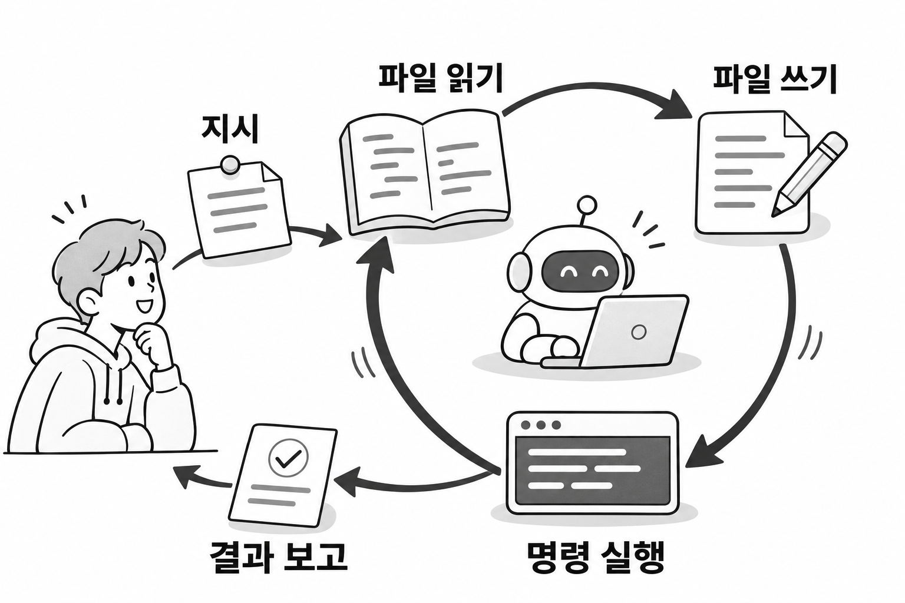
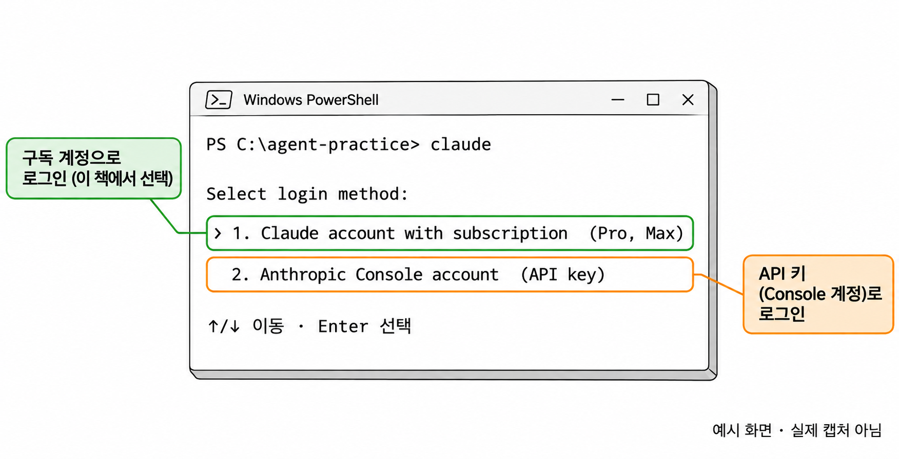
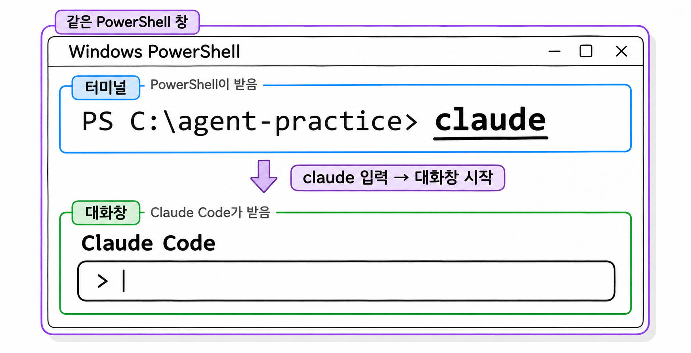
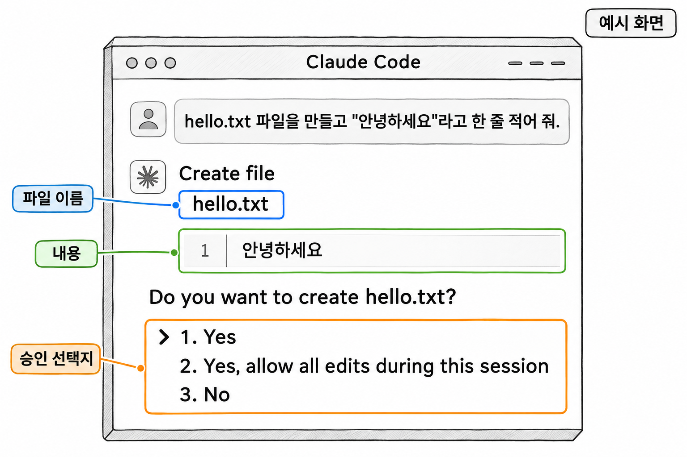
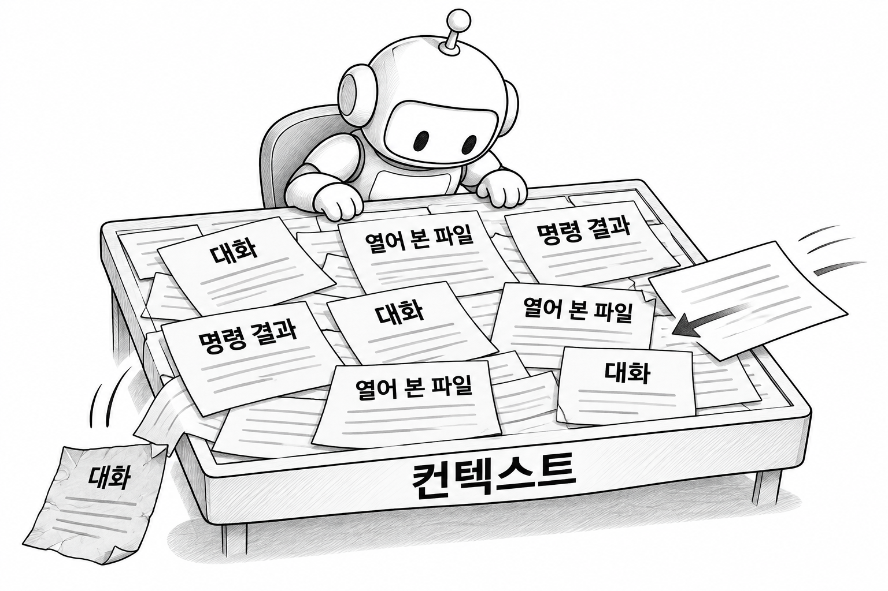
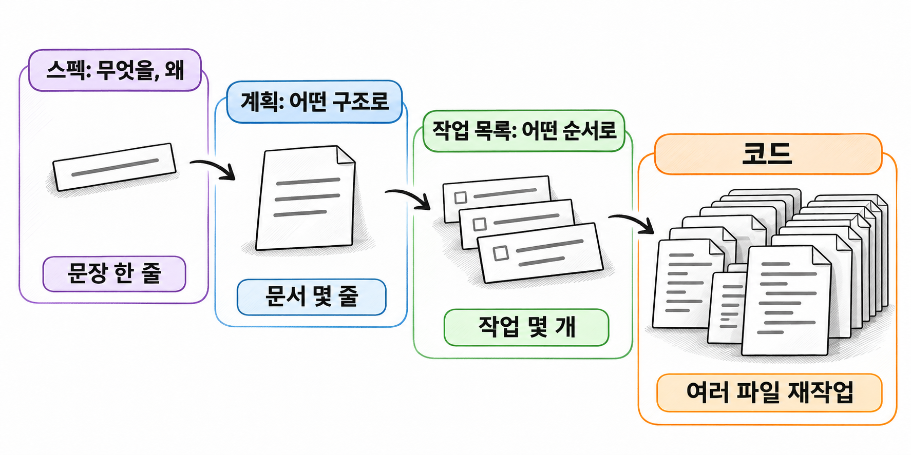
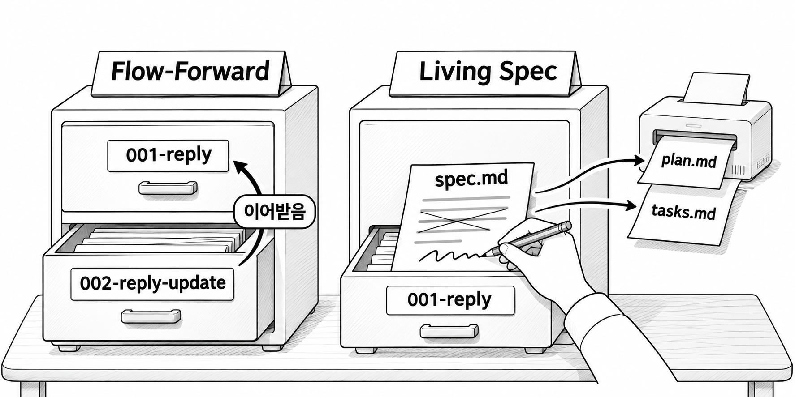

SDD강의교안
14장 · 2026-11-11
1장. 코딩 에이전트란?
1. 코딩 에이전트의 개념
1.1 코딩 에이전트의 정의
코딩 에이전트(coding agent)는 개발자의 지시에 따라 코딩 작업을 해내는 AI 도구입니다. 프로젝트의 파일을 읽고 고치며, 터미널 명령도 실행합니다. Claude Code, GitHub Copilot의 에이전트 모드 같은 도구가 여기에 속합니다. 이 책에서는 줄여서 에이전트라고 부르고, 실습에는 Claude Code를 씁니다.
에이전트에게 "댓글 목록 조회 API의 테스트를 실행해 보고 실패하면 원인을 찾아 줘"라고 지시했다고 해 봅시다. 에이전트는 테스트 명령을 실행하고, 실패 메시지를 읽고, 관련된 컨트롤러와 서비스 파일을 열어 봅니다. 그다음 코드를 고치고 테스트를 다시 실행합니다. 사람이 IntelliJ와 터미널을 오가며 하던 일을 에이전트가 같은 도구로 대신하는 셈입니다.
이 과정에서 에이전트가 하는 동작은 세 가지입니다.
| 동작 | 예 |
|---|---|
| 파일 읽기 | ReplyService.java를 열어 기존 메서드를 확인한다 |
| 파일 쓰기 | 새 클래스를 만들거나 기존 코드를 고친다 |
| 명령 실행 | .\gradlew test로 테스트를 실행하고 결과를 읽는다 |
에이전트는 이 세 동작을 한 번에 끝내지 않습니다. 읽고, 고치고, 실행해서 결과를 확인한 뒤, 그 결과를 보고 다음 동작을 정합니다. 작업이 끝났다고 판단할 때까지 이 순환을 되풀이합니다.

1.2 채팅 AI와 무엇이 다를까?
채팅 AI는 답을 글로 돌려주고, 에이전트는 프로젝트를 직접 바꿉니다. 웹 브라우저에서 쓰는 채팅 AI에 코드를 물으면 화면에 코드가 나옵니다. 그 코드를 복사해 파일에 붙이고, 실행하고, 오류가 나면 오류 메시지를 다시 붙여 넣는 일은 사람이 합니다.
에이전트는 이 왕복을 스스로 합니다. 프로젝트 폴더 안에서 실행되므로 사람이 코드를 붙여 넣지 않아도 파일을 직접 엽니다. 테스트를 실행해 실패 메시지를 직접 읽고, 코드를 고친 뒤 다시 실행합니다.
| 구분 | 채팅 AI | 코딩 에이전트 |
|---|---|---|
| 실행 위치 | 웹 브라우저 | 프로젝트 폴더의 터미널 |
| 프로젝트 파일 | 사람이 붙여 넣은 부분만 안다 | 필요한 파일을 직접 찾아 읽는다 |
| 코드 반영 | 사람이 복사해 붙인다 | 에이전트가 파일을 직접 고친다 |
| 실행과 확인 | 사람이 실행하고 결과를 전달한다 | 에이전트가 명령을 실행하고 결과를 읽는다 |
이 차이 때문에 에이전트를 쓸 때는 신경 쓸 것이 두 가지 생깁니다. 첫째, 에이전트가 내 컴퓨터의 파일과 명령을 다루므로 무엇을 허락할지 사람이 정해야 합니다. 이 내용은 3절의 권한 승인에서 다룹니다. 둘째, 에이전트는 많은 일을 알아서 하므로 지시에 빠진 부분도 스스로 채웁니다. 이 문제는 2장에서 자세히 봅니다.
2. Claude Code 시작하기
2.1 Windows에 Claude Code 설치하기
Claude Code는 터미널에서 실행하는 프로그램입니다. 이 책은 Windows의 PowerShell을 기준으로 합니다. 시작 메뉴에서 PowerShell을 열면 줄 앞에 PS C:\Users\사용자이름>처럼 PS가 붙은 프롬프트가 보입니다. PS가 없으면 PowerShell이 아니라 명령 프롬프트(CMD)를 연 것이므로 PowerShell을 다시 엽니다.
관리자 권한은 필요 없습니다. PowerShell에 다음 명령을 입력합니다.
예제 1-1 — Claude Code 설치하기
파일명: 없음(PowerShell에 입력)
irm https://claude.ai/install.ps1 | iexirm은 주소에서 설치 스크립트를 내려받고, iex는 내려받은 스크립트를 실행합니다. 설치하는 동안에는 진행 표시가 나오지 않습니다. 프롬프트가 다시 나타날 때까지 기다립니다.
설치가 끝나면 PowerShell 창을 닫고 새로 엽니다. 설치 프로그램이 바꾼 PATH(명령을 찾는 폴더 목록)는 새로 연 창부터 적용되기 때문입니다. 새 창에서 버전을 확인합니다.
예제 1-2 — 설치한 버전 확인하기
파일명: 없음(PowerShell에 입력)
claude --version실행 결과
2.1.211 (Claude Code)숫자는 설치한 시점에 따라 다릅니다. 버전 번호가 나오면 설치된 것입니다. 다음과 같은 메시지가 나오면 PATH에 설치 폴더가 아직 들어가지 않은 상태입니다.
claude : 'claude' 용어가 cmdlet, 함수, 스크립트 파일 또는 실행할 수 있는 프로그램 이름으로 인식되지 않습니다.PowerShell이 claude라는 프로그램을 찾지 못했다는 뜻입니다. 창을 새로 열었는지 먼저 확인하고, 그래도 같은 메시지가 나오면 다음 명령으로 설치 상태를 점검합니다.
코드 조각
claude doctorclaude doctor는 대화를 시작하지 않고 설치 상태와 설정 오류를 점검해 고칠 방법을 알려 줍니다.
Git for Windows가 설치되어 있으면 Claude Code는 명령을 실행할 때 Git Bash를 쓰고, 없으면 PowerShell을 씁니다. 이 책은 Git을 쓰므로 수강생 대부분의 컴퓨터에는 Git for Windows가 이미 설치되어 있습니다. 그래서 에이전트가 실행하는 명령이 ls, cat처럼 bash 형태로 보일 수 있습니다. 사람이 PowerShell에 입력하는 명령과 모양이 달라도 이상한 일이 아닙니다.
이 방식으로 설치한 Claude Code는 백그라운드에서 스스로 최신 버전으로 업데이트됩니다.
2.2 구독 플랜으로 로그인하기
Claude Code를 쓰려면 Pro나 Max 같은 유료 구독 플랜 계정이 필요합니다. 무료 플랜에는 Claude Code 사용 권한이 들어 있지 않습니다. 이 책은 구독 플랜 계정으로 로그인합니다.
로그인은 Claude Code를 처음 실행할 때 합니다. 작업할 폴더로 이동한 뒤 claude를 입력합니다. 지금은 연습용 빈 폴더를 하나 만들어 씁니다.
예제 1-3 — 연습 폴더에서 Claude Code 처음 실행하기
파일명: 없음(PowerShell에 입력)
mkdir C:\agent-practice
cd C:\agent-practice
claude처음 실행하면 화면 테마를 고르는 화면에 이어 로그인 방법을 고르는 화면이 나옵니다. 구독 플랜 계정으로 로그인하는 항목을 고르면 웹 브라우저가 열립니다. 브라우저에서 구독한 계정으로 로그인하고 Claude Code의 접근을 허용하면 로그인이 끝납니다. 그다음 터미널로 돌아갑니다. 선택 항목의 정확한 문구는 버전에 따라 다를 수 있습니다. [확인 필요]

생성형 예시 · 실제 실행 안 함
로그인한 뒤에는 폴더를 신뢰하는지 묻는 화면이 나올 수 있습니다. Claude Code가 이 폴더의 파일을 읽어도 되는지 확인하는 단계입니다. 직접 만든 폴더이므로 신뢰한다고 답합니다. 남에게 받은 낯선 폴더라면 내용을 먼저 확인한 뒤에 답합니다.
로그인 정보는 컴퓨터에 저장되므로 다음부터는 claude만 입력하면 바로 시작합니다. 다른 계정으로 바꾸려면 Claude Code 안에서 /logout으로 로그아웃한 뒤 /login으로 다시 로그인합니다.
2.3 대화창과 터미널 구분하기
claude를 실행하면 PowerShell 창 안에 Claude Code의 입력 칸이 나타납니다. 같은 창이지만 이때부터 입력하는 글은 PowerShell이 아니라 Claude Code가 받습니다. 이 책은 이 상태를 대화창, Claude Code를 실행하기 전의 PowerShell 상태를 터미널이라고 부릅니다.
| 구분 | 터미널 | 대화창 |
|---|---|---|
| 들어가는 법 | PowerShell을 연다 | 터미널에서 claude를 입력한다 |
| 화면 표시 | 줄 앞에 PS C:\...> | Claude Code 입력 칸 |
| 입력하는 것 | claude, .\gradlew test 같은 명령 | 한국어 지시문, /login 같은 / 명령 |
| 나가는 법 | 창을 닫는다 | /exit를 입력하거나 Ctrl+C를 두 번 누른다 |
같은 창을 쓰기 때문에 입력 위치를 헷갈리기 쉽습니다. 대화창에 claude --version을 입력하면 PowerShell 명령으로 실행되지 않습니다. Claude Code가 그 글을 지시로 받아들입니다. 반대로 터미널에 "테스트 실행해 줘"를 입력하면 PowerShell이 그런 명령을 찾지 못해 오류를 냅니다.

생성형 예시 · 실제 실행 안 함
대화창을 띄운 채로 사람이 직접 명령을 실행하고 싶을 때가 있습니다. 이때는 PowerShell 창을 하나 더 열어 터미널로 쓰면 둘이 섞이지 않습니다. 이 책의 실습도 대화창 하나와 터미널 하나를 나란히 두고 진행합니다.
에이전트의 작업을 중간에 멈추려면 Esc를 누릅니다. 에이전트가 하던 동작을 멈추고 다음 지시를 기다립니다.
3. 권한 승인
에이전트는 파일을 고치거나 명령을 실행하기 전에 사람에게 허락을 구합니다. 이 과정을 권한 승인(permission approval)이라고 합니다. 파일을 읽기만 하는 동작은 기본적으로 묻지 않습니다. 프로젝트를 바꾸거나 컴퓨터에 영향을 주는 동작만 묻습니다.
3.1 파일 수정 승인
에이전트가 파일을 만들거나 고치려 하면, 바꿀 내용을 먼저 보여 주고 승인을 기다립니다. 연습 폴더의 대화창에 다음 지시를 입력해 봅니다.
예제 1-4 — 파일 수정 승인 받아 보기
파일명: 없음(Claude Code 대화창에 입력)
hello.txt 파일을 만들고 "안녕하세요"라고 한 줄 적어 줘.에이전트는 파일을 바로 만들지 않습니다. 만들 파일의 이름과 내용을 보여 준 뒤 승인 여부를 묻습니다. 기존 파일을 고칠 때는 지울 줄과 더할 줄을 함께 보여 줍니다. 선택지는 대략 다음 세 가지입니다. 화면의 정확한 문구는 버전에 따라 다를 수 있습니다. [확인 필요]
| 선택지 | 뜻 |
|---|---|
| Yes | 이번 수정만 허락한다 |
| Yes, allow all edits during this session | 이 대화가 끝날 때까지 파일 수정은 묻지 않고 허락한다 |
| No | 거절하고, 어떻게 다르게 할지 에이전트에게 말한다 |

생성형 예시 · 실제 실행 안 함
No를 고르면 거절한 이유나 원하는 방향을 입력할 수 있습니다. "파일 이름을 greeting.txt로 바꿔 줘"처럼 적으면 에이전트가 그 말을 반영해 다시 제안합니다. 거절은 작업을 끝내는 버튼이 아니라 방향을 바로잡는 수단입니다.
3.2 명령 실행 승인
에이전트가 터미널 명령을 실행하려 할 때도 실행할 명령을 그대로 보여 주고 승인을 기다립니다. 예를 들어 Spring Boot 프로젝트에서 "테스트를 실행해 줘"라고 지시하면 에이전트는 ./gradlew test 같은 명령을 실행해도 되는지 묻습니다. 2.1에서 말한 대로 Git Bash를 쓰는 환경에서는 명령이 이렇게 bash 형태로 보입니다.
선택지는 파일 수정과 비슷합니다. 이번만 허락하기, 같은 종류의 명령은 이 프로젝트에서 다시 묻지 않기, 거절하기가 있습니다. [확인 필요] 다시 묻지 않기를 고르면 그 규칙이 프로젝트 설정에 저장되어 다음 대화에도 적용됩니다.
명령 실행은 파일 수정보다 영향 범위가 넓습니다. 파일 수정은 화면에 보여 준 그 파일만 바꿉니다. 명령은 여러 파일을 한꺼번에 지우거나 Git 기록을 바꾸거나 외부 서버에 접속할 수 있습니다. 그래서 명령 승인 화면은 한 번 더 읽고 고릅니다.
3.3 승인할 때 확인할 것
승인 화면에서 확인할 것은 세 가지입니다.
첫째, 대상입니다. 고치려는 파일이 지시한 작업과 관계있는 파일인지 봅니다. 댓글 기능을 지시했는데 SecurityConfig.java나 build.gradle을 고치려 한다면 이유를 먼저 묻습니다.
둘째, 내용입니다. 바뀌는 줄을 읽고 지시하지 않은 변경이 섞여 있지 않은지 봅니다. 기존 메서드 이름을 바꾸거나 테스트를 지우는 변경은 특히 주의합니다. 실패하는 테스트를 지워서 통과시키는 일은 사람이 보지 않으면 그대로 지나갑니다.
셋째, 되돌릴 수 있는지입니다. 다음 명령은 실행하면 되돌리기 어려우므로 무엇을 하는지 이해한 뒤에만 허락합니다.
| 명령 | 위험한 이유 |
|---|---|
rm -rf, Remove-Item -Recurse | 폴더와 파일을 통째로 지운다 |
git reset --hard, git push --force | 커밋하지 않은 변경이나 원격 저장소 기록을 지운다 |
| 데이터베이스를 지우거나 다시 만드는 명령 | 저장된 데이터가 사라진다 |
"다시 묻지 않기"는 편하지만, 처음 에이전트를 쓸 때는 되도록 하나씩 승인하는 편이 좋습니다. 에이전트가 어떤 순서로 무엇을 하는지 직접 보면서 익히는 과정이기 때문입니다. 또 에이전트에게 일을 맡기기 전에 Git으로 커밋해 두면, 결과가 마음에 들지 않을 때 커밋한 상태로 돌아갈 수 있습니다.
4. 컨텍스트와 대화 길이의 한계
4.1 컨텍스트의 정의
컨텍스트(context)는 에이전트가 한 번에 읽고 참고할 수 있는 글의 범위입니다. 지금까지 나눈 대화, 에이전트가 열어 본 파일의 내용, 실행한 명령의 결과가 모두 이 범위에 들어갑니다. 에이전트는 다음 동작을 정할 때 컨텍스트 안에 있는 글만 근거로 씁니다.
사람의 작업 책상에 비유할 수 있습니다. 사람은 책상 위에 펼쳐 둔 문서만 보면서 일할 수 있고, 책상의 넓이는 정해져 있습니다. 새 문서를 계속 올리면 언젠가는 오래된 문서를 치워야 합니다.

에이전트가 큰 파일을 여러 개 열거나 테스트 출력이 길게 나오면 이 책상이 빠르게 찹니다. 대화창에서 /context를 입력하면 컨텍스트를 얼마나 쓰고 있는지 볼 수 있습니다.
4.2 대화가 길어지면 생기는 일
컨텍스트가 가득 차면 Claude Code는 앞부분의 대화를 요약해 공간을 만듭니다. 이 동작을 압축(compaction)이라고 합니다. 압축은 저절로 일어나기도 하고, 대화창에 /compact를 입력해 직접 실행할 수도 있습니다.
요약은 원래 대화보다 짧으므로 세부 내용이 빠집니다. 어떤 내용이 남을지는 요약하는 쪽이 정하며, 사람이 고르지 않습니다. 그래서 다음과 같은 일이 생깁니다.
대화 초반에 "댓글 삭제는 작성자 본인만 할 수 있게 하자"고 정했다고 해 봅시다. 그 뒤로 파일을 여러 개 열고 테스트를 몇 번 돌리며 한참 작업했습니다. 이때 에이전트가 관리자도 댓글을 지울 수 있는 코드를 씁니다. 에이전트가 합의를 무시한 것이 아닙니다. 그 합의가 요약 과정에서 빠졌거나 흐려져서 더는 컨텍스트 안에 없는 것입니다.
에이전트는 합의가 빠졌다는 사실을 알려 주지 않습니다. 사람도 한참 지나서야 코드를 읽다가 알아차리는 경우가 많습니다. 대화가 길어질수록 초반에 정한 결정을 다시 확인해야 하는 이유입니다.
4.3 새 대화를 시작하면 생기는 일
대화창에서 /clear를 입력하거나 Claude Code를 종료했다가 다시 실행하면 새 대화가 시작됩니다. 새 대화의 컨텍스트에는 이전 대화의 내용이 들어 있지 않습니다. 어제 한 시간 동안 설명한 프로젝트 규칙도, 함께 정한 설계도 에이전트는 모릅니다.
이전 대화를 다시 열어 이어 갈 수는 있습니다. 터미널에서 claude --continue로 시작하면 가장 최근 대화를 이어 가고, 대화창에서 /resume을 입력하면 이전 대화 목록에서 골라 엽니다. 하지만 이어 간 대화도 길어지면 4.2에서 본 압축을 피할 수 없습니다.
반면 프로젝트 폴더에 저장된 파일은 대화가 바뀌어도 그대로 남습니다. 에이전트는 새 대화에서도 그 파일을 다시 열어 읽을 수 있습니다.
| 결정을 둔 곳 | 대화가 길어지면 | 새 대화에서 |
|---|---|---|
| 대화 속 | 요약되며 빠질 수 있다 | 없다 |
| 프로젝트의 파일 | 다시 읽으면 그대로 있다 | 다시 읽으면 그대로 있다 |
중요한 결정을 대화가 아니라 파일에 남겨야 하는 이유가 이 차이에 있습니다. 결정을 파일에 남긴다는 원칙은 2장에서 다룰 한 줄 지시의 문제, 그리고 3장의 스펙 주도 개발로 이어집니다.
2장. 한 줄 지시는 무엇이 문제일까?
1. 추측으로 채우기
1.1 "댓글 기능 만들어 줘"에 빠진 결정들
이 책의 예제 프로젝트는 이미 만들어 둔 스프링 부트 블로그 API입니다. 여기에 댓글 기능을 넣으려고 Claude Code의 대화창에 다음 한 줄을 입력했다고 합시다.
코드 조각
블로그에 댓글 기능 만들어 줘에이전트는 되묻지 않고 바로 파일을 만들기 시작합니다. 지시는 한 줄이지만 댓글 기능을 만들려면 정해야 할 것이 많습니다. 빠진 결정은 아래 표처럼 두 종류로 나뉩니다.
| 종류 | 정해지지 않은 것 |
|---|---|
| 기능 요구 | 로그인하지 않은 사람도 댓글을 쓸 수 있는가 |
| 기능 요구 | 남의 댓글은 누가 지울 수 있는가 |
| 기능 요구 | 댓글은 몇 자까지 쓸 수 있는가 |
| 기능 요구 | 지운 댓글은 목록에서 사라지는가, "삭제된 댓글"이라는 표시가 남는가 |
| 프로젝트 규칙 | 이미 있는 Reply 엔티티를 쓰는가, Comment 엔티티를 새로 만드는가 |
| 프로젝트 규칙 | 응답은 기존 Resp 형태를 따르는가, 새 형태를 만드는가 |
기능 요구는 기획자나 개발자가 정해야 합니다. 코드를 아무리 읽어도 답이 나오지 않습니다. 프로젝트 규칙은 기존 코드에 답이 있지만, 에이전트가 그 코드를 찾아 읽고 따른다는 보장이 없습니다.
사람 개발자라면 이 가운데 몇 가지는 되물었을 것입니다. 에이전트는 대개 묻지 않고, 정해지지 않은 자리를 학습한 코드에서 가장 흔했던 방식으로 채웁니다. 이것이 한 줄 지시의 첫 번째 문제입니다. 말하지 않은 요구를 에이전트가 추측으로 채웁니다.

1.2 한 줄 지시로 나온 코드의 다섯 가지 문제
한 줄 지시를 받은 에이전트는 다음과 같은 컨트롤러를 자주 만듭니다. 잘못된 예로 보여 주는 코드이므로 프로젝트에 넣지 않습니다.
코드 조각
// 요구를 한 줄로만 주었을 때 흔히 나오는 코드 (잘못된 예)
@RestController
@RequiredArgsConstructor
public class CommentController {
private final CommentRepository commentRepository;
@PostMapping("/comments")
public Comment save(@RequestBody Comment comment) {
return commentRepository.save(comment);
}
}컴파일도 되고, 보안 설정이 없는 새 프로젝트라면 댓글 저장도 됩니다. 스프링 부트 예제로 보면 흠잡을 곳이 적습니다. 하지만 이 블로그 프로젝트의 규칙에 비춰 보면 다섯 군데가 어긋납니다.
| 번호 | 생성된 코드 | 이 프로젝트의 방식 |
|---|---|---|
| 1 | Comment 엔티티를 새로 만들었다 | 이미 있는 Reply 엔티티와 reply_tb 테이블을 쓴다 |
| 2 | 컨트롤러가 리포지토리를 직접 호출한다 | 컨트롤러는 서비스만 호출하고, 서비스가 리포지토리를 호출한다 |
| 3 | 엔티티를 요청과 응답에 그대로 쓴다 | 요청 · 응답 전용 record를 쓴다 |
| 4 | 엔티티를 그대로 반환한다 | 성공 응답은 Resp.ok(...)로 감싼다 |
| 5 | 주소가 /comments다 | /api/로 시작하는 주소를 쓴다 |
1번은 같은 개념의 테이블이 둘로 갈라지는 문제입니다. 이미 쌓인 댓글 데이터는 reply_tb에 있는데 새 코드는 다른 테이블을 쓰게 됩니다. 2번과 3번은 계층 규칙과 요청 · 응답 객체 규칙을 어긴 것입니다. 컨트롤러가 리포지토리를 바로 부르니 로그인 검사나 길이 검사를 넣을 서비스 계층이 아예 없습니다. 4번 때문에 클라이언트는 댓글 API에서만 다른 형태의 응답을 받습니다.
5번은 겉으로 잘 드러나지 않습니다. 예제 프로젝트의 SecurityConfig는 /api/로 시작하는 주소에만 접근 규칙을 정해 두었습니다. 그래서 /comments로 들어오는 요청은 마지막 규칙에 걸려 모두 차단됩니다. 코드에 문법 오류가 없으니 원인을 찾는 데 시간이 걸립니다.
다섯 문제 모두 에이전트가 틀린 코드를 쓴 탓이 아닙니다. 에이전트는 스프링 부트 프로젝트에서 흔히 쓰는 방식을 골랐을 뿐인데, 그 방식이 이 프로젝트의 방식과 달랐습니다. 지시에 없는 결정은 이렇게 "그럴듯하지만 우리 것이 아닌" 코드로 돌아옵니다.
2. 결정 사라짐
2.1 대화에서 합의한 결정이 사라지는 이유
첫 번째 문제를 피하려면 빠진 결정을 대화로 알려 주면 될 것 같습니다. 실제로 대화 초반에 "댓글 저장은 기존처럼 서비스 계층을 거쳐서 하자"고 말하면 에이전트는 그대로 따릅니다. 그런데 작업을 40분쯤 이어 가다 보면 에이전트가 컨트롤러에서 리포지토리를 직접 호출하는 코드를 다시 쓰기도 합니다.
에이전트가 고집을 부린 것은 아닙니다. 1장에서 본 것처럼 에이전트는 컨텍스트(context) 안에 있는 글만 보고 판단합니다. 컨텍스트는 에이전트가 한 번에 읽고 참고할 수 있는 글의 범위입니다. 대화가 길어져 이 범위가 차면 앞부분이 압축(compaction)되어 요약으로 바뀝니다. 요약 과정에서 초반의 합의는 한 줄로 줄거나 빠질 수 있습니다. 새 대화에는 이전 대화의 내용이 처음부터 들어 있지 않습니다.
이것이 한 줄 지시의 두 번째 문제입니다. 대화에서 합의한 결정은 대화가 길어지거나 바뀌면 사라집니다. 결정을 대화로만 전하면 첫 번째 문제를 풀어도 시간이 지나면 같은 문제가 다시 생깁니다.

2.2 대화에만 있는 결정과 파일에 적은 결정
저장소 안의 파일은 대화가 길어져도 사라지지 않습니다. 에이전트는 필요할 때마다 파일을 다시 읽을 수 있고, 새 대화를 시작해도 마찬가지입니다. 같은 결정이라도 어디에 두느냐에 따라 아래 표처럼 남는 정도가 다릅니다.
| 상황 | 대화에만 있는 결정 | 파일에 적은 결정 |
|---|---|---|
| 대화가 길어지면 | 요약되거나 밀려난다 | 그대로 남는다 |
| 새 대화를 시작하면 | 없다 | 다시 읽을 수 있다 |
| 다른 팀원이 작업하면 | 전달되지 않는다 | 저장소에서 함께 본다 |
| 검토와 이력 | 남지 않는다 | 풀 리퀘스트와 커밋에 남는다 |
표의 아래 두 행은 팀으로 일할 때 차이가 커집니다. 내가 에이전트와 나눈 대화는 내 화면에만 있습니다. 동료가 다른 대화창에서 같은 기능을 고치면, 그 대화의 에이전트는 내가 합의한 결정을 알 길이 없습니다. 파일에 적은 결정은 Git으로 공유되고, 누가 언제 바꿨는지도 커밋에 남습니다.
3. 해결의 방향 — 결정을 파일에 적기
두 문제를 함께 보면 해결의 방향이 나옵니다. 먼저 에이전트가 추측하지 않도록 빠진 결정을 미리 정합니다. 그 결정은 대화가 아니라 저장소 안의 파일에 적습니다. 마지막으로 에이전트가 코드를 쓰기 전에 그 파일을 읽게 합니다.
1.1의 표에 이 방향을 대 보면 결정마다 적을 자리가 보입니다. "로그인한 사람만 댓글을 쓴다"나 "댓글은 작성자만 지운다" 같은 기능 요구는 이번 기능을 다루는 문서에 적습니다. "컨트롤러는 서비스만 호출한다", "성공 응답은 Resp.ok(...)로 감싼다" 같은 프로젝트 규칙은 기능과 상관없이 늘 지키는 규칙이므로 따로 한 곳에 모아 둡니다. 그러면 기능을 새로 만들 때마다 같은 규칙을 다시 말하지 않아도 됩니다.
다만 파일 하나에 결정을 몰아 적는 것만으로는 부족합니다. 무엇을 먼저 정하고 무엇을 나중에 정할지, 어떤 문서를 누가 검토할지까지 정해야 이 방법을 실제 작업에 쓸 수 있습니다. 3장에서 다룰 스펙 주도 개발(SDD)은 이 방향을 문서의 종류와 작업 순서로 정리한 방법입니다.
3장. 스펙 주도 개발이란?
1. SDD의 개념
1.1 SDD의 정의
스펙 주도 개발(Spec-Driven Development, SDD)은 코드를 쓰기 전에 무엇을 만들지 문서로 확정하는 개발 방식입니다. 에이전트는 확정된 문서를 기준으로 구현합니다. 2장에서 정한 해결 방향인 "결정을 파일에 적기"를 하나의 절차로 만든 것이 SDD입니다.
이 문서를 스펙(spec, 명세)이라고 부릅니다. 스펙은 수백 쪽짜리 설계서가 아닙니다. 만들려는 기능이 어떻게 동작해야 하는지를 평범한 문장으로 적은 문서입니다. 에이전트는 빈칸을 추측으로 채우지 않고 스펙을 읽습니다. 대화가 길어지거나 새 대화를 시작해도 스펙 파일은 그대로 남습니다. 스펙 파일 하나로 2장에서 본 두 문제를 함께 막는 셈입니다.
1.2 스펙에 적는 것
스펙에는 기능을 쓰는 사람의 눈으로 본 동작을 적습니다. 댓글 기능이라면 다음과 같은 내용이 들어갑니다.
| 적는 것 | 댓글 기능에서의 예 |
|---|---|
| 누가 무엇을 하면 어떤 결과가 나오는가 | 로그인한 사용자가 글에 댓글을 쓰면 그 글의 댓글 목록에 표시된다 |
| 무엇이 되면 성공인가 | 로그인하지 않은 사용자의 댓글 작성 요청은 모두 거부된다 |
| 이번에 만들지 않는 것 | 댓글 수정과 대댓글은 이번 범위에 넣지 않는다 |
| 바뀌면 안 되는 기존 동작 | 글 목록 조회와 글 작성은 지금과 똑같이 동작한다 |
표의 아래 두 줄은 한 줄 지시에서 가장 쉽게 빠지는 내용입니다. 범위 밖을 적지 않으면 에이전트가 대댓글까지 "알아서" 만들 수 있습니다. 바뀌면 안 되는 동작을 적지 않으면 에이전트가 기존 글 API를 건드려도 막을 근거가 없습니다. 스펙을 실제로 작성하고 검토하는 방법은 7장에서 다룹니다.
2. SDD에 대한 흔한 오해
2.1 스펙은 사람이 처음부터 다 쓴다?
그렇지 않습니다. 사람은 원하는 바를 몇 문장으로 말하고, 에이전트가 그 말을 정해진 양식의 문서로 풀어 씁니다. 사람은 그 초안을 읽고 틀린 곳과 빠진 곳을 고칩니다.
그래서 SDD에서 사람이 하는 일은 쓰기보다 검토에 가깝습니다. 문서를 쓰는 부담은 크지 않습니다. 대신 초안을 그대로 승인하면 에이전트의 추측이 문서에 그대로 굳어 버립니다. 이 책이 단계마다 "생성된 문서 읽기"와 "검토하기"를 따로 두는 이유입니다.
2.2 스펙에 기술을 적는다?
스펙에는 기술을 적지 않습니다. JPA를 쓸지, 테이블을 어떻게 나눌지, 클래스 이름을 무엇으로 할지는 다음 문서인 계획(plan)에 적습니다.
| 스펙에 맞는 문장 | 계획에 갈 문장 |
|---|---|
| 다른 사람의 댓글은 삭제할 수 없다 | ReplyService에서 작성자를 비교해 권한을 검사한다 |
| 글을 지우면 그 글의 댓글도 함께 사라진다 | Reply 엔티티에 cascade 설정을 둔다 |
| 댓글 목록은 작성 순서대로 보인다 | id 오름차순으로 조회하는 쿼리 메서드를 추가한다 |
왼쪽 문장은 기획자도 읽고 맞는지 틀린지 판단할 수 있습니다. 오른쪽 문장은 같은 요구를 어떻게 구현할지 고른 결과입니다. 그래서 다른 기술을 골라도 왼쪽 문장은 바뀌지 않습니다. 이 구분이 SDD의 뼈대입니다. 이렇게 나누는 이유는 3절에서 이어서 설명합니다.
3. 문서를 스펙 · 계획 · 작업 목록으로 나누는 이유
3.1 층마다 답하는 질문
SDD에서는 기능 하나마다 성격이 다른 문서 세 개를 차례로 만들고, 그 문서들을 바탕으로 코드를 만듭니다. 문서마다 답하는 질문이 다릅니다.
| 층 | 답하는 질문 | 댓글 기능에서의 예 |
|---|---|---|
| 스펙 | 무엇을, 왜 만드는가 | 로그인한 사용자만 댓글을 쓸 수 있다 |
| 계획 | 어떤 기술과 구조로 만드는가 | 기존 Reply 엔티티를 쓰고, ReplyService를 추가해 기존 계층 구조를 따른다 |
| 작업 목록 | 어떤 순서로 만드는가 | 1. 리포지토리 추가 2. 요청 · 응답 객체 추가 3. 서비스와 권한 검사 |
| 코드 | 위 문서들의 결과 | ReplyService.java 같은 실제 자바 파일 |
작업 목록(tasks)은 계획을 에이전트가 한 번에 처리할 수 있는 크기로 쪼개 순서대로 늘어놓은 문서입니다. 각 층은 바로 위 층을 근거로 만듭니다. 계획은 스펙을, 작업 목록은 계획을 근거로 하므로 위 층이 틀리면 아래 층도 모두 틀립니다.
3.2 같은 요구가 층마다 적히는 모습
"남의 댓글은 지울 수 없다"는 요구 하나를 층마다 따라가 보면 구분이 분명해집니다.
| 층 | 적히는 모습 |
|---|---|
| 스펙 | 사용자가 다른 사람의 댓글을 삭제하려고 하면 거부된다 |
| 계획 | ReplyService가 권한을 검사하고, 권한이 없으면 ForbiddenException을 던진다 |
| 작업 목록 | T004 ReplyService에 댓글 삭제 메서드와 권한 검사 구현 |
| 코드 | 아래 코드 조각 |
코드 조각
if (!isReplyOwner && !isBoardOwner) {
throw new ForbiddenException("댓글을 삭제할 권한이 없습니다");
}코드에는 isBoardOwner 조건도 들어 있습니다. 댓글 작성자뿐 아니라 글 작성자도 댓글을 지울 수 있다는 결정입니다. 이 결정은 코드에서 처음 생긴 것이 아니라, 스펙에 적혀 있다가 계획과 작업 목록을 거쳐 코드까지 내려온 것이어야 합니다. 층이 내려갈수록 기술 용어는 늘어나지만 요구 자체는 바뀌지 않습니다.
3.3 고치는 비용과 검토하는 사람
문서를 나누는 첫째 이유는 고치는 비용입니다. "글 작성자도 댓글을 지울 수 있어야 한다"는 요구가 빠졌다고 합시다. 스펙 단계에서 발견하면 문장 한 줄을 더하면 끝납니다. 코드가 다 만들어진 뒤에 발견하면 서비스, 컨트롤러, 테스트를 모두 고쳐야 합니다. 층마다 검토하면 문제를 가장 싼 단계에서 잡을 수 있습니다.

그림 3-1처럼 같은 누락이라도 어느 층에서 발견하느냐에 따라 고칠 양이 크게 달라집니다.
둘째 이유는 검토하는 사람이 다를 수 있다는 점입니다. 기술이 없는 스펙은 기획자나 고객도 읽고 판단할 수 있습니다. 계획은 기존 코드 구조를 아는 개발자가 판단합니다. 두 내용이 한 문서에 섞이면 기획자는 기술 용어 때문에 읽기 어렵고, 개발자는 요구와 구현 선택을 구분하기 어렵습니다. 층을 나누면 사람마다 자기가 판단할 문서만 맡아 검토하면 됩니다.
4. 스펙을 얼마나 오래 쓸까?
4.1 spec-first · spec-anchored · spec-as-source
기능을 다 만든 뒤 스펙을 어떻게 다루느냐에 따라 SDD를 세 수준으로 나눕니다. Thoughtworks의 Birgitta Böckeler가 SDD 도구들을 비교하며 정리한 구분입니다.
| 수준 | 구현이 끝난 뒤의 스펙 | 사람이 고치는 것 |
|---|---|---|
| spec-first | 더 이상 관리하지 않는다 | 이후 변경은 코드 |
| spec-anchored | 남겨 두고, 그 기능을 고칠 때 기준으로 쓴다 | 스펙과 코드 둘 다 |
| spec-as-source | 유일한 원본이 된다 | 스펙만 고치고, 코드는 매번 스펙에서 다시 생성한다 |
spec-first는 스펙을 기능 하나를 만드는 동안만 쓰는 설계 메모처럼 다룹니다. 처음 SDD를 시작할 때는 이 수준만으로도 2장의 두 문제를 막을 수 있습니다.
팀에서 오래 쓰려면 spec-anchored를 어떻게 운영할지 정해야 합니다. 댓글 수정 같은 다음 요구가 들어왔을 때 기존 스펙을 고칠지, 새 스펙을 쓸지를 정하는 문제입니다. 이 문제는 11장의 보존 모델에서 다룹니다.
spec-as-source는 사람이 코드를 직접 고치지 않는다는 뜻이라 아직 일반적인 실무 방식이 아닙니다. Spec Kit의 설계 문서도 "코드는 스펙을 따른다"는 방향을 내세웁니다. 하지만 이 책은 생성된 코드를 사람이 읽고 리뷰하며 고치는 spec-first와 spec-anchored를 기준으로 진행합니다.
4장. Spec Kit이란?
1. Spec Kit의 개념
1.1 Spec Kit의 정의
Spec Kit은 GitHub이 공개한 오픈소스 도구입니다. 3장에서 배운 SDD 절차를 코딩 에이전트 안에서 명령으로 실행하게 해 줍니다. 라이선스는 MIT라서 회사 프로젝트에도 자유롭게 쓸 수 있습니다.
3장에서 SDD는 스펙 · 계획 · 작업 목록을 차례로 확정한 다음 구현하는 방식이라고 했습니다. 이 절차를 사람이 매번 직접 지시하면 문서 목차가 그때그때 달라집니다. 순서를 건너뛰는 일도 생깁니다. Spec Kit은 문서 양식과 작업 순서를 파일로 고정해서 에이전트가 늘 같은 방식으로 일하게 합니다.
1.2 Spec Kit에 AI 모델이 없다는 뜻
Spec Kit을 처음 보면 새로운 AI나 새로운 에디터로 오해하기 쉽습니다. 하지만 Spec Kit에는 AI 모델이 들어 있지 않습니다. 스펙의 문장을 쓰고 코드를 만드는 일은 지금 쓰고 있는 에이전트가 합니다. 이 책에서는 Claude Code입니다.
그래서 결과물의 품질은 Spec Kit보다 두 가지에 달려 있습니다. 하나는 어떤 에이전트를 쓰는지이고, 다른 하나는 사람이 결과를 얼마나 꼼꼼히 검토하는지입니다. Spec Kit을 설치했다고 에이전트가 더 똑똑해지지는 않습니다. 에이전트가 정해진 양식과 순서를 벗어나지 않게 될 뿐입니다.
| 오해 | 실제 |
|---|---|
| Spec Kit은 새로운 AI다 | AI 모델이 없다. 글과 코드는 에이전트가 쓴다 |
| Spec Kit은 새 에디터나 앱이다 | 프로젝트 폴더에 들어가는 파일 묶음이다 |
| Spec Kit을 쓰면 결과가 저절로 좋아진다 | 품질은 에이전트와 검토하는 사람이 정한다 |
2. Spec Kit을 이루는 세 가지
Spec Kit이 프로젝트에 넣어 주는 것은 템플릿 · 명령 파일 · 보조 스크립트입니다. 이 세 가지를 프로젝트에 설치하는 프로그램은 따로 있습니다. 4절에서 다룰 Specify CLI입니다.

그림 4-1처럼 세 가지는 모두 프로젝트 폴더 안의 파일입니다. 이 파일들을 읽고 실제로 일하는 것은 에이전트입니다. 파일이 어느 폴더에 생기는지는 5장에서 직접 설치하면서 확인합니다.
2.1 템플릿
템플릿(template)은 스펙 · 계획 · 작업 목록을 어떤 목차로 쓸지 정해 둔 마크다운 파일입니다. 빈칸이 있는 서식 종이에 해당합니다. 예를 들어 스펙 템플릿에는 사용자 시나리오, 요구사항, 성공 기준을 적을 자리가 미리 마련되어 있습니다.
템플릿이 있으면 기능이 몇 개가 되든 문서의 구조가 같아집니다. 검토하는 사람은 어느 스펙을 열든 같은 자리에서 같은 정보를 찾습니다. 2장에서 본 "추측으로 채우기"도 줄어듭니다. 템플릿에 빈칸이 있으면 에이전트가 그 항목을 건너뛰지 않고 채우거나, 모르는 부분이라고 표시하기 때문입니다.
2.2 명령 파일
명령 파일은 에이전트에게 어떤 순서로 무엇을 하라고 지시하는 프롬프트를 담은 파일입니다. 명령 파일도 마크다운 파일입니다. 스펙을 만드는 명령 파일에는 "어떤 스크립트를 실행하고, 어떤 템플릿을 열어, 무엇을 채우고, 무엇은 쓰지 말라"는 지시가 적혀 있습니다.
명령 파일은 SDD 단계마다 하나씩 있습니다. constitution · specify · clarify · plan · tasks · analyze · implement 같은 단계 이름이 명령 이름이 됩니다. 사용자가 대화창에 /speckit-specify를 입력하면 Claude Code가 그 이름의 명령 파일을 찾아 읽습니다.
명령 파일은 평범한 텍스트입니다. 그래서 열어 보면 에이전트가 무슨 지시를 받는지 그대로 읽을 수 있습니다. 12장에서 커뮤니티 확장을 설치하기 전에 명령 파일부터 읽어 보는 것도 이 성질 덕분입니다.
2.3 보조 스크립트
보조 스크립트는 사람이나 에이전트가 매번 손으로 하기 번거로운 반복 작업을 처리하는 작은 프로그램입니다. 기능마다 폴더를 만들고 001, 002처럼 번호를 매기는 일이 대표적입니다. 현재 작업 중인 기능 폴더의 경로를 찾아 알려 주는 일도 스크립트가 맡습니다.
이런 일을 에이전트에게 매번 말로 시키면 번호가 겹치거나 폴더 이름 규칙이 어긋날 수 있습니다. 정해진 규칙이 있는 일은 AI의 판단에 맡기지 않고 스크립트로 처리하는 편이 안전합니다. 보조 스크립트는 bash용과 PowerShell용이 따로 있습니다. 이 책은 Windows를 쓰므로 5장에서 PowerShell용을 고릅니다.
3. 명령 하나를 입력하면 일어나는 일
3.1 에이전트와 사람의 역할 나누기
대화창에 다음 명령을 입력했다고 합시다. 명령 이름 뒤에는 만들고 싶은 기능을 적되, 사용할 기술은 적지 않습니다.
코드 조각
/speckit-specify 블로그 글에 댓글을 달 수 있게 한다이 한 줄을 입력하면 아래 표의 순서로 일이 진행됩니다.
| 순서 | 일어나는 일 | 하는 쪽 |
|---|---|---|
| 1 | speckit-specify 명령 파일에 적힌 지시를 읽는다 | 에이전트 |
| 2 | 지시에 따라 보조 스크립트를 실행해 번호가 붙은 기능 폴더를 만든다 | 에이전트가 스크립트를 실행 |
| 3 | 스펙 템플릿을 열고 사용자가 준 설명으로 빈칸을 채워 spec.md를 만든다 | 에이전트 |
| 4 | 생성된 spec.md를 읽고 빠지거나 틀린 곳을 고친다 | 사람 |
1~3번은 에이전트가 하고, Spec Kit의 파일은 재료와 지시서 역할만 합니다. 2번에서 스크립트를 실행하거나 3번에서 파일을 만들 때는 1장에서 배운 권한 승인 화면이 뜰 수 있습니다. 이때 대상과 내용을 보고 승인하는 것도 사람의 몫입니다.
4번은 Spec Kit이 대신해 주지 않는 단계입니다. 에이전트는 템플릿의 빈칸을 그럴듯한 내용으로 채울 수 있습니다. 그 내용이 우리 프로젝트에 맞는지는 사람이 판단해야 합니다. 7장부터 9장까지 단계마다 "생성된 문서 읽기"와 "검토하기"가 따로 있는 것도 이 때문입니다.
3.2 여러 에이전트에서 쓸 수 있는 이유
Spec Kit은 Claude Code 말고도 GitHub Copilot, Codex, Gemini CLI, Cursor 같은 여러 에이전트에서 쓸 수 있습니다. 템플릿 · 명령 파일 · 보조 스크립트가 모두 특정 에이전트에 묶이지 않는 평범한 파일이기 때문입니다. 마크다운 지시문을 읽고 터미널 명령을 실행할 수 있는 에이전트라면 같은 절차를 따를 수 있습니다.
에이전트마다 다른 점은 명령 파일을 찾는 위치와 명령을 부르는 표기 정도입니다. Specify CLI는 설치할 때 어떤 에이전트용인지 지정받아 그 에이전트가 읽는 폴더에 명령 파일을 넣습니다. 이 책은 Claude Code용으로 설치하며, 구체적인 옵션과 표기는 5장에서 다룹니다.
이 구조 덕분에 팀원마다 다른 에이전트를 쓰더라도 같은 템플릿으로 문서를 만들 수 있습니다. 반대로 같은 명령을 입력해도 에이전트가 다르면 문서의 문장과 코드는 달라질 수 있습니다. 1.2에서 말했듯이 글을 쓰는 것은 에이전트이기 때문입니다.
4. Specify CLI와 Python · uv
4.1 Specify CLI의 역할
Specify CLI는 템플릿 · 명령 파일 · 보조 스크립트를 프로젝트에 설치하는 명령줄 프로그램입니다. CLI(Command Line Interface)는 마우스 대신 터미널에 명령을 입력해서 쓰는 프로그램이라는 뜻입니다. 터미널에서 specify로 시작하는 명령을 입력하면 Specify CLI가 실행됩니다.
Specify CLI를 쓰는 때는 정해져 있습니다. 프로젝트에 Spec Kit을 처음 넣을 때와 나중에 새 버전으로 업그레이드할 때입니다. 스펙을 쓰고 계획을 세우고 구현하는 동안에는 Specify CLI를 쓰지 않습니다. 이 단계들은 모두 에이전트의 대화창에서 /speckit-으로 시작하는 명령으로 진행합니다.
| 도구 | 입력하는 곳 | 쓰는 때 |
|---|---|---|
Specify CLI (specify ...) | 터미널 | 설치와 업그레이드 |
Spec Kit 명령 (/speckit-...) | 에이전트 대화창 | 스펙 · 계획 · 작업 목록 작성과 구현 |
4.2 Python과 uv가 필요한 이유
Specify CLI는 Python으로 만든 프로그램입니다. 그래서 실행하려면 컴퓨터에 Python 3.11 이상이 있어야 합니다.
uv는 Python 프로그램을 설치하고 관리하는 도구입니다. Java 개발자에게 익숙한 말로 하면, 필요한 라이브러리를 받아 오고 실행 환경을 준비해 주는 Gradle과 비슷한 역할입니다. uv로 Specify CLI를 설치하면 uv가 Specify CLI 전용 환경을 따로 만들어 줍니다. 그래서 컴퓨터에 있는 다른 Python 프로그램과 라이브러리 버전이 섞이지 않습니다. 또 설치할 때 버전을 지정해서 팀원 모두가 같은 버전의 Specify CLI를 쓰게 할 수 있습니다.
Python과 uv의 설치 방법, 그리고 버전을 고정하는 구체적인 명령은 5장에서 PowerShell로 직접 실행합니다.
4.3 우리 프로젝트의 언어와는 관계없다
Python이 필요하다고 해서 Python 코드를 쓰는 것은 아닙니다. Python은 Specify CLI라는 설치 프로그램을 돌리는 데만 쓰입니다. 우리 블로그 API는 지금처럼 Java와 Spring Boot로 작성합니다.
| 구분 | 언어 | 역할 |
|---|---|---|
| Specify CLI | Python | 템플릿 · 명령 파일 · 보조 스크립트를 설치하고 업그레이드한다 |
| 헌법 · 스펙 · 계획 · 작업 목록 | 마크다운 | 사람과 에이전트가 함께 읽는 문서 |
| 블로그 API 코드 | Java (Spring Boot) | 에이전트가 계획에 적힌 기술로 작성한다 |
어떤 언어와 프레임워크로 구현할지는 Spec Kit이 정하지 않습니다. 8장의 plan 단계에서 우리가 에이전트에게 알려 주는 기술이 기준이 됩니다. 마찬가지로 JDK 21은 블로그 API를 빌드하고 테스트하는 데 필요할 뿐 Spec Kit과는 관계가 없습니다.
5. Spec Kit의 역사와 버전
Spec Kit은 Den Delimarsky와 John Lam이 구상했습니다. 첫 커밋은 2025년 8월 21일에 Den Delimarsky가 올렸고, GitHub은 같은 해 9월 2일 이 도구를 공개했습니다. Den Delimarsky는 Microsoft에서 개발자 도구를 맡았던 개발자로, 2026년 1월 Anthropic으로 자리를 옮겼습니다 [확인 필요]. 같은 달부터는 GitHub의 Manfred Riem이 리드 메인테이너를 맡고 있습니다 [확인 필요]. 리드 메인테이너는 프로젝트의 변경을 받아들일지 정하는 책임자입니다.
첫 커밋 1주년인 2026년 8월 21일에 1.0.0이 나왔습니다 [확인 필요]. 그 뒤로도 릴리스가 매우 자주 나오고 있습니다. 이 책은 2026년 11월 9일에 나온 v1.3.3을 기준으로 씁니다 [확인 필요]. 바로 다음 날 v1.4.0이 나왔지만 [확인 필요], 이 책의 실습은 v1.3.3으로 고정합니다. 아래 표의 날짜와 인물 정보는 출간 전에 GitHub 저장소의 releases 페이지와 커밋 기록으로 다시 확인합니다.
| 시점 | 일 |
|---|---|
| 2025년 8월 21일 | 첫 커밋 |
| 2025년 9월 2일 | GitHub이 공개 |
| 2026년 1월 | Manfred Riem이 리드 메인테이너를 맡음 |
| 2026년 8월 21일 | 1.0.0 출시 |
| 2026년 11월 9일 | v1.3.3 출시 (이 책의 기준) |
| 2026년 11월 10일 | v1.4.0 출시 |
릴리스가 이렇게 자주 나오면 버전에 따라 설치 경로나 옵션 이름이 달라질 수 있습니다. 인터넷에서 찾은 자료의 명령이 이 책과 다르다면, 먼저 그 자료가 어느 버전을 기준으로 썼는지 확인하십시오. 버전을 고정해서 설치하는 방법은 5장에서, 고정한 버전을 안전하게 올리는 방법은 12장에서 다룹니다.
5장. Spec Kit 실행 환경
1. 준비물 확인
이 장에서 쓰는 도구는 세 가지 일을 나눠 맡습니다. Specify CLI는 Spec Kit 파일을 프로젝트에 넣습니다. Claude Code는 그 파일을 읽어 문서와 코드를 쓰고, JDK는 예제 프로젝트를 빌드하고 테스트합니다. 준비물마다 쓰이는 곳은 다음과 같습니다.
| 준비물 | 쓰는 곳 | 없으면 생기는 일 |
|---|---|---|
| Python 3.11 이상 | Specify CLI 실행 | Specify CLI를 설치할 수 없다 |
| uv | Specify CLI 설치와 관리 | uv tool install 명령을 쓸 수 없다 |
| Claude Code | Spec Kit 명령 실행, 문서와 코드 작성 | 대화창 명령을 입력할 곳이 없다 |
| JDK 21 | 블로그 API 빌드와 테스트 | .\gradlew test가 실패한다 |
| Git | 도입용 브랜치와 변경 내역 확인 | init이 바꾼 파일을 골라 볼 수 없다 |
Claude Code는 1장에서 설치하고 구독 플랜으로 로그인했으므로, 이 장에서는 나머지를 확인합니다. 이 장의 명령은 모두 PowerShell 창에 입력합니다.
1.1 Python 3.11 이상과 JDK 21
Python은 Specify CLI를 실행하는 데만 씁니다. 이 책에서 Python 코드를 작성할 일은 없습니다. 반대로 JDK 21은 Spec Kit과는 관계가 없고 예제 프로젝트에만 필요합니다. 두 도구가 이미 설치되어 있는지 버전부터 확인합니다.
예제 5-1 — Python과 JDK 버전 확인하기
파일명: 없음(PowerShell에 입력)
python --version
java -version실행 결과
Python 3.12.7
openjdk version "21.0.5" 2024-10-15 LTS
...뒷자리 숫자는 설치한 시점에 따라 다릅니다. 앞자리가 Python은 3.11 이상, Java는 21이면 됩니다.
python --version을 입력했는데 Microsoft Store 창이 열리면 Python이 설치되지 않은 것입니다. Windows에는 Python 설치를 안내하는 바로가기만 들어 있어서 이런 일이 생깁니다. 두 도구가 없거나 버전이 낮으면 Windows에 기본으로 들어 있는 패키지 관리자 winget으로 설치합니다.
코드 조각
winget install Python.Python.3.12
winget install Microsoft.OpenJDK.21설치가 끝나면 PowerShell 창을 닫고 새로 엽니다. 설치 프로그램이 바꾼 PATH는 새로 연 창에서만 적용되기 때문입니다. 그다음 버전 확인 명령을 다시 실행합니다.
IntelliJ IDEA는 터미널과 달리 자체 설정에 지정된 JDK를 씁니다. 터미널의 java -version과 IntelliJ IDEA의 Project SDK가 둘 다 21인지 확인해 두면, 터미널에서는 통과하는 테스트가 에디터에서 실패하는 일을 막을 수 있습니다.
1.2 PowerShell에서 uv 설치하기
uv는 Python 도구를 설치하고 실행하는 프로그램입니다. Java 개발자에게 익숙한 말로 하면 Python용 패키지 관리자에 가깝습니다. uv로 설치한 도구는 저마다 격리된 환경에 들어가므로, 컴퓨터에 깔린 다른 Python 프로그램과 서로 영향을 주지 않습니다.
PowerShell에 다음 명령을 입력합니다.
예제 5-2 — uv 설치하기
파일명: 없음(PowerShell에 입력)
powershell -ExecutionPolicy ByPass -c "irm https://astral.sh/uv/install.ps1 | iex"이 명령은 uv의 설치 스크립트를 내려받아(irm) 바로 실행합니다(iex). -ExecutionPolicy ByPass는 이 명령 한 번에 한해 스크립트 실행 제한을 풀어 주는 옵션입니다. 컴퓨터의 설정은 바꾸지 않습니다.
설치가 끝나면 PowerShell 창을 닫고 새로 엽니다. 새 창에서 uv가 실행되는지 확인합니다.
예제 5-3 — uv 버전 확인하기
파일명: 없음(PowerShell에 입력)
uv --version실행 결과
uv 0.9.8 (...)버전 숫자는 설치 시점에 따라 다릅니다. uv로 시작하는 한 줄이 출력되면 설치된 것입니다.

생성형 예시 · 실제 실행 안 함
1.3 PATH와 실행 정책 오류 해결하기
Windows에서 이 장을 따라 하다 보면 오류 두 가지를 자주 만납니다. 하나는 설치한 프로그램을 찾지 못하는 PATH 오류이고, 다른 하나는 PowerShell 스크립트 실행을 막는 실행 정책 오류입니다.
PATH 오류
PATH는 명령 이름만 입력해도 실행할 수 있게 Windows가 프로그램을 찾아보는 폴더 목록입니다. 설치는 끝났는데 이 목록에 설치 폴더가 없으면 다음 오류가 납니다.
uv : 'uv' 용어가 cmdlet, 함수, 스크립트 파일 또는 실행할 수 있는 프로그램 이름으로 인식되지 않습니다.Windows가 uv라는 이름의 프로그램을 PATH의 어느 폴더에서도 찾지 못했다는 뜻입니다. 대부분 PowerShell 창을 닫고 새로 열면 해결됩니다. 새 창에서도 같은 오류가 나면 uv가 설치된 폴더가 PATH에 들어갔는지 확인합니다.
코드 조각
$env:Path -split ";"출력된 목록에 C:\Users\사용자이름\.local\bin이 있어야 합니다. uv는 이 폴더에 설치되고, 2절에서 설치할 specify도 같은 폴더에 들어갑니다. 목록에 이 폴더가 없으면 다음 명령으로 추가한 뒤 PowerShell 창을 닫고 새로 엽니다.
코드 조각
uv tool update-shell실행 정책 오류
실행 정책(execution policy)은 PowerShell이 .ps1 스크립트 파일을 실행해도 되는지 정하는 Windows 설정입니다. Windows 11 가정용 PC는 기본값이 스크립트 실행을 막도록 되어 있어서 다음 오류가 날 수 있습니다.
이 시스템에서 스크립트를 실행할 수 없으므로 C:\...\create-new-feature.ps1 파일을 로드할 수 없습니다.이 오류는 지금보다 7장 이후에 더 자주 보입니다. Spec Kit의 보조 스크립트가 .ps1 파일이어서, Claude Code가 이 스크립트를 실행할 때 막히기 때문입니다. 현재 설정은 다음 명령으로 확인합니다.
코드 조각
Get-ExecutionPolicy -ListCurrentUser가 Undefined이고 LocalMachine이 Restricted이면 스크립트가 막힌 상태입니다. 현재 사용자에 한해 정책을 RemoteSigned로 바꿉니다.
코드 조각
Set-ExecutionPolicy -Scope CurrentUser RemoteSignedRemoteSigned는 내 컴퓨터에서 만든 스크립트는 실행하고, 인터넷에서 내려받은 스크립트는 서명이 있을 때만 실행하는 정책입니다. -Scope CurrentUser를 붙였으므로 관리자 권한이 필요 없고, 다른 사용자 계정에도 영향을 주지 않습니다. 회사 PC에서 그룹 정책으로 이 설정이 잠겨 있으면 바꿀 수 없으니 사내 관리자에게 문의합니다.
2. 버전을 고정한 설치
2.1 v1.3.3으로 Specify CLI 설치하기
4장에서 본 것처럼 Specify CLI는 Spec Kit 파일을 프로젝트에 넣는 명령줄 도구입니다. uv로 설치하되, 끝에 버전 태그를 붙여 v1.3.3을 설치합니다.
기본 문법
uv tool install specify-cli --from git+https://github.com/github/spec-kit.git@버전태그--from 뒤의 주소는 Spec Kit의 GitHub 저장소이고, @ 뒤의 버전 태그가 설치할 릴리스를 정합니다. 이 책에서는 v1.3.3을 씁니다.
예제 5-4 — Specify CLI v1.3.3 설치하기
파일명: 없음(PowerShell에 입력)
uv tool install specify-cli --from git+https://github.com/github/spec-kit.git@v1.3.3설치가 끝나면 PowerShell 창을 닫고 새로 연 뒤 버전을 확인합니다.
예제 5-5 — Specify CLI 버전 확인하기
파일명: 없음(PowerShell에 입력)
specify version실행 결과
출력에 1.3.3이 보이면 설치된 것입니다. 출력 형식은 버전마다 조금씩 다를 수 있습니다. [확인 필요]
specify 명령을 찾지 못한다는 오류가 나면 1.3의 PATH 오류와 같은 문제입니다. uv tool update-shell을 실행하고 PowerShell 창을 닫고 새로 엽니다.
예전에 다른 버전을 설치해 두었다면 uv tool install이 이미 설치되어 있다며 멈출 수 있습니다. 이때는 --force를 붙여 v1.3.3으로 다시 설치합니다.
코드 조각
uv tool install specify-cli --force --from git+https://github.com/github/spec-kit.git@v1.3.32.2 버전을 고정하는 이유
Spec Kit은 매우 빠르게 바뀝니다. 2026년 11월 첫 열흘 동안에만 v1.3.0부터 v1.4.0까지 다섯 번 릴리스되었습니다. 그동안 설치 경로나 옵션 이름이 바뀐 적도 여러 번 있습니다.
버전 태그 없이 설치하면 설치한 날의 최신 버전이 들어옵니다. 같은 팀에서도 월요일에 설치한 사람과 금요일에 설치한 사람의 버전이 달라질 수 있습니다. 버전이 다르면 init이 만드는 폴더와 명령 파일의 위치가 서로 어긋납니다. 그러면 한 사람의 환경에서 되던 명령이 다른 사람의 환경에는 없는 일이 생깁니다. 교재도 마찬가지여서, 버전을 고정하지 않으면 이 책의 화면과 수강생의 화면이 달라집니다.
이 책은 v1.3.3 기준이고 v1.4.0에서 달라진 점은 다루지 않습니다. 버전을 올리는 방법은 12장의 안전한 업그레이드에서 다룹니다.
3. 예제 프로젝트 준비
3.1 블로그 API 시작 코드 열기
예제 프로젝트는 강의에서 나눠 주는 블로그 API 시작 코드입니다. 회원 가입 · 로그인과 JWT 인증은 이미 만들어져 있고, 댓글 기능은 아직 없습니다. 실행 환경은 다음과 같습니다.
| 항목 | 값 |
|---|---|
| JDK | 21 |
| Spring Boot | 4.1.2 |
| 빌드 도구 | Gradle(Gradle Wrapper 포함) |
| 기본 패키지 | com.newtenco.blog |
| 에디터 | IntelliJ IDEA |
받은 압축 파일을 풀면 blog 폴더가 생깁니다. 경로에 한글이나 공백이 들어가면 일부 도구가 경로를 잘못 읽을 수 있으므로 C:\work\blog처럼 영문 경로에 둡니다. IntelliJ IDEA에서 File > Open으로 blog 폴더를 열면 Gradle 프로젝트로 인식하고 의존성을 내려받습니다.

생성형 예시 · 실제 실행 안 함
패키지마다 어떤 클래스가 있고 어떤 규칙을 지키는지는 6장에서 헌법을 쓰기 전에 자세히 봅니다. 여기서는 프로젝트가 열리는 것까지만 확인합니다.
3.2 기존 테스트 실행하기(.\gradlew test)
Spec Kit을 넣기 전에 기존 테스트가 모두 통과하는지 확인합니다. 출발점이 정상이어야 나중에 테스트가 실패했을 때 원인이 에이전트가 고친 코드에 있다고 판단할 수 있습니다.
PowerShell에서 blog 폴더로 이동한 뒤 테스트를 실행합니다.
예제 5-6 — 기존 테스트 실행하기
파일명: 없음(PowerShell에 입력)
cd C:\work\blog
.\gradlew testmacOS · Linux 자료에는 ./gradlew test로 적혀 있습니다. PowerShell에서는 현재 폴더의 프로그램을 실행할 때 앞에 .\를 붙여야 하므로, 이 책에서는 .\gradlew test로 씁니다.
실행 결과
BUILD SUCCESSFUL in 18s걸린 시간과 그 위에 출력되는 작업 줄은 컴퓨터마다 다릅니다. BUILD SUCCESSFUL이 보이면 모든 테스트가 통과한 것입니다. 시작 코드에 들어 있는 테스트는 다음 16개입니다.
| 테스트 클래스 | 개수 |
|---|---|
| AuthApiTest | 10 |
| JwtProviderTest | 4 |
| JwtUtilTest | 2 |
build\reports\tests\test\index.html을 브라우저로 열면 테스트 결과를 클래스별로 볼 수 있습니다. 이 16개는 9장에서 댓글 기능을 구현한 뒤 기존 기능이 망가지지 않았는지 확인하는 기준이 됩니다.
BUILD FAILED가 나오고 Java 버전 관련 메시지가 보이면 1.1로 돌아가 java -version이 21인지 확인합니다.
3.3 도입용 브랜치 만들기
Spec Kit을 넣기 전에 Git 브랜치를 따로 만듭니다. init이 추가하는 파일이 모두 이 브랜치의 변경 내역으로 드러나므로, 무엇이 들어왔는지 확인하고 필요하면 브랜치째 버릴 수 있습니다.
먼저 커밋하지 않은 변경이 없는지 확인합니다.
예제 5-7 — 출발점 확인하기
파일명: 없음(blog 폴더의 PowerShell에서 실행)
git status실행 결과
On branch main
nothing to commit, working tree cleannothing to commit이 보이면 출발점이 깨끗한 상태입니다. 수정된 파일이 보이면 먼저 커밋합니다. fatal: not a git repository가 나오면 받은 시작 코드에 Git 저장소가 없는 것입니다. 이때는 저장소를 만들고 첫 커밋을 남깁니다.
코드 조각
git init
git add .
git commit -m "블로그 API 시작 코드"출발점이 깨끗해지면 도입용 브랜치를 만들고 그 브랜치로 옮깁니다.
예제 5-8 — 도입용 브랜치 만들기
파일명: 없음(blog 폴더의 PowerShell에서 실행)
git switch -c speckit-setup브랜치 이름은 팀 규칙에 맞게 정해도 됩니다. 운영 중인 프로젝트에서 이 절차를 왜 지켜야 하는지는 10장에서 다시 다룹니다.
4. init으로 Spec Kit 넣기
4.1 specify init --here --force --integration claude
init은 Specify CLI가 프로젝트에 Spec Kit 파일을 넣는 명령입니다. 새 프로젝트를 만들 때와 이미 있는 프로젝트에 넣을 때 쓰는 형태가 다릅니다.
기본 문법
specify init 프로젝트이름 --integration 에이전트키
specify init --here --force --integration 에이전트키첫 번째 형태는 새 폴더를 만들고 그 안에 Spec Kit 파일을 넣습니다. 이 책의 블로그 프로젝트처럼 이미 코드가 있는 폴더에는 두 번째 형태를 씁니다. 옵션의 뜻은 다음과 같습니다.
| 옵션 | 뜻 |
|---|---|
--here | 새 폴더를 만들지 않고 현재 폴더에 설치한다 |
--force | 비어 있지 않은 폴더라는 경고를 확인하고 설치를 계속한다 |
--integration | 어떤 에이전트용으로 설치할지 정한다. Claude Code는 claude, GitHub Copilot은 copilot |
--force가 덮어쓰는 것은 Spec Kit이 관리하는 경로와 이름이 겹치는 파일뿐입니다. src 아래의 Java 코드는 건드리지 않습니다. 그래도 겹치는 파일은 교체될 수 있으므로 3.3에서 브랜치를 먼저 만든 것입니다.
blog 폴더에서 다음 명령을 실행합니다.
예제 5-9 — init으로 Spec Kit 넣기
파일명: 없음(blog 폴더의 PowerShell에서 실행)
specify init --here --force --integration claude실행 결과
설치 과정이 단계별로 출력된 뒤 완료 메시지와 다음에 할 일이 나옵니다. 다음 단계로 /speckit-constitution 같은 명령이 안내되면 설치가 끝난 것입니다. 출력 문구와 순서는 버전에 따라 다를 수 있습니다. [확인 필요]

생성형 예시 · 실제 실행 안 함
4.2 PowerShell 보조 스크립트 선택하기
4장에서 본 보조 스크립트는 기능 폴더를 만들거나 브랜치를 정리하는 반복 작업을 맡습니다. Spec Kit은 같은 일을 하는 스크립트를 운영체제별로 준비해 둡니다. Windows에서는 PowerShell 스크립트(.ps1), macOS · Linux에서는 셸 스크립트(.sh)를 씁니다.
init은 운영체제를 보고 스크립트 종류를 고르며, Windows의 기본값은 PowerShell입니다. 그래서 4.1의 명령만 실행해도 PowerShell 스크립트가 설치됩니다. 기본값에 기대지 않고 직접 정하려면 --script 옵션을 붙입니다.
코드 조각
specify init --here --force --integration claude --script psps는 PowerShell, sh는 셸 스크립트입니다. 설치 중에 스크립트 종류를 묻는 선택 화면이 나오면 ps를 고릅니다.
팀원 모두가 같은 운영체제를 쓰면 스크립트 종류는 문제가 되지 않습니다. 팀에 Windows와 macOS 사용자가 섞여 있다면 어느 스크립트를 저장소에 둘지 팀에서 정해 둬야 합니다. 이 책은 Windows · PowerShell 기준이므로 PowerShell 스크립트만 씁니다. Claude Code가 이 스크립트를 실행하다 막히면 1.3의 실행 정책을 확인합니다.
4.3 init이 바꾸는 것과 바꾸지 않는 것
init이 끝나면 Git으로 무엇이 바뀌었는지 확인합니다. 3.3에서 출발점을 깨끗하게 해 두었으므로 git status에 보이는 것은 모두 init이 만든 변경입니다.
예제 5-10 — init이 바꾼 파일 확인하기
파일명: 없음(blog 폴더의 PowerShell에서 실행)
git status실행 결과
On branch speckit-setup
Untracked files:
(use "git add <file>..." to include in what will be committed)
.claude/
.specify/
CLAUDE.md
nothing added to commit but untracked files present (use "git add" to track)새 파일만 추가되었고 수정된 파일(modified:)은 없습니다. 목록에 나오는 항목은 버전에 따라 조금 다를 수 있습니다. v1.3.3에서 CLAUDE.md를 init이 만드는지, plan 단계에서 에이전트 컨텍스트를 갱신할 때 만드는지는 확인하지 못했습니다 [확인 필요]. 그래서 CLAUDE.md는 이 목록에 없을 수도 있습니다. 다만 src나 build.gradle은 목록에 없어야 합니다.
| 바꾸는 것 | 바꾸지 않는 것 |
|---|---|
.specify 폴더 추가 | src 아래 Java 코드 |
.claude 아래 명령 파일 추가 | build.gradle 등 빌드 설정 |
에이전트 안내 파일(CLAUDE.md) 추가(만드는 시점은 [확인 필요]) | 기존 테스트 |
init은 기존 코드를 읽고 "이 프로젝트는 이렇게 동작한다"는 스펙을 만들어 주지도 않습니다. specs 폴더는 아직 비어 있거나 없습니다. 기존 규칙을 헌법에 옮기는 일은 6장에서 사람이 지시해서 합니다.
src나 build.gradle이 modified:로 보이면 init을 잘못된 폴더에서 실행했거나 겹치는 파일이 덮어쓰인 것입니다. 이때는 커밋하지 말고 git diff로 바뀐 내용을 확인한 뒤 해당 파일을 되돌립니다.
코드 조각
git restore build.gradleCLAUDE.md가 이미 있던 프로젝트라면 이 파일이 수정 목록에 나올 수 있습니다. git diff CLAUDE.md로 기존 내용이 사라졌는지 확인하고, 사라졌다면 필요한 부분을 다시 옮겨 적습니다. [확인 필요]
변경 내역을 확인했으면 커밋합니다.
예제 5-11 — init 결과 커밋하기
파일명: 없음(blog 폴더의 PowerShell에서 실행)
git add .
git commit -m "Spec Kit v1.3.3 init"마지막으로 Claude Code가 새 명령 파일을 읽게 합니다. Claude Code를 이미 실행하고 있었다면 종료하고, blog 폴더에서 다시 실행합니다.
예제 5-12 — Claude Code 다시 실행하기
파일명: 없음(blog 폴더의 PowerShell에서 실행)
claude5. 생성되는 폴더 구조
init이 끝난 블로그 프로젝트의 주요 폴더와 파일은 다음 표와 같습니다. 아래 표는 이전 버전 자료를 바탕으로 정리했으므로 v1.3.3의 세부 경로는 다를 수 있습니다. [확인 필요] 설치한 뒤 IntelliJ IDEA의 Project 창에서 직접 확인합니다. 점(.)으로 시작하는 폴더가 보이지 않으면 숨김 파일 표시를 켭니다.
| 경로(blog 폴더 기준) | 들어 있는 것 |
|---|---|
.specify/memory/constitution.md | 프로젝트 헌법 |
.specify/scripts/powershell/ | 보조 스크립트(.ps1) |
.specify/templates/ | 스펙 · 계획 · 작업 목록 양식 |
.claude/skills/ | speckit 명령 파일 |
CLAUDE.md | 에이전트 안내 파일. 만드는 시점은 4.3 참고 |
build.gradle | 기존 파일 |
src/ | 기존 코드 |
세 폴더는 주인이 다릅니다. .specify와 .claude는 Spec Kit이 만들고 관리하는 도구의 것입니다. 아직 생기지 않은 specs는 우리가 쓰는 문서가 쌓이는 프로젝트의 것입니다.

그림 5-1의 구분은 12장에서 업그레이드할 때 무엇을 덮어써도 되고 무엇을 지켜야 하는지 정하는 기준이 됩니다.
5.1 .specify — 도구의 것
.specify에는 Spec Kit의 공용 자산이 들어 있습니다. 4장에서 본 세 구성 요소 가운데 템플릿과 보조 스크립트가 여기에 있습니다.
| 폴더 | 들어 있는 것 |
|---|---|
memory | 프로젝트 헌법 constitution.md |
scripts | 보조 스크립트. Windows에서는 powershell 폴더 아래 .ps1 파일 |
templates | spec.md · plan.md · tasks.md를 만들 때 쓰는 양식 |
memory\constitution.md를 열어 보면 아직 대괄호로 된 빈칸만 있는 양식입니다. 6장에서 /speckit-constitution을 실행하면 이 파일이 블로그 프로젝트의 규칙으로 채워집니다. 이 파일은 .specify 안에 있지만 내용은 우리가 정합니다. 그래서 업그레이드할 때 따로 지켜야 합니다.
템플릿도 팀에 맞게 고칠 수 있습니다. 다만 고친 템플릿은 업그레이드 때 덮어쓰일 수 있으므로 처음에는 그대로 씁니다.
5.2 .claude — 명령 파일
.claude는 Claude Code가 읽는 설정 폴더입니다. Spec Kit은 그 아래 skills 폴더에 명령 파일을 넣습니다. speckit-constitution, speckit-specify처럼 명령마다 폴더가 하나씩 있고, 그 안의 파일에 에이전트가 따를 절차가 적혀 있습니다. 대화창에서 /speckit-specify를 입력하면 Claude Code가 이 파일을 읽고 그 절차대로 일합니다.
--integration 값이 달랐다면 이 폴더 이름도 달라집니다. GitHub Copilot용으로 설치하면 Copilot이 읽는 위치에 명령 파일이 들어갑니다. .specify는 에이전트와 관계없이 같고, 에이전트용 폴더만 바뀝니다. 4장에서 Spec Kit을 여러 에이전트에서 쓸 수 있다고 한 것이 이 구조 덕분입니다.
CLAUDE.md는 Claude Code가 대화를 시작할 때마다 읽는 안내 파일입니다. 이 파일이 init 때 생기는지 plan 때 생기는지는 4.3에서 말한 대로 [확인 필요]입니다. Spec Kit 문서가 어디 있는지 같은 정보가 적혀 있습니다.
5.3 specs — 우리 프로젝트의 것
specs 폴더는 init 직후에는 아직 없습니다. 7장에서 /speckit-specify로 첫 기능의 스펙을 만들 때 생기고, 기능마다 번호가 붙은 하위 폴더가 하나씩 만들어집니다.
| 파일 | 만드는 곳 |
|---|---|
specs/001-reply/spec.md | 7장 specify |
specs/001-reply/plan.md와 그 밖의 설계 문서 | 8장 plan |
specs/001-reply/tasks.md | 8장 tasks |
specs는 .specify와 달리 Spec Kit을 업그레이드해도 건드려지지 않는 우리의 문서입니다. 코드와 함께 커밋하고 코드처럼 리뷰합니다. 기능이 끝난 뒤 이 폴더를 어떻게 남길지는 11장에서 다룹니다.
6. 명령어 표기와 입력 위치
6.1 하이픈 · 점 · 달러 표기
같은 Spec Kit 명령이 자료마다 다르게 적혀 있습니다. 에이전트와 설치 방식에 따라 명령을 부르는 표기가 다르기 때문입니다.
| 표기 | 쓰는 곳 |
|---|---|
/speckit-specify | 스킬 방식으로 설치된 에이전트. 이 책의 표기 |
/speckit.specify | 점 표기. 공식 문서의 일부 참조 페이지와 예전 자료 |
$speckit-specify | Codex처럼 달러 기호로 스킬을 부르는 에이전트 |
인터넷의 예전 자료는 대부분 점 표기로 적혀 있습니다. 표기가 틀리면 에이전트가 명령을 찾지 못합니다. 공식 문서의 표기 설명에는 Claude Code가 따로 나와 있지 않습니다. [확인 필요] 그러니 설치 직후 실제 이름을 직접 확인하는 것이 가장 확실합니다.
Claude Code의 대화창에 /만 입력하면 사용할 수 있는 명령 목록이 나옵니다. 이어서 speckit을 입력하면 Spec Kit 명령만 남습니다.

생성형 예시 · 실제 실행 안 함
목록이 비어 있으면 Claude Code를 blog 폴더가 아닌 곳에서 실행했거나, init 뒤에 Claude Code를 다시 실행하지 않은 것입니다. 목록에 나온 이름이 이 책과 다르면 목록에 나온 이름을 씁니다.
6.2 터미널 명령과 대화창 명령
1장에서 터미널과 대화창을 구분했습니다. Spec Kit 명령도 둘로 나뉘며, 명령의 앞부분만 보면 어디에 입력할지 알 수 있습니다.
| 명령의 모양 | 입력하는 곳 | 실행하는 것 | 예 |
|---|---|---|---|
specify로 시작 | 터미널(PowerShell) | Specify CLI | specify init --here --force --integration claude |
/speckit-으로 시작 | Claude Code 대화창 | 에이전트 | /speckit-specify 블로그 글에 댓글 기능을 추가한다 |
specify로 시작하는 명령은 Specify CLI라는 프로그램이 실행합니다. 설치 · 초기화 · 업그레이드처럼 파일을 정해진 자리에 놓는 일만 하고, AI는 관여하지 않습니다. /speckit-으로 시작하는 명령은 Claude Code가 명령 파일을 읽고 실행합니다. 문서를 쓰고 코드를 고치는 일은 모두 이쪽에서 일어납니다.
입력할 곳을 바꿔 입력하면 다음과 같은 일이 생깁니다.
| 잘못 입력한 경우 | 생기는 일 |
|---|---|
/speckit-specify를 PowerShell에 입력 | PowerShell이 명령을 찾지 못해 1.3의 "인식되지 않습니다" 오류가 난다 |
specify init ...을 대화창에 입력 | 에이전트가 이 문장을 지시로 받아들여 터미널 명령을 대신 실행하려 하고, 권한 승인을 요청한다 |
두 번째 경우에 권한 승인 창이 뜨면 거절합니다. Specify CLI 명령은 사람이 터미널에서 직접 실행하고 결과를 확인하는 것이 원칙입니다. 이 책에서는 터미널 명령은 powershell 코드 블록에 적고, 대화창 명령은 /speckit-으로 시작하는 문장으로 적어 구분합니다.
6장. 프로젝트 헌법이란?
1. 헌법의 개념
1.1 constitution의 정의
프로젝트 헌법(constitution)은 프로젝트의 모든 기능에 똑같이 적용되는 규칙을 모아 둔 파일입니다. Spec Kit은 이 파일을 .specify/memory/constitution.md에 둡니다. 5장에서 init을 실행했을 때 이 파일은 빈칸이 있는 틀로 만들어졌습니다. 이 장에서는 그 틀을 우리 프로젝트의 규칙으로 채웁니다.
헌법과 스펙은 다루는 범위가 다릅니다. 스펙은 기능 하나의 요구를 적고, 기능마다 specs 폴더 아래에 새로 생깁니다. 헌법은 프로젝트에 하나만 있고, 어떤 기능을 만들든 지켜야 하는 규칙을 적습니다.
| 구분 | 헌법 | 스펙 |
|---|---|---|
| 개수 | 프로젝트에 하나 | 기능마다 하나 |
| 위치 | .specify/memory/constitution.md | specs/기능폴더/spec.md |
| 적는 것 | 모든 기능이 지킬 규칙 | 이번 기능이 어떻게 동작해야 하는지 |
| 만드는 때 | 첫 기능을 시작하기 전에 한 번 | 기능을 시작할 때마다 |
헌법이라는 이름은 비유입니다. 개별 법률이 헌법에 어긋나면 안 되듯이, 기능마다 쓰는 계획과 코드도 헌법에 어긋나면 안 된다는 뜻을 담고 있습니다.
1.2 헌법이 필요한 이유
2장에서 한 줄 지시로 만든 댓글 코드에서는 컨트롤러가 리포지토리를 직접 호출했습니다. "컨트롤러는 서비스만 호출한다"는 규칙은 댓글 기능에만 해당하지 않습니다. 게시글, 회원, 앞으로 만들 모든 기능에 해당합니다. 이런 규칙을 기능마다 스펙에 다시 적으면 빠뜨리기 쉽고, 스펙마다 문구가 조금씩 달라집니다. 그래서 프로젝트 전체에 걸린 규칙은 헌법 한 곳에 적어 둡니다.
헌법은 2장에서 정한 해결 방향인 "결정을 파일에 적기"를 프로젝트 단위로 적용한 것이기도 합니다. 대화에서 "서비스를 거쳐서 저장하자"고 합의해도 컨텍스트가 압축되면 그 합의가 사라질 수 있습니다. 헌법 파일은 저장소에 남아 있으므로 새 대화에서도 에이전트가 다시 읽습니다.
Spec Kit의 뒤 단계 명령 파일은 헌법을 읽도록 만들어져 있습니다. plan은 설계를 헌법에 비추어 점검하고, analyze와 converge도 헌법을 기준으로 문서와 코드를 확인합니다.

그림 6-1처럼 헌법은 한 번 써 두면 이후의 모든 기능 작업에서 기준이 됩니다. 반대로 헌법이 비어 있으면 에이전트는 기준 없이 업계에서 흔한 구조를 골라 계획을 세웁니다. 2장의 Comment 엔티티와 /comments 주소가 그렇게 나온 결과입니다.
2. 예제 프로젝트의 기존 규칙 파악하기
헌법에 적을 규칙은 새로 지어내지 않습니다. 이 프로젝트가 이미 지키고 있는 방식을 찾아 문장으로 옮깁니다. 5장에서 IntelliJ IDEA로 연 blog 프로젝트를 보며 따라갑니다.
2.1 패키지 구조 살펴보기
예제 프로젝트의 기본 패키지는 com.newtenco.blog입니다. 그 아래는 도메인별 패키지와 공통 코드를 담은 core로 나뉩니다. blog/src/main/java/com/newtenco/blog/ 아래의 패키지와 클래스는 다음과 같습니다.
| 패키지 | 들어 있는 클래스 |
|---|---|
auth | AuthController, AuthRequest, AuthResponse |
board | Board (엔티티만 있음) |
reply | Reply (엔티티만 있음) |
user | User, UserController, UserRepository, UserService |
core | SecurityConfig |
core/filter | JwtAuthorizationFilter |
core/handler | GlobalExceptionHandler, errors/(예외 클래스 4개) |
core/util | JwtUtil, JwtProvider, Resp, RespFilter |
기능이 모두 갖춰진 패키지는 user입니다. 컨트롤러, 서비스, 리포지토리, 엔티티가 한 패키지에 모여 있습니다. 새 기능도 이 모양을 따르면 됩니다. core에는 보안 설정, JWT 필터, 예외 처리, 응답 형식처럼 모든 도메인이 함께 쓰는 코드가 있습니다. 새 기능을 만들 때 core 안의 클래스와 같은 역할을 하는 클래스를 또 만들면 안 됩니다.
2.2 계층 · 응답 · 예외 · 요청과 응답 객체 규칙
user와 auth 패키지의 코드를 읽으면 이 프로젝트가 지키는 방식 네 가지를 찾을 수 있습니다.
| 항목 | 이 프로젝트의 방식 | 확인할 곳 |
|---|---|---|
| 계층 | 컨트롤러는 서비스만 호출하고, 서비스가 리포지토리를 호출한다 | UserController의 필드 |
| 응답 | 성공은 Resp.ok(...)로 감싸서 status, msg, body 형태로 응답한다 | core/util/Resp |
| 예외 | 서비스에서 BadRequestException, UnauthorizedException, ForbiddenException, NotFoundException을 던지고, GlobalExceptionHandler 한 곳에서 응답을 만든다 | core/handler |
| 요청과 응답 객체 | 엔티티를 직접 주고받지 않고, AuthRequest.JoinDTO처럼 도메인별 클래스 안에 record로 둔다 | AuthRequest, AuthResponse |
응답 규칙은 API를 호출해 보면 바로 보입니다. 성공이든 실패든 응답 본문은 status, msg, body 세 필드로 이루어집니다. 다음은 로그인하지 않고 쓰기 요청을 보냈을 때 돌아오는 실패 응답의 모양입니다.
코드 조각
{ "status": 401, "msg": "로그인 후 이용해주세요", "body": null }실패 응답도 이 형태인 이유는 예외 규칙에 있습니다. 서비스가 예외를 던지면 GlobalExceptionHandler가 받아서 같은 형식으로 바꿉니다. 그래서 컨트롤러 안에 try-catch를 둘 필요가 없습니다. 컨트롤러에서 예외를 직접 잡아 응답을 만들면 이 흐름을 건너뛰게 되어 응답 형식이 어긋날 수 있습니다.
이 네 가지 방식은 지금 코드에 이미 들어 있습니다. 하지만 코드에서 읽어 낼 수 있다는 것과 에이전트가 지킨다는 것은 별개입니다. 2장에서 한 줄 지시로 만든 코드가 네 가지를 모두 어긴 것이 그 증거입니다.
2.3 Reply는 있고 BoardRepository는 없다
규칙과 함께 프로젝트의 사실 두 가지도 파악해 둡니다.
첫째, 댓글 엔티티 Reply와 테이블 reply_tb는 이미 있습니다. 댓글 기능을 만들 때 엔티티를 새로 만들 필요가 없다는 뜻입니다. 그런데 에이전트는 이 파일을 찾아 재사용하기보다 새로 만드는 쪽을 고르는 경우가 많습니다. 2장에서 Comment 엔티티가 새로 생긴 이유입니다.
둘째, Board는 엔티티만 있고 BoardRepository는 아직 없습니다. 댓글을 저장하려면 그 댓글이 달릴 게시글이 있는지 확인해야 합니다. 그러려면 게시글을 조회할 리포지토리가 필요합니다.
두 사실은 헌법에 "이미 있는 것을 다시 만들지 않는다"는 조항을 넣어야 하는 근거가 됩니다. 동시에 그 조항이 "새 클래스를 아무것도 만들지 않는다"는 뜻은 아니라는 점도 보여 줍니다. 없는 BoardRepository는 만들어야 하고, 있는 Reply는 다시 만들면 안 됩니다. 이 구분을 제대로 지켰는지는 8장에서 계획을 검토할 때 확인합니다.
3. /speckit-constitution으로 헌법 만들기
3.1 입력할 문장
헌법은 Claude Code의 대화창에 /speckit-constitution 명령과 함께 규칙을 문장으로 적어 만듭니다. 터미널이 아니라 대화창에 입력한다는 점에 주의합니다(5장 6.2).
기본 문법
/speckit-constitution 프로젝트에 적용할 규칙 문장들2절에서 찾은 규칙 네 가지에 테스트 규칙과 금지 조항을 더해 입력합니다. 줄은 읽기 좋게 나눴을 뿐이고, 전체를 메시지 하나로 보냅니다.
예제 6-1 — 블로그 프로젝트 헌법 만들기
파일명: .specify/memory/constitution.md (대화창 입력으로 채워지는 파일)
/speckit-constitution 컨트롤러는 서비스만 호출하고 리포지토리를 직접 호출하지 않는다.
성공 응답은 Resp.ok 로 감싸고, 실패는 core.handler.errors 의 예외를 던져
GlobalExceptionHandler 에서만 응답을 만든다.
엔티티를 요청이나 응답에 직접 쓰지 않고 도메인별 Request, Response 클래스 안의 record 를 쓴다.
새 API 에는 MockMvc 통합 테스트를 성공과 실패 각 1개 이상 작성한다.
build.gradle 에 의존성을 추가하지 않는다. 이미 있는 엔티티와 클래스를 다시 만들지 않는다.실행 결과
에이전트가 .specify/memory/constitution.md의 틀을 읽고 빈칸을 채운 뒤 파일을 고쳐도 되는지 묻습니다. 1장 3.1에서 배운 대로 대상 파일이 constitution.md 하나인지 확인하고 승인합니다. 작업이 끝나면 대화창에 요약이 나옵니다. 요약에는 헌법 버전, 직접 채워야 할 항목, 다음에 실행할 명령 등이 들어 있습니다. 요약의 항목과 문구는 버전에 따라 다를 수 있습니다 [확인 필요].
입력 문장에 한 가지 일만 시켰다는 점도 눈여겨봅니다. constitution 명령은 헌법 파일만 고치도록 만들어져 있습니다. 같은 메시지에 "댓글 기능도 만들어 줘"를 섞으면 그 요청은 실행되지 않거나 뒤로 미뤄집니다. 기능 요구는 7장의 specify에서 따로 입력합니다.
헌법은 프로젝트에서 한 번 만들고, 규칙이 바뀔 때만 명령을 다시 실행합니다. 다시 실행하면 에이전트가 기존 헌법을 읽고 그 내용을 고칩니다.
3.2 생성된 constitution.md 읽기
IntelliJ IDEA에서 .specify/memory/constitution.md를 엽니다. 핵심 부분은 다음과 같습니다. 실제 파일은 템플릿 형식을 따르므로 이보다 길고 제목과 문구도 다릅니다.
코드 조각
# 블로그 프로젝트 헌법
## 1. 계층 구조
컨트롤러는 서비스만 호출한다. 컨트롤러에서 리포지토리를 직접 호출하지 않는다.
## 2. 응답과 예외
성공 응답은 Resp.ok 로 감싼다.
실패는 core.handler.errors 패키지의 예외를 던지고, 응답은 GlobalExceptionHandler 한 곳에서만 만든다.
컨트롤러 메서드 안에 try-catch 를 두지 않는다.
## 3. 요청과 응답 객체
엔티티를 요청 본문이나 응답 본문에 직접 쓰지 않는다.
도메인별 XxxRequest, XxxResponse 클래스 안에 record 로 정의한다.
## 4. 테스트
새 API 마다 MockMvc 통합 테스트를 성공 1개, 실패 1개 이상 작성한다.
실패하는 테스트가 하나라도 있으면 작업을 완료로 표시하지 않는다.
## 5. 금지
build.gradle 에 의존성을 추가하지 않는다.
이미 있는 엔티티, 예외 클래스, 유틸 클래스와 같은 역할의 클래스를 새로 만들지 않는다.
SecurityConfig 의 URL 접근 규칙을 바꾸지 않는다.입력한 문장과 비교하면 에이전트가 보탠 문장이 있습니다. 2조의 "컨트롤러 메서드 안에 try-catch를 두지 않는다", 4조의 "실패하는 테스트가 있으면 완료로 표시하지 않는다", 5조의 SecurityConfig 조항입니다. 세 문장 모두 2절에서 확인한 이 프로젝트의 방식과 맞으므로 남겨 둡니다. 보탠 문장이 프로젝트와 맞지 않으면 파일을 직접 고치거나 명령을 다시 실행해 고칩니다. 헌법은 에이전트가 초안을 쓰고 사람이 확정하는 문서입니다.
헌법에는 규칙 말고 관리용 정보도 들어갑니다. 템플릿에는 헌법의 버전, 처음 정한 날짜, 마지막으로 고친 날짜를 적는 자리가 있습니다. 조항을 고칠 때마다 에이전트가 버전을 올리고, 파일 맨 위에 무엇이 바뀌었는지 적은 주석을 남기기도 합니다. 이 정보 덕분에 헌법이 언제 어떻게 바뀌었는지 커밋 기록과 함께 추적할 수 있습니다. 항목의 정확한 이름과 형식은 템플릿 버전에 따라 다릅니다 [확인 필요].
파일을 확인했으면 도입용 브랜치에 커밋합니다. 헌법도 코드처럼 리뷰하고 이력을 남기는 대상입니다.
4. 좋은 조항의 조건
4.1 판별할 수 있는 문장
좋은 조항은 코드를 보고 지켰는지 어겼는지 판별할 수 있는 문장입니다. 판별할 수 없는 조항은 에이전트가 어떤 코드를 쓰든 "지켰다"고 보고할 수 있어서 기준 역할을 하지 못합니다. 사람이 리뷰할 때도 근거로 쓸 수 없습니다.
| 조항 | 판별할 수 있는가 | 이유 |
|---|---|---|
| 코드를 깨끗하게 작성한다 | 없다 | 어떤 코드를 놓고도 지켰다고 말할 수 있다 |
| 컨트롤러에서 리포지토리를 직접 호출하지 않는다 | 있다 | 컨트롤러의 필드와 메서드 호출을 보면 바로 알 수 있다 |
| 예외를 적절히 처리한다 | 없다 | 적절하다는 기준이 없다 |
| 컨트롤러 메서드 안에 try-catch를 두지 않는다 | 있다 | 코드에서 try-catch를 찾으면 된다 |
판별할 수 없는 조항을 고칠 때는 그 조항을 쓴 사람이 실제로 원한 동작이 무엇인지 묻습니다. "예외를 적절히 처리한다"고 쓴 사람이 원한 것은 아마 "실패 응답이 모두 같은 형식으로 나간다"일 것입니다. 이 프로젝트에서 그 형식을 만드는 방법은 core.handler.errors의 예외를 던지고 GlobalExceptionHandler가 응답을 만드는 것입니다. 이 방법을 그대로 적은 것이 헌법 2조입니다.
"깨끗하게", "적절히", "충분히", "가능하면" 같은 말이 보이면 판별할 수 없는 조항일 가능성이 큽니다. 클래스 이름, 패키지 이름, 개수처럼 코드에서 찾을 수 있는 말로 바꿉니다.
4.2 금지 조항
헌법에는 지킬 것뿐 아니라 하지 말아야 할 것도 적습니다. 에이전트는 기존 코드를 찾아 재사용하기보다 새로 만드는 쪽을 고르는 경향이 있습니다. 명시적으로 막지 않으면 업계에서 흔한 구조를 프로젝트에 새로 들여옵니다. 2장에서 본 다섯 가지 문제 가운데 Comment 엔티티와 /comments 주소가 이런 경우입니다.
헌법 5조는 금지 조항을 모아 둔 조항입니다. 각 조항이 막는 일은 다음과 같습니다.
| 금지 조항 | 막는 일 |
|---|---|
| build.gradle에 의존성을 추가하지 않는다 | 이미 쓰는 기술 대신 새 라이브러리를 들여오는 일 |
| 이미 있는 엔티티 · 예외 · 유틸 클래스와 같은 역할의 클래스를 새로 만들지 않는다 | Reply가 있는데 Comment를 만들거나, Resp가 있는데 새 응답 클래스를 만드는 일 |
| SecurityConfig의 URL 접근 규칙을 바꾸지 않는다 | 새 주소가 막히자 보안 규칙을 풀어서 해결하는 일 |
마지막 조항은 2장의 다섯 번째 문제와 관련이 있습니다. /comments 주소가 SecurityConfig 규칙에 걸려 막혔을 때 에이전트가 고를 수 있는 길은 두 가지입니다. 주소를 기존 규칙에 맞게 바꾸거나, 보안 규칙을 고쳐서 새 주소를 열어 주는 것입니다. 금지 조항이 없으면 뒤쪽을 고를 수도 있습니다. 보안 규칙을 바꾸면 다른 기능의 접근 권한까지 달라질 수 있으므로 미리 막아 둡니다.
금지 조항도 판별할 수 있어야 합니다. "불필요한 의존성을 추가하지 않는다"로는 무엇이 불필요한지 판별할 수 없습니다. "build.gradle에 의존성을 추가하지 않는다"는 build.gradle의 변경 내역만 보면 판별할 수 있습니다.
헌법은 짧게 유지합니다. 조항이 많아지면 에이전트가 읽을 글이 늘어나고, 정말 중요한 조항이 다른 조항 사이에 묻힙니다. 2절처럼 이 프로젝트에서 실제로 어긴 적이 있거나 어기기 쉬운 규칙부터 적습니다. 헌법을 계속 짧게 관리하는 방법은 12장에서 다룹니다.
4.3 헌법은 강제 장치가 아니다 — 테스트와 CI
헌법을 지켰는지는 결국 에이전트가 스스로 판단합니다. 헌법 파일이 있어도 헌법을 어긴 코드는 만들어질 수 있습니다. 에이전트가 조항을 빠뜨리고 읽거나 잘못 해석하면 어긴 코드가 그대로 나옵니다. 헌법은 에이전트에게 주는 강한 지침이지만, 컴파일러처럼 잘못된 코드를 막아 주는 장치는 아닙니다.
그래서 반드시 지켜야 하는 규칙은 테스트나 CI 같은 자동 검사에도 걸어 둡니다. CI(Continuous Integration, 지속적 통합)는 코드를 저장소에 올릴 때마다 빌드와 테스트를 자동으로 실행하는 방식입니다. 예를 들어 헌법 4조는 CI에 걸어서 .\gradlew test가 실패하면 풀 리퀘스트를 병합하지 못하게 할 수 있습니다. GitHub Actions를 쓴다면 다음과 같은 설정으로 시작합니다.
코드 조각
name: test
on: pull_request
jobs:
test:
runs-on: ubuntu-latest
steps:
- uses: actions/checkout@v4
- uses: actions/setup-java@v4
with:
distribution: temurin
java-version: '21'
- run: chmod +x gradlew && ./gradlew testCI 서버는 Linux에서 실행되므로 PowerShell의 .\gradlew 대신 ./gradlew로 씁니다. 이 설정에 저장소의 브랜치 보호 규칙을 더해야 테스트가 실패한 풀 리퀘스트의 병합이 실제로 막힙니다. 액션 버전과 설정 방법은 쓰는 시점의 GitHub 문서로 확인합니다 [확인 필요].
모든 조항을 자동 검사로 만들 수는 없습니다. 이 프로젝트에서 헌법 조항과 검사 수단은 다음처럼 짝지어집니다.
| 헌법 조항 | 지키는 수단 |
|---|---|
| 4조 테스트 | CI에서 ./gradlew test 실패 시 병합 차단 |
| 5조 build.gradle 금지 | 풀 리퀘스트에서 build.gradle 변경 여부 확인 |
| 1조 · 2조 · 3조 | 사람의 코드 리뷰 |
1조 같은 계층 규칙도 아키텍처 검사 라이브러리로 테스트할 수 있습니다. 하지만 그러려면 build.gradle에 의존성을 추가해야 하므로 지금의 헌법 5조와 부딪힙니다. 이런 선택은 팀이 헌법을 고쳐서 정합니다. 에이전트가 기능을 만드는 김에 라이브러리를 들여오게 두지 않습니다. 사람이 조항별로 코드를 리뷰하는 방법은 9장에서 다룹니다.
5. 연습문제 — 판별할 수 없는 조항 고치기
다음은 어느 팀이 처음 쓴 헌법 초안입니다. 이대로는 에이전트도 리뷰어도 지켰는지 판별할 수 없습니다.
코드 조각
## 1. 계층 구조
계층을 잘 나누어 작성한다.
## 2. 응답과 예외
응답 형식을 통일하고 예외를 적절히 처리한다.
## 3. 테스트
테스트를 충분히 작성한다.
## 4. 금지
불필요한 라이브러리나 중복 코드를 만들지 않는다.요구사항
- 네 조항에서 판별할 수 없게 만드는 말을 찾아 표시합니다.
- 2절에서 파악한 예제 프로젝트의 규칙을 근거로 네 조항을 판별할 수 있는 문장으로 고칩니다.
- 4조는 "하지 않는다"로 끝나는 금지 조항으로 쓰고, 2.3의 Reply와 BoardRepository 상황을 함께 고려합니다.
- 고친 조항마다 코드의 어느 곳을 보면 판별할 수 있는지 한 줄씩 적습니다.
- 고친 조항 가운데 테스트나 CI로 검사할 수 있는 것을 하나 고르고, 어떤 방법으로 검사할지 적습니다.
완료 조건
- "잘", "적절히", "충분히", "불필요한" 같은 말이 조항에 남아 있지 않습니다.
- 모든 조항에 클래스 이름, 패키지 이름, 파일 이름, 개수 가운데 하나 이상이 들어 있습니다.
- 4조를 따라도
BoardRepository는 만들 수 있고,Reply와 같은 역할의 엔티티는 만들 수 없습니다. - 4번 요구사항의 확인 위치만 보고 다른 사람이 지켰는지 어겼는지 같은 판단을 내릴 수 있습니다.
7장. 스펙이란?
1. /speckit-specify로 스펙 만들기
1.1 기술 없이 요구 쓰기
/speckit-specify는 만들 기능을 평소 말로 설명하는 명령입니다. 에이전트는 그 설명을 템플릿에 맞춰 스펙(spec, 명세) 문서로 풀어 씁니다. 3장에서 본 것처럼 스펙은 "무엇을, 왜" 만드는지에 답하는 층입니다. 그래서 입력하는 문장에도 사용자가 무엇을 할 수 있고 결과가 어떻게 되는지만 적습니다. 어떤 클래스와 라이브러리를 쓸지는 적지 않습니다.
이 명령은 Claude Code의 대화창에 입력합니다. 명령 뒤에 쓴 문장 전체가 에이전트에게 전달되므로, 여러 줄로 나눠 써도 됩니다.
기본 문법
/speckit-specify 만들 기능에 대한 설명댓글 기능을 설명할 때 아래 두 문장을 비교해 봅시다.
| 기술을 적은 문장 | 기술 없이 쓴 문장 |
|---|---|
| ReplyController에 POST 메서드를 추가하고 JWT로 사용자를 확인한다 | 댓글은 로그인한 사용자만 쓸 수 있다 |
| ReplyService에서 작성자 id를 비교해 ForbiddenException을 던진다 | 댓글은 쓴 사람만 삭제할 수 있다 |
왼쪽 문장은 개발자만 맞는지 판단할 수 있습니다. 오른쪽 문장은 기획자도 읽고 "글 작성자도 지울 수 있어야 하는데요"라고 고칠 수 있습니다. 스펙을 기술 없이 쓰는 이유가 여기에 있습니다. 기술 선택과 떼어서 요구가 맞는지만 검토할 수 있습니다.
1.2 범위 밖과 바뀌면 안 되는 것 적기
이미 운영 중인 프로젝트에 기능을 더할 때는 원하는 것만 적어서는 부족합니다. 두 가지를 함께 적습니다.
첫째는 범위 밖, 곧 이번에 하지 않을 것입니다. 적지 않으면 에이전트는 "댓글 기능이라면 수정도 있어야겠지"라고 추측해 수정 기능까지 만듭니다. 2장에서 본 "추측으로 채우기"가 스펙 단계에서도 똑같이 일어납니다.
둘째는 바뀌면 안 되는 것입니다. 새 기능 때문에 기존 기능의 동작이 달라지면 안 됩니다. 바뀌면 안 되는 것이 스펙에 적혀 있어야 나중에 성공 기준으로 이어지고, 구현 뒤에 무엇을 확인할지가 정해집니다.
예제 7-1 — 댓글 기능 스펙 만들기
파일명: 없음(Claude Code 대화창에 입력)
/speckit-specify 블로그 글에 댓글 기능을 추가한다.
누구나 글의 댓글 목록을 볼 수 있다. 댓글 쓰기는 로그인한 사용자만 할 수 있다.
댓글은 그 댓글을 쓴 사람만 삭제할 수 있다. 다만 글 작성자는 자기 글에 달린 댓글을 누가 썼든 삭제할 수 있다.
이번 범위에서 댓글 수정은 하지 않는다.
회원가입, 로그인, 내 정보 조회는 지금의 동작과 응답 형식을 그대로 유지해야 한다.실행 결과
에이전트가 명령 파일의 지시대로 보조 스크립트를 실행하려 하면 1장에서 배운 명령 실행 승인 요청이 뜹니다. 실행할 명령이 .specify 폴더 안의 스크립트인지 확인하고 승인합니다. 이어서 파일 생성 승인을 거치면 다음 파일이 생깁니다.
| 생성된 파일 | 내용 |
|---|---|
specs/001-reply/spec.md | 스펙 |
specs/001-reply/checklists/requirements.md | 스펙 품질 점검표 |
5장에서 말했듯 기능 폴더 이름은 에이전트가 설명을 보고 정하므로 001-reply가 아닐 수 있습니다. 이 책은 001-reply로 부릅니다. Git 저장소에서 실행했을 때 기능 브랜치도 함께 만드는지는 버전과 설정에 따라 다릅니다 [확인 필요]. 실행 뒤 git branch로 현재 브랜치를 확인합니다.
checklists/requirements.md는 /speckit-specify가 스스로 만드는 스펙 품질 점검표입니다. 스펙에 기술이 섞이지 않았는지, 확인이 필요한 사항이 남았는지 같은 항목을 에이전트가 점검한 결과가 들어 있습니다.

생성형 예시 · 실제 실행 안 함
1.3 생성된 spec.md 읽기
다섯 문장을 입력했지만 spec.md는 훨씬 길게 나옵니다. 에이전트가 템플릿의 목차에 맞춰 문장을 시나리오, 요구사항, 성공 기준 같은 칸으로 나눠 풀어 썼기 때문입니다. 아래는 그중 이 장에서 다룰 부분만 옮긴 것입니다. 실제 파일의 제목과 순서는 템플릿을 따르므로 이와 다를 수 있고, 제목이 영어로 나올 수도 있습니다.
코드 조각
## 사용자 시나리오
1. 로그인한 사용자가 글에 댓글을 쓰면 그 글의 댓글 목록 맨 뒤에 추가된다.
2. 로그인하지 않은 방문자는 댓글 목록을 볼 수 있지만, 댓글을 쓰려고 하면 거부된다.
3. 사용자는 자기 댓글을 삭제할 수 있다. 다른 사람의 댓글을 삭제하려고 하면 거부된다.
4. 글 작성자는 자기 글에 달린 댓글이면 다른 사람이 쓴 것도 삭제할 수 있다.
## 성공 기준
- 로그인하지 않고 보낸 댓글 쓰기 요청은 모두 거부된다.
- 권한이 없는 삭제 요청은 모두 거부된다.
- 댓글 기능을 추가한 뒤에도 기존 테스트 16개가 모두 통과한다.
## 범위 밖
- 댓글 수정
- 댓글에 대한 답글
## 확인이 필요한 사항
- [NEEDS CLARIFICATION] 댓글은 최대 몇 자까지 쓸 수 있는가?
- [NEEDS CLARIFICATION] 삭제된 댓글은 목록에서 사라지는가, 삭제되었다는 표시가 남는가?이 문서에서 볼 곳은 세 군데입니다.
먼저 입력한 문장이 어디로 갔는지 봅니다. "로그인한 사용자만 쓸 수 있다"는 시나리오 1, 2와 성공 기준 첫 줄로 나뉘어 들어갔습니다. "지금의 동작을 유지해야 한다"는 문장은 "기존 테스트 16개가 모두 통과한다"는 성공 기준이 되었습니다. 5장에서 .\gradlew test로 확인한 그 테스트입니다.
다음으로 "확인이 필요한 사항"을 봅니다. [NEEDS CLARIFICATION]은 입력만으로 정할 수 없는 부분에 에이전트가 붙이는 표시입니다. 한 줄로 지시했을 때는 에이전트가 이런 부분을 말없이 추측으로 채웠습니다. 이번에는 템플릿과 명령 파일이 추측 대신 표시를 남기라고 요구하므로 빈칸이 눈에 보입니다.
마지막으로 문서 전체에 Reply, JPA, ForbiddenException 같은 단어가 없다는 점을 확인합니다. 이런 단어가 보이면 2.4에서 다룰 실수가 생긴 것입니다.
2. spec.md 검토하기
spec.md 검토는 SDD 전체 흐름에서 가장 중요한 검토입니다. 이후의 계획, 작업 목록, 코드가 모두 이 문서를 기준으로 만들어지므로, 여기서 놓친 문제는 뒤로 갈수록 고치는 비용이 커집니다. 틀린 곳은 spec.md를 직접 고치거나, 대화창에서 에이전트에게 고칠 내용을 말해 고치게 합니다.
검토할 항목과 이 예제에서 확인한 결과는 다음과 같습니다.
| 확인할 것 | 이 예제에서 확인한 결과 |
|---|---|
| 빠진 시나리오가 없는가 | 없는 글에 댓글을 쓰는 경우가 빠졌다 |
| 성공 기준을 측정할 수 있는가 | "기존 테스트 16개 통과"는 명령 하나로 확인된다 |
| 말하지 않은 내용을 지어내지 않았는가 | 입력에 없던 항목이 있으면 지운다 |
| 범위 밖이 맞게 적혔는가 | 댓글 수정이 범위 밖에 있다 |
2.1 빠진 시나리오 찾기
에이전트는 입력한 문장에서 시나리오를 만듭니다. 그래서 입력에서 말하지 않은 경우, 특히 실패하는 경우가 자주 빠집니다. 시나리오마다 "대상이 없으면?", "권한이 없으면?", "입력이 비었으면?"을 물어보면 빠진 것을 찾기 쉽습니다.
이 예제에서는 존재하지 않는 글에 댓글을 쓰는 경우가 빠졌습니다. 이 경우를 정하지 않으면, 구현 단계에서 에이전트가 오류를 무시하고 저장할지 요청을 거부할지를 추측으로 정합니다. 대화창에 다음처럼 말해 시나리오를 더합니다.
예제 7-2 — 빠진 시나리오 추가하기
파일명: 없음(Claude Code 대화창에 입력)
spec.md의 사용자 시나리오에 다음을 추가해 줘.
존재하지 않는 글에 댓글을 쓰려고 하면 거부된다.
존재하지 않는 댓글을 삭제하려고 하면 거부된다.실행 결과
파일 수정 승인 요청이 뜹니다. 바뀌는 파일이 specs/001-reply/spec.md 하나인지 확인하고 승인하면 시나리오 목록 끝에 다음 두 줄이 더해집니다.
5. 존재하지 않는 글에 댓글을 쓰려고 하면 거부된다.
6. 존재하지 않는 댓글을 삭제하려고 하면 거부된다."거부된다"까지만 적고 몇 번 상태 코드로 응답할지는 적지 않았습니다. 상태 코드와 예외 클래스는 헌법의 응답 규칙을 따라 계획 단계에서 정합니다.
2.2 측정할 수 있는 성공 기준
성공 기준은 구현이 끝났을 때 "됐다"와 "안 됐다"를 가르는 문장입니다. 사람마다 판단이 달라지는 문장은 성공 기준으로 쓸 수 없습니다. 6장에서 헌법 조항을 판별할 수 있는 문장으로 쓴 것과 같은 원리입니다.
| 측정할 수 없는 문장 | 측정할 수 있는 문장 |
|---|---|
| 댓글 기능이 안정적으로 동작한다 | 권한이 없는 삭제 요청은 모두 거부된다 |
| 기존 기능에 영향을 주지 않는다 | 기존 테스트 16개가 모두 통과한다 |
| 댓글 목록이 빠르게 나온다 | (기준이 꼭 필요하면) 댓글 100개인 글의 목록이 1초 안에 응답된다 |
왼쪽 문장이 보이면 "무엇을 확인하면 이 문장이 참인지"를 묻고 오른쪽처럼 바꿉니다. 이 예제의 "기존 테스트 16개가 모두 통과한다"는 .\gradlew test 한 번으로 확인할 수 있으므로 좋은 성공 기준입니다.
2.3 지어낸 내용 지우기
에이전트는 템플릿의 칸을 채우려다 입력에 없던 요구를 덧붙이기도 합니다. "댓글 신고 기능", "댓글 좋아요", "댓글 작성 시 글 작성자에게 알림" 같은 항목이 대표적입니다. 그럴듯해 보여도 우리가 정한 요구가 아닙니다.
이런 항목을 그대로 두면 계획과 작업 목록에 반영되어 코드까지 만들어집니다. 입력한 다섯 문장과 spec.md를 나란히 놓고, 입력에 근거가 없는 요구는 지웁니다. 다음에 만들 생각이 있는 기능이라면 지우는 대신 범위 밖으로 옮겨 둡니다.
2.4 흔한 실수 — 기술 적기와 여러 기능 넣기
첫 번째 실수는 스펙에 기술을 적는 것입니다. "JPA로 댓글을 저장한다", "Redis로 댓글 목록을 캐시한다" 같은 문장입니다. 입력에 이런 말을 넣으면 에이전트는 그대로 스펙에 옮깁니다. 기술은 8장의 plan 단계에서 정합니다. 그래야 기술 선택이 헌법과 맞는지를 plan.md의 헌법 점검에서 따로 확인할 수 있습니다.
두 번째 실수는 /speckit-specify 한 번에 여러 기능을 넣는 것입니다. 예를 들어 "댓글 기능과 글 검색 기능을 추가한다"를 한 번에 입력하는 경우입니다. 스펙 하나가 커지면 검토할 시나리오가 많아지고, 뒤에 이어지는 작업 목록도 한 번에 검토하기 어려울 만큼 길어집니다. /speckit-specify 한 번에는 기능 하나만 다룹니다. 글 검색은 댓글 기능을 끝낸 뒤 따로 실행해 002- 폴더로 만듭니다.
3. clarify — 질문으로 빈칸 메우기(선택)
3.1 /speckit-clarify 실행하기
/speckit-clarify는 에이전트가 spec.md를 읽고 덜 정해진 부분을 질문하게 하는 명령입니다. 사용자가 답하면 에이전트가 그 답을 spec.md에 다시 적어 넣습니다. 한 번 실행할 때 질문은 최대 다섯 개입니다. 더 정할 것이 남았으면 다시 실행합니다.
그림 7-1은 spec.md의 빈칸이 질문과 답을 거쳐 확정되는 흐름입니다.

기본 문법
/speckit-clarify
/speckit-clarify 집중할 영역명령 뒤에 아무것도 쓰지 않으면 에이전트가 스펙 전체에서 질문거리를 고릅니다. "권한과 입력 검증에 집중해 줘"처럼 영역을 덧붙이면 그 영역에서 질문을 고릅니다.
예제 7-3 — 댓글 스펙의 빈칸 질문받기
파일명: 없음(Claude Code 대화창에 입력)
/speckit-clarify실행 결과
에이전트가 질문을 하나씩 보여 주고 답을 기다립니다. 질문의 문장과 선택지는 실행할 때마다 다를 수 있습니다.
질문 1. 댓글은 최대 몇 자까지 쓸 수 있습니까?
A. 100자
B. 500자
C. 제한 없음
질문 2. 삭제된 댓글은 목록에서 어떻게 보입니까?
A. 목록에서 완전히 사라진다
B. "삭제된 댓글입니다"라는 문구가 남는다두 질문 모두 A로 답합니다. 답을 마치면 파일 수정 승인을 거쳐 spec.md에 확정된 내용이 적히고, 그만큼 [NEEDS CLARIFICATION] 표시가 사라집니다.
## 확정된 사항
- 댓글은 1자 이상 100자 이하이다. 이 범위를 벗어나면 댓글 쓰기가 거부된다.
- 삭제된 댓글은 목록에서 완전히 사라진다.clarify는 선택 단계지만 건너뛰지 않기를 권합니다. 그림 7-1의 물음표가 남은 채로 다음 단계로 가면, plan 단계에서 에이전트가 그 자리를 추측으로 채웁니다. 계획, 작업 목록, 코드가 모두 그 추측 위에 쌓이므로 나중에 바로잡기가 어렵습니다.

생성형 예시 · 실제 실행 안 함
3.2 기존 코드와 데이터를 근거로 답하기
clarify의 질문에 답할 때는 취향이 아니라 기존 코드와 데이터를 근거로 삼습니다. 이 예제에서 100자를 고른 근거는 기존 Reply 엔티티입니다. 6장에서 확인했듯 Reply 엔티티와 reply_tb 테이블은 이미 있고, 댓글 내용을 담는 comment 컬럼의 길이가 100으로 정해져 있습니다.
질문 2에서 A를 고른 근거도 같은 곳에 있습니다. reply_tb에는 삭제 여부를 기록할 컬럼이 없습니다. 지금 구조로는 행을 지우는 방식이 그대로 맞습니다.
모르는 질문이 나오면 에이전트에게 근거를 찾아 달라고 해도 됩니다. "Reply 엔티티의 comment 필드 길이를 확인해 줘"처럼 말하면 에이전트가 파일을 읽고 답해 줍니다. 근거를 확인한 뒤에 답을 고릅니다.
3.3 답 하나가 작업 범위를 바꾼다
질문 1에서 B(500자)를 골랐다고 해 봅시다. 스펙에는 숫자 하나만 바뀌지만, 구현에서는 reply_tb의 comment 컬럼 길이를 늘리는 작업이 따라붙습니다. Reply 엔티티를 고쳐야 하고, 운영 중인 데이터베이스라면 테이블 변경도 계획해야 합니다.
질문 2에서 B를 골라도 마찬가지입니다. "삭제된 댓글입니다"를 보여 주려면 행을 지우지 않고 삭제 여부를 기록해야 하므로 reply_tb에 컬럼이 하나 늘어납니다. 목록 조회도 삭제된 댓글을 다르게 보여 주도록 바뀝니다.
| 답 | 따라붙는 작업 |
|---|---|
| 1-A 100자, 2-A 완전 삭제 | 없음. 기존 Reply 엔티티와 reply_tb를 그대로 쓴다 |
| 1-B 500자 | Reply 엔티티와 comment 컬럼 길이 변경 |
| 2-B 삭제 표시 | 삭제 여부 컬럼 추가, 목록 조회 방식 변경 |
그래서 clarify에서 답을 고르는 일은 작업 범위를 정하는 일이기도 합니다. 꼭 필요한 요구라면 B를 골라도 됩니다. 다만 그 답이 어떤 작업을 끌고 오는지 알고 골라야 합니다.
4. checklist — 요구사항 문장 점검하기(선택)
4.1 /speckit-checklist 실행하기
/speckit-checklist는 요구사항 문장이 완전하고 명확하며, 서로 모순이 없는지 점검할 항목을 만들어 주는 명령입니다. 코드를 시험하는 테스트가 아니라 요구사항 문장을 시험하는 테스트라고 생각하면 됩니다. "권한이 없는 경우의 결과가 모든 시나리오에 정해져 있는가?" 같은 질문이 체크 항목으로 나옵니다.
기본 문법
/speckit-checklist 점검할 영역예제 7-4 — 권한 요구사항 점검표 만들기
파일명: 없음(Claude Code 대화창에 입력)
/speckit-checklist 댓글 쓰기와 삭제의 권한 요구사항실행 결과
specs/001-reply/checklists/ 폴더에 점검표 파일이 하나 더 생깁니다. 파일 이름은 점검 영역에 따라 에이전트가 정합니다 [확인 필요]. 내용은 다음과 같은 체크 항목입니다.
- [ ] 로그인하지 않은 사용자의 모든 동작(목록 보기 · 쓰기 · 삭제)에 대한 결과가 정해져 있는가?
- [ ] "글 작성자"와 "댓글 작성자"가 같은 사람일 때의 삭제 규칙이 정해져 있는가?
- [ ] 거부되는 경우마다 거부된다는 결과가 시나리오에 적혀 있는가?이 점검표의 체크는 사람이 합니다. spec.md를 읽고 항목이 충족되었다고 판단할 때만 [x]로 바꿉니다. 충족되지 않은 항목이 있으면 spec.md에 문장을 보태거나 /speckit-clarify를 한 번 더 실행합니다. 예를 들어 둘째 항목은 지금 스펙으로도 답을 이끌어 낼 수 있습니다(어느 쪽 규칙으로든 삭제할 수 있다). 그래도 그 답이 문장으로 적혀 있지 않다면 한 줄 더 적어 두는 편이 안전합니다.
4.2 checklist와 analyze의 차이
8장에서 배울 /speckit-analyze도 문서를 점검하는 선택 명령이라 checklist와 헷갈리기 쉽습니다. 둘은 보는 대상이 다릅니다.
| 명령 | 보는 것 | 결과 | 실행 시점 |
|---|---|---|---|
/speckit-checklist | 요구사항 문장 자체가 완전하고 명확한가 | 사람이 체크할 점검표 | spec.md를 쓴 뒤 |
/speckit-analyze | 스펙 · 계획 · 작업 목록이 서로 맞는가 | 누락과 모순을 담은 보고서 | tasks.md까지 만든 뒤 |
checklist는 문서 하나의 문장 품질을 보고, analyze는 여러 문서 사이의 어긋남을 봅니다. 그래서 checklist는 계획을 세우기 전에, analyze는 구현하기 전에 실행합니다.
5. 연습문제 — 스펙에 적을 문장 고르기
요구사항
- 다음 문장 여섯 개를 읽고 spec.md에 적을 문장과 plan.md에 적을 문장으로 나눕니다.
- 가. 로그인하지 않은 방문자는 댓글 목록을 볼 수 있지만 댓글을 쓸 수 없다
- 나. ReplyService가 권한을 검사하고 ForbiddenException을 던진다
- 다. 댓글 목록은 join fetch로 한 번에 조회한다
- 라. 존재하지 않는 글에 댓글을 쓰려고 하면 거부된다
- 마. ReplyRequest 클래스 안에 SaveDTO를 record로 추가한다
- 바. 댓글 기능을 추가한 뒤에도 기존 테스트 16개가 모두 통과한다
- 다음 성공 기준을 측정할 수 있는 문장으로 고쳐 씁니다. "댓글 삭제가 잘 동작한다"
- 다음 입력이 스펙 입력으로 왜 알맞지 않은지 한 문장으로 쓰고, 알맞게 나눠 씁니다. "/speckit-specify 댓글 기능과 댓글 신고 기능을 JPA로 추가한다"
완료 조건
- 1번에서 기술 이름(클래스 · 예외 · 조회 방식)이 들어간 문장은 모두 plan.md 쪽으로 분류되어 있습니다.
- 2번에서 고친 문장은 요청 하나를 보내거나 명령 하나를 실행해 참과 거짓을 가릴 수 있습니다.
- 3번의 답은 기능이 두 개인 것과 기술을 적은 것을 모두 지적하고,
/speckit-specify입력을 기능마다 하나씩, 기술 없이 다시 씁니다.
8장. 계획과 작업 목록이란?
1. plan — 어떤 기술과 구조로 만들까
1.1 /speckit-plan에서 기술 말하기
계획(plan)은 스펙에 적은 요구를 어떤 기술과 구조로 만들지 정한 문서입니다. 3장의 구분대로 스펙은 "무엇을, 왜"에 답하고 계획은 "어떤 기술과 구조로"에 답합니다. 7장에서는 스펙에 기술을 적지 않았습니다. 기술은 이 단계에서 처음 말합니다.
/speckit-plan 뒤에 쓰는 문장은 에이전트가 계획을 세울 때 지킬 기술 조건입니다. 에이전트는 이 문장과 함께 헌법과 spec.md를 읽고 계획을 씁니다. 기술 조건을 적지 않으면 계획 단계에서도 2장의 추측이 그대로 일어납니다. 에이전트가 흔히 쓰이는 라이브러리나 구조를 임의로 골라 넣습니다.
기존 프로젝트에 기능을 넣을 때는 다음 세 가지를 말해 두면 계획이 덜 빗나갑니다.
| 말할 것 | 댓글 기능에서 |
|---|---|
| 그대로 쓰는 기술 | Spring Boot, Spring Data JPA, H2 |
| 재사용할 기존 코드 | 이미 있는 Reply 엔티티와 reply_tb |
| 지켜야 할 형식 | REST API, 주소는 /api로 시작, 새 라이브러리 없음 |
예제 8-1 — 댓글 기능 계획 만들기
파일명: 없음(Claude Code 대화창에 입력)
7장에서 clarify까지 마친 상태에서, Claude Code 대화창에 다음을 입력합니다.
/speckit-plan Spring Boot, Spring Data JPA, H2 를 그대로 쓴다.
이미 있는 Reply 엔티티와 reply_tb 를 쓰고 새 엔티티를 만들지 않는다.
REST API 로 만들고 주소는 /api 로 시작한다. 새 라이브러리는 들이지 않는다.실행 결과
에이전트가 기능 폴더 안에 설계 문서를 만듭니다. 에이전트는 파일을 만들기 전에 1장 3절에서 본 파일 수정 승인을 요청합니다. 이때 쓰려는 파일이 specs/ 아래 기능 폴더에 있는지 확인하고 승인합니다. 만들어진 plan.md의 일부는 다음과 같습니다. 실제 파일은 이보다 깁니다.
## 기술 맥락
Spring Boot 4.1.2, Java 21, Spring Data JPA, H2. 신규 의존성 없음.
## 구조
- Reply 엔티티(reply_tb)는 이미 있으므로 그대로 쓴다. 엔티티는 수정하지 않는다.
- BoardRepository 가 없으므로 추가한다. 글이 있는지 확인하는 데 쓴다.
- ReplyRepository 를 추가한다. 글 번호로 댓글 목록을 조회한다.
- ReplyRequest.SaveDTO, ReplyResponse.DTO 를 record 로 추가한다. (헌법 3조)
- ReplyService 가 댓글쓰기, 댓글목록, 댓글삭제와 권한 검사를 담당한다.
- ReplyController 는 ReplyService 만 호출한다. (헌법 1조)
## API
| 메서드 | 주소 | 권한 |
|---|---|---|
| GET | /api/boards/{boardId}/replies | 누구나 |
| POST | /api/boards/{boardId}/replies | 로그인 |
| DELETE | /api/replies/{replyId} | 로그인. 댓글 작성자 또는 글 작성자 |
SecurityConfig 는 수정하지 않는다. 기존 규칙만으로 위 권한이 성립한다.
- GET /api/boards/** 는 permitAll
- 그 밖의 /api/** 는 USER 또는 ADMIN 권한 필요입력은 세 문장이었지만 계획에는 클래스 이름, 계층별 역할, API 주소와 권한까지 나왔습니다. 스펙의 "로그인한 사용자만 댓글을 쓸 수 있다"는 이 단계에서 "POST, 로그인"이라는 주소와 권한 규칙이 됩니다. 기술 조건으로 말한 "Reply 엔티티를 쓴다"도 구조 첫 줄에 반영되었습니다.
1.2 생성되는 설계 문서들
/speckit-plan은 plan.md 하나만 만들지 않습니다. 같은 기능 폴더에 설계 문서 여러 개가 함께 생깁니다.
| 파일 | 담는 내용 | 댓글 기능에서 볼 곳 |
|---|---|---|
plan.md | 전체 구현 방침. 어느 계층에 무엇을 더하는지 | 추가할 클래스와 API 표 |
research.md | 기술을 고른 근거와 검토한 대안 | 새 엔티티 대신 Reply를 쓰는 이유 |
data-model.md | 엔티티와 테이블 구조 | Reply와 reply_tb의 필드 |
contracts/ | API 명세. 요청과 응답의 형태 | 댓글쓰기 요청 본문과 응답 형태 |
quickstart.md | 완성한 뒤 동작을 확인하는 절차 | 댓글을 쓰고 지워 보는 순서 |
문서마다 검토할 점이 다릅니다. data-model.md는 기존 테이블과 맞는지 보고, contracts/는 응답이 기존 Resp 형태를 따르는지 봅니다. 문서를 이렇게 나눠 두면 9장에서 에이전트가 코드를 쓸 때 필요한 문서만 골라 읽습니다.
어떤 파일이 생기는지는 기능의 성격에 따라 달라질 수 있습니다. 예를 들어 API가 없는 기능이면 contracts/가 생기지 않을 수 있습니다. v1.3.3에서 만들어지는 정확한 파일 목록은 [확인 필요]입니다. 실행한 뒤 기능 폴더를 직접 열어 확인합니다.

생성형 예시 · 실제 실행 안 함
1.3 plan.md의 헌법 점검
plan.md에는 계획이 헌법의 조항을 지키는지 조항별로 따져 보는 부분이 있습니다. 6장에서 쓴 헌법이 실제로 쓰이는 곳이 바로 여기입니다. 예제 8-1의 plan.md 끝부분은 다음과 같습니다.
코드 조각
## 헌법 점검
- 1조 계층 구조: 준수
- 2조 응답과 예외: 글이나 댓글이 없으면 NotFoundException, 권한이 없으면 ForbiddenException
- 3조 요청과 응답 객체: 준수
- 4조 테스트: ReplyApiTest 추가
- 5조 금지: 신규 의존성 없음, 신규 엔티티 없음, SecurityConfig 변경 없음6장에서 조항을 판별할 수 있는 문장으로 쓴 이유가 여기서 드러납니다. "코드를 깨끗하게 작성한다" 같은 조항이었다면 에이전트는 "준수"라고만 적었을 것이고, 사람도 그 말이 맞는지 따질 수 없었을 것입니다. "SecurityConfig의 URL 접근 규칙을 바꾸지 않는다"는 계획의 구조 목록에 SecurityConfig가 있는지만 보면 판별됩니다.

그림 8-1처럼 계획은 세 가지를 읽고 쓰입니다. 다만 헌법 점검에 "준수"라고 적혀 있어도 그 표시는 에이전트의 판단일 뿐입니다. 6장에서 본 것처럼 헌법은 강제 장치가 아닙니다. "준수"라는 표시만 믿지 말고, 계획 본문이 실제로 조항을 지키는지 2절의 순서대로 확인합니다.
2. plan 검토하기
전체 흐름에서 개발자의 판단이 가장 많이 필요한 곳이 이 단계입니다. 스펙은 기획자도 검토할 수 있지만, 계획이 기존 코드와 맞는지는 프로젝트를 아는 개발자만 판단할 수 있습니다. 예제 8-1의 계획은 잘 나온 경우입니다. 같은 입력에서도 잘못된 계획이 나올 수 있습니다. 이 절에서는 그런 계획 네 가지와, 각각을 어디서 잡아내는지 봅니다.
| 확인할 것 | 볼 곳 | 근거로 삼을 것 |
|---|---|---|
| 기존 코드를 재사용하는가 | data-model.md, plan.md의 구조 | 프로젝트의 엔티티와 테이블 |
| 빠진 전제가 없는가 | plan.md의 구조 | 프로젝트에 실제로 있는 클래스 |
| 헌법이 금지한 것을 들이지 않았는가 | plan.md의 기술 맥락, research.md | 헌법 5조, build.gradle |
| 주소가 SecurityConfig 규칙과 맞는가 | plan.md의 API 표, contracts/ | SecurityConfig의 접근 규칙 |
2.1 기존 코드를 재사용하는가
에이전트는 기존 코드를 찾아 쓰기보다 새로 만드는 쪽을 고르는 경향이 있습니다. 댓글 기능에서는 "댓글"이라는 말을 보고 Comment 엔티티를 새로 만드는 계획이 나오기 쉽습니다.
코드 조각
## 구조
- Comment 엔티티와 comment_tb 테이블을 추가한다.
- CommentRepository 를 추가한다.이 계획대로 만들면 같은 역할의 테이블이 reply_tb와 comment_tb 두 개가 됩니다. 기존 Reply 엔티티는 아무도 쓰지 않는 코드로 남습니다. 헌법 5조의 "이미 있는 엔티티와 같은 역할의 클래스를 새로 만들지 않는다"를 어긴 계획이기도 합니다.
data-model.md에 새 엔티티가 보이면 6장에서 본 패키지 구조와 견주어 봅니다. reply 패키지에 Reply 엔티티가 이미 있으므로 다음처럼 바로잡습니다.
코드 조각
## 구조
- Reply 엔티티(reply_tb)는 이미 있으므로 그대로 쓴다. 엔티티는 수정하지 않는다.
- ReplyRepository 를 추가한다. 글 번호로 댓글 목록을 조회한다.plan.md는 직접 고쳐도 되고 대화창에서 에이전트에게 고치라고 해도 됩니다. 에이전트에게 맡길 때는 고칠 파일과 근거를 함께 말합니다.
코드 조각
plan.md 와 data-model.md 에서 Comment 엔티티를 빼고 기존 Reply 엔티티와 reply_tb 를 쓰도록 고쳐 줘.
Reply 는 src/main/java/com/newtenco/blog/reply/Reply.java 에 이미 있어.2.2 빠진 전제가 없는가
계획이 "있다고 가정한" 클래스가 실제로는 없는 경우가 있습니다. 댓글을 저장하기 전에는 대상 게시글이 있는지 확인해야 하므로, 계획에 다음 문장이 나올 수 있습니다.
코드 조각
- ReplyService 는 BoardRepository 로 글이 있는지 확인한 뒤 댓글을 저장한다.문장 자체는 자연스럽습니다. 하지만 6장에서 확인했듯이 이 프로젝트의 board 패키지에는 Board 엔티티만 있고 BoardRepository는 아직 없습니다. 계획이 BoardRepository를 쓴다고만 하고 만든다는 말이 없으면, 작업 목록에도 BoardRepository를 만드는 작업이 빠집니다. 그러면 구현 단계에서 컴파일 오류가 나거나, 에이전트가 그 자리에서 즉흥적으로 클래스를 만듭니다.
계획에 나온 클래스 이름은 하나씩 프로젝트에 있는지 확인합니다. 없는 클래스를 쓰는 계획이라면 그 클래스를 추가하는 작업을 구조에 넣습니다.
코드 조각
- BoardRepository 가 없으므로 추가한다. 글이 있는지 확인하는 데 쓴다.예제 8-1의 계획은 이 문장을 이미 담고 있습니다. 확인할 때는 "쓴다"와 "추가한다"를 구분해서 읽습니다.
2.3 헌법이 금지한 것을 들이지 않았는가
에이전트는 업계에서 흔히 쓰는 라이브러리를 편의상 들이려 합니다. 엔티티와 record 사이의 변환이 필요하다는 이유로 다음 계획이 나올 수 있습니다.
코드 조각
## 기술 맥락
Spring Boot 4.1.2, Java 21, Spring Data JPA, H2, MapStruct.
- 엔티티와 DTO 변환에 MapStruct 를 쓴다. build.gradle 에 의존성을 추가한다.헌법 5조는 build.gradle에 의존성을 추가하지 못하게 합니다. 이 계획은 헌법 점검에 "5조 준수"라고 적혀 있더라도 본문에서 이미 조항을 어겼습니다. 1.3에서 "준수"라는 표시만 믿지 말라고 한 이유입니다.
새 라이브러리 이름이 기술 맥락이나 research.md에 보이면 지우고, 기존 방식으로 같은 일을 하게 고칩니다. 이 프로젝트는 요청과 응답을 record로 다루므로 변환도 record 안에서 합니다.
코드 조각
## 기술 맥락
Spring Boot 4.1.2, Java 21, Spring Data JPA, H2. 신규 의존성 없음.
- 엔티티를 응답으로 바꿀 때는 ReplyResponse.DTO 의 생성자를 쓴다.
- 요청을 엔티티로 바꿀 때는 ReplyRequest.SaveDTO 의 toEntity 메서드를 쓴다.2.4 주소가 SecurityConfig 규칙과 맞는가
이 프로젝트에서는 주소가 곧 권한입니다. SecurityConfig가 주소 모양을 보고 누가 접근할 수 있는지 정하기 때문입니다. 예제 프로젝트의 SecurityConfig 규칙은 위에서부터 차례로 적용됩니다.
| 순서 | 주소 | 접근 |
|---|---|---|
| 1 | GET /api/boards/** | 누구나 |
| 2 | 그 밖의 /api/** | USER 또는 ADMIN 권한 |
| 3 | 위에 해당하지 않는 모든 요청 | 차단 |
예제 8-1의 API 표를 이 규칙에 하나씩 대어 봅니다. GET /api/boards/{boardId}/replies는 1번 규칙에 걸리므로 누구나 목록을 봅니다. 같은 주소라도 POST는 1번 규칙에서 벗어나 2번 규칙에 걸리므로 로그인한 사용자만 댓글을 씁니다. DELETE /api/replies/{replyId}도 2번 규칙에 걸립니다. SecurityConfig를 고치지 않고도 스펙의 권한 요구가 모두 성립합니다.
에이전트가 주소를 다르게 정하면 사정이 달라집니다.
코드 조각
## API
| 메서드 | 주소 | 권한 |
|---|---|---|
| GET | /replies?boardId={boardId} | 누구나 |
| POST | /replies | 로그인 |/replies는 /api로 시작하지 않아서 3번 규칙에 걸립니다. 로그인했든 하지 않았든 모든 요청이 차단됩니다. 2장에서 본 한 줄 지시의 다섯 번째 문제가 계획 단계에서 다시 나타난 것입니다. 주소를 /api/replies?boardId=...로 고쳐도 아직 부족합니다. 이 GET 요청은 2번 규칙에 걸리므로 로그인해야 목록을 볼 수 있게 되고, "댓글 목록은 누구나 볼 수 있다"는 스펙과 어긋납니다.
이런 계획을 받은 에이전트는 SecurityConfig에 규칙을 하나 더하자고 제안하기도 합니다. 헌법 5조가 SecurityConfig의 접근 규칙 변경을 금지하므로 그 제안은 받지 않습니다. 대신 주소를 기존 규칙에 맞게 고칩니다. 목록 조회는 /api/boards/로 시작하는 GET 주소로 둡니다.
계획을 이 단계에서 바로잡으면 문서 몇 줄만 고치면 됩니다. 구현이 끝난 뒤에 발견하면 컨트롤러와 테스트를 다시 만들어야 합니다. 3장에서 본 고치는 비용의 차이가 실제로 드러나는 곳이 여기입니다.
3. tasks — 작업 순서 정하기
3.1 /speckit-tasks와 tasks.md
작업 목록(tasks)은 계획을 구현할 순서대로 쪼갠 작업 단위의 목록입니다. 3장의 구분에서 "어떤 순서로"에 답하는 층입니다. /speckit-tasks는 spec.md와 plan.md 같은 설계 문서를 읽고 기능 폴더에 tasks.md를 만듭니다. 기술과 구조는 계획에서 모두 정했으므로 명령 뒤에 덧붙일 말은 없습니다.
예제 8-2 — 댓글 기능 작업 목록 만들기
파일명: 없음(Claude Code 대화창에 입력)
2절의 검토를 마친 상태에서, 대화창에 다음을 입력합니다.
/speckit-tasks실행 결과
기능 폴더에 tasks.md가 생깁니다. 다음은 이해를 돕기 위해 줄인 모습입니다.
## 1단계: 데이터
- [ ] T001 BoardRepository 추가
- [ ] T002 ReplyRepository 추가 (글 번호로 댓글 목록 조회)
## 2단계: 서비스
- [ ] T003 ReplyRequest.SaveDTO, ReplyResponse.DTO 추가
- [ ] T004 ReplyService 에 댓글쓰기, 댓글목록, 댓글삭제와 권한 검사 구현
## 3단계: API
- [ ] T005 ReplyController 추가
- [ ] T006 ReplyApiTest 작성 (목록 조회, 쓰기 성공, 비로그인 쓰기 거부, 남의 댓글 삭제 거부)
- [ ] T007 전체 테스트 실행. 기존 테스트 16개 포함 모두 통과 확인작업마다 T001 같은 번호와 - [ ] 체크 칸이 붙습니다. 번호는 리뷰나 대화에서 "T004만 다시 보자"처럼 작업을 가리킬 때 씁니다. 체크 칸은 9장의 구현 단계에서 작업이 끝날 때마다 채워집니다.
2.2에서 확인한 BoardRepository 추가가 T001로 들어왔습니다. 계획에 적은 것만 작업이 된다는 뜻입니다. 계획에서 빠진 전제는 작업 목록에서도 빠지므로, 계획을 고친 뒤에 tasks를 실행해야 합니다.
실제로 생성되는 tasks.md는 이보다 길고 묶는 방식도 다릅니다. 준비(Setup), 모든 시나리오가 함께 쓰는 기반(Foundational), 사용자 시나리오별 단계, 마무리(Polish) 순으로 단계를 나눕니다. 함께 진행할 수 있는 작업에는 병렬 표시가 붙습니다. 위 예시는 계층 순서가 눈에 보이도록 단계 이름을 바꿔 줄인 것입니다.
3.2 작업 분량과 순서 검토하기
tasks.md는 세 가지를 보며 검토합니다.
첫째, 순서가 의존 관계를 따르는지 봅니다. ReplyService는 ReplyRepository와 BoardRepository를 쓰므로 리포지토리 작업이 서비스 작업보다 앞에 있어야 합니다. 컨트롤러는 서비스를 호출하므로 서비스 다음에 옵니다. 순서가 뒤집혀 있으면 구현하는 도중에 아직 없는 클래스를 부르게 됩니다.
둘째, 계획에 없거나 헌법이 막는 작업을 지웁니다. 다음과 같은 작업이 섞여 있으면 지웁니다.
| 지울 작업의 예 | 지우는 이유 |
|---|---|
| Reply 엔티티 생성 | 이미 있다. 계획에도 "엔티티는 수정하지 않는다"고 적었다 |
| SecurityConfig에 댓글 주소 규칙 추가 | 헌법 5조가 금지한다. 2.4에서 기존 규칙으로 충분함을 확인했다 |
| 댓글 수정 API 추가 | 스펙의 범위 밖이다 |
| 공통 응답 클래스 추가 | Resp가 이미 있다 |
셋째, 테스트와 확인 작업이 있는지 봅니다. 헌법 4조는 새 API마다 성공과 실패 테스트를 요구하고, 스펙의 성공 기준에는 "기존 테스트 16개가 모두 통과한다"가 있습니다. 예제 8-2에서는 T006과 T007이 이 두 가지를 맡습니다. 마지막 작업이 전체 테스트 실행이 아니면 추가합니다.
순서를 바꾸거나 작업을 지울 때는 tasks.md를 직접 고쳐도 됩니다. 작업 번호가 어긋나도 구현에는 문제가 없지만, 번호를 다시 매겨 두면 나중에 리뷰할 때 가리키기 쉽습니다.
3.3 작업이 너무 많으면 기능을 나눈다
마지막으로 작업의 수를 셉니다. 댓글 기능은 일곱 개로 끝났습니다. 작업이 수십 개를 넘어가면 tasks.md를 고칠 문제가 아닙니다. 기능 자체가 너무 큰 것입니다.
작업이 많으면 1장에서 본 컨텍스트 문제가 구현 단계에서 다시 생깁니다. 에이전트가 작업을 하나씩 진행하는 동안 읽은 파일과 실행 결과가 쌓입니다. 뒤쪽 작업에 이를 때쯤에는 앞에서 정한 내용이 압축되거나 밀려납니다. 작업 목록이 파일로 남아 있어도 한 번에 다루는 양이 지나치면 결과가 흔들립니다.
이럴 때는 tasks.md를 줄이지 말고 스펙으로 돌아가 기능을 나눕니다. 예를 들어 처음 요구가 "댓글 쓰기 · 삭제 · 수정과 답글"이었다면 다음처럼 나눌 수 있습니다.
| 기능 폴더 | 이번 스펙에 넣을 것 | 범위 밖으로 뺄 것 |
|---|---|---|
| 첫 번째 기능 | 댓글 목록 · 쓰기 · 삭제 | 댓글 수정, 답글 |
| 다음 기능 | 댓글 수정 | 답글 |
| 그다음 기능 | 답글 | 없음 |
7장에서 댓글 수정을 스펙의 범위 밖에 적은 것도 이런 판단입니다. 나눈 기능은 각자 specify부터 다시 시작하므로 기능 폴더도 따로 생깁니다.
4. analyze — 문서 사이의 불일치 찾기(선택)
4.1 /speckit-analyze 보고서 읽기
문서가 spec.md · plan.md · tasks.md 세 개로 늘면 서로 어긋날 수 있습니다. 스펙에는 있는데 작업 목록에 없는 요구는 구현되지 않거나, 구현되더라도 아무도 검증하지 않습니다. /speckit-analyze는 세 문서를 서로 대조해서 누락, 모순, 모호한 곳을 보고합니다. 선택 단계이지만 구현에 들어가기 전에 실행하는 편이 안전합니다.
7장에서 본 checklist가 요구사항 문장 하나하나를 점검했다면, analyze는 문서와 문서 사이를 봅니다. 그래서 tasks.md까지 만든 지금 실행합니다.
예제 8-3 — 세 문서의 불일치 찾기
파일명: 없음(Claude Code 대화창에 입력)
예제 8-2의 tasks.md를 만든 상태에서, 대화창에 다음을 입력합니다.
/speckit-analyze실행 결과
에이전트가 대화창에 보고서를 출력합니다. 보고서에서 눈여겨볼 부분은 다음과 같습니다.
- 스펙의 시나리오 4 (글 작성자의 댓글 삭제)를 검증하는 테스트가 T006 에 없음
- 확정된 사항 "댓글은 100자 이하"를 검증하는 테스트가 T006 에 없음analyze는 파일을 고치지 않고 읽기만 합니다. 실행하는 동안 파일 수정 승인 요청이 나오지 않는 것도 그 때문입니다. 보고서 끝에 고칠 방법을 제안하기도 하지만, 그 제안을 반영할지는 사람이 정합니다.
두 항목 모두 스펙에는 있고 작업 목록에는 없는 요구입니다. 시나리오 4는 7장에서 스펙에 넣었고, 100자 제한은 clarify에서 확정했습니다. T006의 테스트 목록에는 둘 다 빠져 있습니다. 이대로 구현하면 ReplyService에 글 작성자 권한 검사가 들어가더라도, 그 검사가 맞게 동작하는지 확인하는 테스트가 없습니다.
4.2 보고된 누락을 tasks.md에 반영하기
보고된 항목마다 어느 문서를 고칠지 정합니다. 기준은 "어느 문서가 옳은가"입니다. 이번 두 항목은 스펙이 옳고 작업 목록이 빠뜨린 경우이므로 tasks.md를 고칩니다. 반대로 계획이 스펙에 없는 기능을 넣은 경우라면 계획에서 그 내용을 지웁니다.
예제 8-4 — 누락된 테스트를 T006에 넣기
이어서: 예제 8-2
파일명: specs/001-reply/tasks.md(기능 폴더 이름은 실제 생성된 이름을 따릅니다)
## 1단계: 데이터
- [ ] T001 BoardRepository 추가
- [ ] T002 ReplyRepository 추가 (글 번호로 댓글 목록 조회)
## 2단계: 서비스
- [ ] T003 ReplyRequest.SaveDTO, ReplyResponse.DTO 추가
- [ ] T004 ReplyService 에 댓글쓰기, 댓글목록, 댓글삭제와 권한 검사 구현
## 3단계: API
- [ ] T005 ReplyController 추가
- [ ] T006 ReplyApiTest 작성 (목록 조회, 쓰기 성공, 비로그인 쓰기 거부, 100자 초과 거부,
남의 댓글 삭제 거부, 자기 댓글 삭제, 글 작성자의 댓글 삭제)
- [ ] T007 전체 테스트 실행. 기존 테스트 16개 포함 모두 통과 확인실행 결과
고친 파일을 저장한 뒤 대화창에 /speckit-analyze를 다시 입력하면, 앞에서 보고된 두 항목이 보고서에서 사라집니다.
이제 T006의 테스트 이름이 스펙의 시나리오, clarify에서 확정한 사항과 하나씩 짝을 이룹니다. "자기 댓글 삭제"는 보고서에 없었지만 시나리오 3의 성공 쪽이 빠져 있어서 함께 넣었습니다. 보고서가 짚은 항목만 고치지 말고, 같은 종류의 누락이 또 있는지 스펙을 옆에 두고 한 번 더 대조합니다. 에이전트의 보고서도 빠뜨리는 것이 있을 수 있기 때문입니다.
이렇게 세 문서가 맞춰지면 9장에서 /speckit-implement로 T001부터 구현을 시작합니다.
9장. 구현과 수렴이란?
1. implement — 작업 단위 구현
1.1 /speckit-implement와 체크 표시
/speckit-implement는 에이전트가 tasks.md의 작업을 위에서부터 차례로 처리하며 코드를 쓰게 하는 명령입니다. 8장까지는 문서만 만들었습니다. 프로젝트의 자바 코드는 이 명령에서 처음 바뀝니다. 에이전트는 작업 하나를 끝낼 때마다 tasks.md의 해당 줄을 - [ ]에서 - [X]로 고칩니다. 이 표시를 체크 표시라고 부릅니다.
명령을 실행하면 에이전트는 코드를 쓰기 전에 몇 가지를 먼저 확인합니다. tasks.md가 있는지 보고, 기능 폴더에 checklists 폴더가 있으면 점검표에 체크하지 않은 항목이 남았는지도 봅니다. 남은 항목이 있으면 그대로 진행할지 묻습니다. 7장에서 만든 점검표의 항목을 모두 확인했다면 이 질문은 나오지 않습니다.
예제 9-1 — 댓글 기능 구현하기
파일명: 없음(Claude Code 대화창에 입력)
Claude Code 대화창에 입력합니다.
/speckit-implement실행 결과
에이전트는 파일을 만들 때마다 1장에서 본 파일 수정 승인을 요청합니다. T007에서 .\gradlew test를 실행할 때는 명령 실행 승인을 요청합니다. 승인하기 전에는 대상 파일이 plan.md의 구조에 적힌 파일인지 확인합니다. 모든 작업이 끝나면 tasks.md는 다음 상태가 됩니다.
## 1단계: 데이터
- [X] T001 BoardRepository 추가
- [X] T002 ReplyRepository 추가 (글 번호로 댓글 목록 조회)
## 2단계: 서비스
- [X] T003 ReplyRequest.SaveDTO, ReplyResponse.DTO 추가
- [X] T004 ReplyService 에 댓글쓰기, 댓글목록, 댓글삭제와 권한 검사 구현
## 3단계: API
- [X] T005 ReplyController 추가
- [X] T006 ReplyApiTest 작성 (목록 조회, 쓰기 성공, 비로그인 쓰기 거부, 100자 초과 거부,
남의 댓글 삭제 거부, 자기 댓글 삭제, 글 작성자의 댓글 삭제)
- [X] T007 전체 테스트 실행. 기존 테스트 16개 포함 모두 통과 확인T006의 괄호 안 내용은 8장 4.2에서 analyze 보고서를 읽고 고친 문장 그대로입니다. 에이전트는 이 문장을 읽고 테스트를 만듭니다. 8장에서 바로잡지 않았다면 100자 초과 테스트와 글 작성자의 삭제 테스트는 만들어지지 않았을 것입니다.
1.2 체크 표시가 파일에 남는 이유
1장 4절에서 본 것처럼 대화가 길어지면 앞부분이 압축되고, 새 대화를 시작하면 이전 대화는 컨텍스트에 남지 않습니다. 구현은 파일을 여러 개 만들고 테스트까지 돌리므로 대화가 가장 길어지는 단계입니다. 진행 상황을 대화에만 두면 어디까지 했는지 잃어버리기 쉽습니다.
체크 표시는 tasks.md 파일에 남습니다. 대화가 끊겨도 에이전트는 tasks.md를 다시 읽고 체크되지 않은 첫 작업부터 이어 갈 수 있습니다. 2장에서 정한 해결 방향인 "결정을 파일에 적기"가 진행 상황에도 그대로 적용된 것입니다.
예제 9-2 — 끊긴 구현 이어 가기
파일명: 없음(Claude Code 대화창에 입력)
T003까지 끝난 뒤 대화가 너무 길어져 새 대화를 시작한다고 합시다. 대화창에 차례로 입력합니다.
/clear/speckit-implement실행 결과
에이전트가 tasks.md를 읽고 T001~T003에 체크 표시가 있음을 확인한 뒤 T004부터 작업을 시작합니다. 앞 대화의 내용을 다시 설명하지 않아도 됩니다.
다만 체크 표시는 에이전트가 "끝냈다"고 적은 기록일 뿐, 작업이 빠짐없이 됐다는 증거는 아닙니다. 체크한 작업에 빠진 부분이 있는지는 3절의 리뷰와 4절의 converge가 확인합니다.
2. 생성된 코드 읽기
예제 9-1이 만든 코드를 작업 번호 순서대로 읽습니다. 예제 9-3부터 9-7까지는 5장에서 연 블로그 API 시작 코드에 차례로 더해지는 파일입니다. 파일마다 그 코드가 스펙 · 계획 · 헌법의 어느 문장에서 나왔는지 함께 짚습니다.
2.1 리포지토리 — BoardRepository · ReplyRepository
6장 2.3에서 확인했듯 시작 코드에는 Reply 엔티티가 있지만 BoardRepository는 없습니다. 댓글을 쓰려면 글이 있는지부터 확인해야 하므로, plan.md는 BoardRepository 추가를 첫 작업으로 잡았습니다.
예제 9-3 — 리포지토리 두 개 추가하기(T001 · T002)
파일명: src/main/java/com/newtenco/blog/board/BoardRepository.java
package com.newtenco.blog.board;
import org.springframework.data.jpa.repository.JpaRepository;
public interface BoardRepository extends JpaRepository<Board, Integer> {
}파일명: src/main/java/com/newtenco/blog/reply/ReplyRepository.java
package com.newtenco.blog.reply;
import org.springframework.data.jpa.repository.JpaRepository;
import org.springframework.data.jpa.repository.Query;
import org.springframework.data.repository.query.Param;
import java.util.List;
public interface ReplyRepository extends JpaRepository<Reply, Integer> {
// 댓글과 작성자를 한 번의 쿼리로 가져온다 (join fetch 로 N+1 문제 방지)
@Query("select r from Reply r join fetch r.user where r.board.id = :boardId order by r.id")
List<Reply> findAllByBoardId(@Param("boardId") Integer boardId);
}BoardRepository는 기존 Board 엔티티를 그대로 씁니다. 새 엔티티를 만들지 않았으므로 헌법 5조의 "같은 역할의 클래스를 새로 만들지 않는다"를 지켰습니다.
ReplyRepository의 쿼리에서는 두 곳을 봅니다. 첫째, join fetch r.user는 응답에 작성자 이름을 넣을 때 댓글마다 사용자 조회 쿼리가 따로 나가지 않게 합니다. 둘째, order by r.id는 새 댓글이 목록 맨 뒤에 오게 합니다. 스펙 시나리오 1의 "목록 맨 뒤에 추가된다"가 이 정렬 조건으로 옮겨졌습니다.
2.2 요청 · 응답 record
헌법 3조는 엔티티를 요청 본문이나 응답 본문에 직접 쓰지 말고, 도메인별 Request · Response 클래스 안의 record로 정의하라고 정했습니다. T003은 이 조항대로 두 클래스를 만듭니다.
예제 9-4 — 요청 · 응답 record 추가하기(T003)
이어서: 예제 9-3
파일명: src/main/java/com/newtenco/blog/reply/ReplyRequest.java
package com.newtenco.blog.reply;
import com.newtenco.blog.board.Board;
import com.newtenco.blog.user.User;
import jakarta.validation.constraints.NotBlank;
import jakarta.validation.constraints.Size;
public class ReplyRequest {
public record SaveDTO(
@NotBlank(message = "댓글 내용을 입력해주세요")
@Size(max = 100, message = "댓글은 100자 이하여야 합니다")
String comment) {
// DTO -> Entity 변환
public Reply toEntity(User user, Board board) {
return Reply.builder()
.comment(comment)
.user(user)
.board(board)
.build();
}
}
}파일명: src/main/java/com/newtenco/blog/reply/ReplyResponse.java
package com.newtenco.blog.reply;
public class ReplyResponse {
// 댓글 응답 (엔티티를 그대로 내보내지 않는다)
public record DTO(Integer id, String comment, Integer userId, String username) {
public DTO(Reply reply) {
this(reply.getId(), reply.getComment(),
reply.getUser().getId(), reply.getUser().getUsername());
}
}
}7장 3절의 clarify에서 확정한 "1자 이상 100자 이하"가 @NotBlank와 @Size(max = 100)으로 옮겨졌습니다. 100이라는 숫자는 기존 reply_tb의 comment 컬럼 길이와도 같습니다. 그래서 검증을 통과한 댓글은 데이터베이스에 저장할 때 길이 문제로 실패하지 않습니다.
엔티티 변환은 SaveDTO의 toEntity()가, 응답 변환은 DTO의 생성자가 맡습니다. 8장 2.3에서 MapStruct 같은 변환 라이브러리를 막아 두었기 때문에 변환 코드가 record 안에 들어갔습니다. 응답 DTO에는 사용자의 id와 username만 담기므로 User 엔티티의 비밀번호 같은 필드는 응답에 나갈 수 없습니다.
2.3 ReplyService와 권한 검사
스펙에서 가장 까다로운 요구는 삭제 권한이었습니다. 시나리오 3은 "자기 댓글만 삭제할 수 있다", 시나리오 4는 "글 작성자는 자기 글에 달린 댓글을 모두 삭제할 수 있다"입니다. T004의 ReplyService가 이 두 문장을 코드로 옮깁니다.
예제 9-5 — 댓글 서비스 추가하기(T004)
이어서: 예제 9-4
파일명: src/main/java/com/newtenco/blog/reply/ReplyService.java
package com.newtenco.blog.reply;
import com.newtenco.blog.board.Board;
import com.newtenco.blog.board.BoardRepository;
import com.newtenco.blog.core.handler.errors.ForbiddenException;
import com.newtenco.blog.core.handler.errors.NotFoundException;
import com.newtenco.blog.user.User;
import lombok.RequiredArgsConstructor;
import org.springframework.stereotype.Service;
import org.springframework.transaction.annotation.Transactional;
import java.util.List;
@Transactional(readOnly = true)
@RequiredArgsConstructor
@Service
public class ReplyService {
private final ReplyRepository replyRepository;
private final BoardRepository boardRepository;
@Transactional
public ReplyResponse.DTO 댓글쓰기(Integer boardId, ReplyRequest.SaveDTO reqDTO, User sessionUser) {
Board board = boardRepository.findById(boardId)
.orElseThrow(() -> new NotFoundException("게시글을 찾을 수 없습니다"));
Reply savedReply = replyRepository.save(reqDTO.toEntity(sessionUser, board));
return new ReplyResponse.DTO(savedReply);
}
public List<ReplyResponse.DTO> 댓글목록(Integer boardId) {
if (!boardRepository.existsById(boardId)) {
throw new NotFoundException("게시글을 찾을 수 없습니다");
}
return replyRepository.findAllByBoardId(boardId).stream()
.map(ReplyResponse.DTO::new)
.toList();
}
@Transactional
public void 댓글삭제(Integer replyId, User sessionUser) {
Reply reply = replyRepository.findById(replyId)
.orElseThrow(() -> new NotFoundException("댓글을 찾을 수 없습니다"));
// 삭제할 수 있는 사람: 댓글 작성자 또는 그 글의 작성자
boolean isReplyOwner = reply.getUser().getId().equals(sessionUser.getId());
boolean isBoardOwner = reply.getBoard().getUser().getId().equals(sessionUser.getId());
if (!isReplyOwner && !isBoardOwner) {
throw new ForbiddenException("댓글을 삭제할 권한이 없습니다");
}
replyRepository.delete(reply);
}
}댓글삭제()의 boolean 변수 두 개가 시나리오 3과 4에 하나씩 대응합니다. isReplyOwner는 시나리오 3을, isBoardOwner는 시나리오 4를 옮긴 것입니다. 둘 다 거짓일 때만 거부하므로 둘 중 하나만 참이어도 삭제됩니다. 리뷰할 때 이렇게 스펙 문장과 코드 줄을 짝지어 보면 빠진 요구를 찾기 쉽습니다.
서비스는 글이나 댓글이 없으면 NotFoundException을, 권한이 없으면 ForbiddenException을 던지기만 하고 응답은 만들지 않습니다. 두 예외는 시작 코드의 core.handler.errors 패키지에 이미 있던 클래스이고, 응답은 GlobalExceptionHandler가 만듭니다. 헌법 2조와 plan.md의 헌법 점검에 적은 내용이 그대로 코드가 되었습니다.
2.4 ReplyController
컨트롤러는 주소와 서비스 메서드를 잇는 일만 합니다. 누가 어떤 주소를 부를 수 있는지는 기존 SecurityConfig가 정하고, 누가 어떤 댓글을 지울 수 있는지는 서비스가 정합니다.
예제 9-6 — 댓글 컨트롤러 추가하기(T005)
이어서: 예제 9-5
파일명: src/main/java/com/newtenco/blog/reply/ReplyController.java
package com.newtenco.blog.reply;
import com.newtenco.blog.core.util.Resp;
import com.newtenco.blog.user.User;
import jakarta.validation.Valid;
import lombok.RequiredArgsConstructor;
import org.springframework.http.ResponseEntity;
import org.springframework.security.core.annotation.AuthenticationPrincipal;
import org.springframework.web.bind.annotation.*;
@RequiredArgsConstructor
@RestController
public class ReplyController {
private final ReplyService replyService;
// 댓글 목록: 로그인하지 않아도 볼 수 있다 (SecurityConfig 의 GET /api/boards/** 규칙)
@GetMapping("/api/boards/{boardId}/replies")
public ResponseEntity<?> list(@PathVariable("boardId") Integer boardId) {
return Resp.ok(replyService.댓글목록(boardId));
}
// 댓글 쓰기: 로그인 필요
@PostMapping("/api/boards/{boardId}/replies")
public ResponseEntity<?> save(@PathVariable("boardId") Integer boardId,
@Valid @RequestBody ReplyRequest.SaveDTO reqDTO,
@AuthenticationPrincipal User sessionUser) {
return Resp.ok(replyService.댓글쓰기(boardId, reqDTO, sessionUser));
}
// 댓글 삭제: 로그인 필요. 누가 지울 수 있는지는 서비스가 검사한다
@DeleteMapping("/api/replies/{replyId}")
public ResponseEntity<?> delete(@PathVariable("replyId") Integer replyId,
@AuthenticationPrincipal User sessionUser) {
replyService.댓글삭제(replyId, sessionUser);
return Resp.ok(null);
}
}세 주소는 8장 2.4에서 SecurityConfig 규칙에 맞춰 검토한 그대로입니다. 목록 조회는 GET /api/boards/** 규칙에 걸려 누구나 부를 수 있습니다. 쓰기와 삭제는 "그 밖의 /api/**" 규칙에 걸려 로그인해야 합니다. 그래서 토큰 없이 쓰기를 요청하면 컨트롤러에 닿기 전에 시큐리티 필터가 401로 거부합니다. 컨트롤러에 로그인 확인 코드가 없는 이유가 이것입니다.
2장에서 한 줄 지시로 만든 코드와 비교하면 차이가 분명합니다. 필드는 ReplyService 하나뿐이고(헌법 1조), 요청 본문으로 엔티티 대신 SaveDTO를 받습니다(헌법 3조). 모든 반환은 Resp.ok로 감쌌고 try-catch는 없습니다(헌법 2조). @Valid가 붙은 SaveDTO의 검증이 실패할 때 생기는 예외도 기존 GlobalExceptionHandler가 400 응답으로 바꿉니다.
2.5 ReplyApiTest와 스펙 시나리오
T006은 MockMvc 통합 테스트입니다. 테스트 데이터로는 시작 코드의 data.sql에 들어 있는 글과 댓글을 씁니다. 테스트가 기대는 부분만 뽑으면 다음과 같습니다.
| 데이터 | 값 |
|---|---|
| 사용자 | ssar, cos. 비밀번호는 둘 다 1234. cos의 id는 2 |
| 4번 글 · 5번 글 | 작성자는 둘 다 cos |
| 댓글 1~3번 | 4번 글에 cos가 썼다. 내용은 차례로 댓글1 · 댓글2 · 댓글3 |
| 댓글 4~5번 | 5번 글에 ssar가 썼다 |
표는 예제 9-7의 주석과 예제 9-10의 응답에 나오는 값으로 정리했습니다. 실제 data.sql과 같은지는 시작 코드에서 확인합니다 [확인 필요]. 값이 다르면 테스트의 글 번호 · 댓글 번호 · 기대값을 data.sql에 맞춥니다.
테스트와 컨트롤러는 시작 코드의 다음 동작에도 기댑니다. 모두 시작 코드에 따라 달라질 수 있으므로 해당 클래스를 열어 확인합니다 [확인 필요]. 14장의 ReplyUpdateApiTest도 같은 동작에 기댑니다.
| 기대는 동작 | 확인할 곳 |
|---|---|
로그인 주소가 POST /login이다 | AuthController |
로그인 응답 본문에 accessToken 필드가 있다 | AuthResponse |
accessToken 값을 Authorization 헤더에 그대로 넣으면 된다(Bearer 접두어가 값에 들어 있는지) | JwtProvider, JwtAuthorizationFilter |
인증된 사용자를 @AuthenticationPrincipal User로 받을 수 있다 | JwtAuthorizationFilter |
Reply 엔티티에 builder()가 있다 | Reply |
검증 실패 응답의 msg가 필드이름:메시지 형식이다 | GlobalExceptionHandler |
성공 응답의 msg가 성공이다 | Resp |
예제 9-7 — 댓글 API 테스트 추가하기(T006)
이어서: 예제 9-6
파일명: src/test/java/com/newtenco/blog/reply/ReplyApiTest.java
package com.newtenco.blog.reply;
import org.junit.jupiter.api.Test;
import org.springframework.beans.factory.annotation.Autowired;
import org.springframework.boot.test.context.SpringBootTest;
import org.springframework.boot.webmvc.test.autoconfigure.AutoConfigureMockMvc;
import org.springframework.http.MediaType;
import org.springframework.test.web.servlet.MockMvc;
import org.springframework.transaction.annotation.Transactional;
import static org.springframework.test.web.servlet.request.MockMvcRequestBuilders.delete;
import static org.springframework.test.web.servlet.request.MockMvcRequestBuilders.get;
import static org.springframework.test.web.servlet.request.MockMvcRequestBuilders.post;
import static org.springframework.test.web.servlet.result.MockMvcResultMatchers.jsonPath;
import static org.springframework.test.web.servlet.result.MockMvcResultMatchers.status;
// data.sql 기준
// 4번 글, 5번 글의 작성자는 cos 이다
// 댓글 1~3번은 4번 글에 cos 가 썼고, 댓글 4~5번은 5번 글에 ssar 가 썼다
@Transactional
@AutoConfigureMockMvc
@SpringBootTest
public class ReplyApiTest {
@Autowired
private MockMvc mvc;
private String login(String username, String password) throws Exception {
String body = """
{"username":"%s","password":"%s"}
""".formatted(username, password);
String json = mvc.perform(post("/login").contentType(MediaType.APPLICATION_JSON).content(body))
.andExpect(status().isOk())
.andReturn().getResponse().getContentAsString();
return json.replaceAll(".*\"accessToken\":\"([^\"]+)\".*", "$1").trim();
}
// 시나리오 2: 로그인하지 않아도 댓글 목록을 볼 수 있다
@Test
public void list_without_token_test() throws Exception {
mvc.perform(get("/api/boards/4/replies"))
.andExpect(status().isOk())
.andExpect(jsonPath("$.body.length()").value(3))
.andExpect(jsonPath("$.body[0].comment").value("댓글1"))
.andExpect(jsonPath("$.body[0].username").value("cos"));
}
// 시나리오 1: 로그인한 사용자가 댓글을 쓰면 목록 맨 뒤에 추가된다
@Test
public void save_success_test() throws Exception {
String token = login("ssar", "1234");
String body = """
{"comment":"새 댓글"}
""";
mvc.perform(post("/api/boards/4/replies").header("Authorization", token)
.contentType(MediaType.APPLICATION_JSON).content(body))
.andExpect(status().isOk())
.andExpect(jsonPath("$.body.comment").value("새 댓글"))
.andExpect(jsonPath("$.body.username").value("ssar"));
mvc.perform(get("/api/boards/4/replies"))
.andExpect(jsonPath("$.body.length()").value(4))
.andExpect(jsonPath("$.body[3].comment").value("새 댓글"));
}
// 시나리오 2: 로그인하지 않으면 댓글을 쓸 수 없다
@Test
public void save_without_token_test() throws Exception {
String body = """
{"comment":"새 댓글"}
""";
mvc.perform(post("/api/boards/4/replies")
.contentType(MediaType.APPLICATION_JSON).content(body))
.andExpect(status().isUnauthorized())
.andExpect(jsonPath("$.msg").value("로그인 후 이용해주세요"));
}
// 확정 사항: 댓글은 100자까지
@Test
public void save_too_long_test() throws Exception {
String token = login("ssar", "1234");
String body = """
{"comment":"%s"}
""".formatted("가".repeat(101));
mvc.perform(post("/api/boards/4/replies").header("Authorization", token)
.contentType(MediaType.APPLICATION_JSON).content(body))
.andExpect(status().isBadRequest())
.andExpect(jsonPath("$.msg").value("comment:댓글은 100자 이하여야 합니다"));
}
// 시나리오 3: 남의 글에 달린 남의 댓글은 지울 수 없다 (ssar 가 4번 글의 cos 댓글을 지우려 함)
@Test
public void delete_forbidden_test() throws Exception {
String token = login("ssar", "1234");
mvc.perform(delete("/api/replies/1").header("Authorization", token))
.andExpect(status().isForbidden())
.andExpect(jsonPath("$.msg").value("댓글을 삭제할 권한이 없습니다"));
}
// 시나리오 3: 자기 댓글은 지울 수 있다 (ssar 가 5번 글에 쓴 4번 댓글)
@Test
public void delete_by_reply_owner_test() throws Exception {
String token = login("ssar", "1234");
mvc.perform(delete("/api/replies/4").header("Authorization", token))
.andExpect(status().isOk());
}
// 시나리오 4: 글 작성자는 자기 글에 달린 남의 댓글도 지울 수 있다 (cos 가 5번 글의 ssar 댓글을 지움)
@Test
public void delete_by_board_owner_test() throws Exception {
String token = login("cos", "1234");
mvc.perform(delete("/api/replies/5").header("Authorization", token))
.andExpect(status().isOk());
}
}테스트 메서드 위 주석에 스펙의 시나리오 번호나 확정 사항을 적었습니다. 시나리오마다 그것을 검증하는 테스트가 하나 이상 주석으로 이어져 있으면, 리뷰하는 사람이 "이 시나리오는 어느 테스트가 검증하는가"를 바로 찾을 수 있습니다. 어느 주석에도 나오지 않는 시나리오가 있다면 그 시나리오를 검증하는 테스트가 없다는 뜻입니다.
삭제 테스트 세 개는 서로 다른 사용자와 댓글 조합을 씁니다. ssar가 cos의 글에 달린 cos의 댓글을 지우면 두 조건이 모두 거짓이라 거부됩니다. 자기 댓글을 지우는 경우는 isReplyOwner를, 글 작성자 cos가 ssar의 댓글을 지우는 경우는 isBoardOwner를 검증합니다. 클래스에 붙은 @Transactional은 테스트가 끝날 때마다 변경을 되돌립니다. 그래서 한 테스트에서 지운 댓글이 다른 테스트에 영향을 주지 않습니다.
이 테스트에는 아직 빠진 검증이 있습니다. 4절의 converge가 그 부분을 찾아냅니다.
3. 코드 리뷰와 테스트
3.1 작업 단위로 끊어 리뷰하기
예제 9-1처럼 모든 작업을 한 번에 끝낸 뒤 리뷰하면, 바뀐 파일이 많아 문제가 어느 작업에서 생겼는지 가려내기 어렵습니다. 되돌릴 때도 전부 되돌리거나 손으로 골라 지워야 합니다. tasks.md의 단계 하나가 끝날 때마다 멈추고 리뷰한 뒤 커밋하면 리뷰할 양이 줄고 되돌릴 지점이 생깁니다.
/speckit-implement 뒤에 문장을 덧붙이면 에이전트가 그 문장을 추가 지시로 읽습니다. 이를 이용해 어디까지 구현할지 정해 줄 수 있습니다.
예제 9-8 — 1단계만 구현하고 커밋하기
파일명: 없음(Claude Code 대화창과 프로젝트 폴더의 PowerShell에 입력)
대화창에 입력합니다.
/speckit-implement 1단계(T001, T002)만 진행하고 멈춰 줘에이전트가 멈추면 바뀐 파일을 리뷰합니다. 문제가 없으면 터미널에서 커밋합니다.
git status
git add .
git commit -m "T001-T002 BoardRepository, ReplyRepository 추가"실행 결과
git status에는 새로 만든 BoardRepository.java · ReplyRepository.java와 체크 표시가 바뀐 tasks.md만 나와야 합니다. 그 밖의 파일이 보이면 커밋하기 전에 왜 바뀌었는지 에이전트에게 묻습니다. 커밋한 뒤 같은 방식으로 2단계와 3단계를 이어 갑니다.
리뷰에서 문제를 찾으면 코드를 직접 고치기 전에 원인이 어느 문서에 있는지부터 봅니다. 코드만 고치면 다음 converge에서 문서와 코드가 다시 어긋날 수 있습니다. 스펙이나 계획이 틀렸다면 문서를 먼저 고치고 그 작업을 다시 구현하게 합니다.
3.2 헌법 조항별로 확인하기
리뷰할 때는 constitution.md를 옆에 열어 두고 조항마다 코드에서 확인할 곳을 정해 봅니다. 6장에서 조항을 판별할 수 있는 문장으로 써 두었기 때문에, 조항마다 "어디를 보면 지켰는지 알 수 있는가"가 이미 정해져 있습니다.
| 헌법 조항 | 코드에서 확인할 곳 |
|---|---|
| 1조 계층 구조 | ReplyController의 필드가 ReplyService 하나뿐인가 |
| 2조 응답과 예외 | 컨트롤러에 try-catch가 없고 모든 반환이 Resp.ok인가. 서비스가 core.handler.errors의 예외만 던지는가 |
| 3조 요청과 응답 객체 | 컨트롤러 메서드의 매개변수와 반환값에 Reply 엔티티가 나오지 않는가 |
| 4조 테스트 | ReplyApiTest에 API마다 성공 테스트와 실패 테스트가 있는가 |
| 5조 금지 | build.gradle, SecurityConfig, Reply 엔티티가 변경 파일 목록에 없는가 |
5조는 코드를 읽는 것보다 변경 파일 목록을 보는 편이 빠릅니다. 5장에서 도입용 브랜치를 main에서 만들었다면 터미널에서 다음 명령으로 목록을 봅니다.
기본 문법
git diff --name-only 출발브랜치출력에 build.gradle, SecurityConfig.java, Reply.java가 있으면 헌법 5조를 어긴 것입니다. 이 예제에서는 세 파일 모두 목록에 나오지 않습니다.
4조는 API별로 세어 봅니다. 목록 조회에는 성공 테스트만 있습니다. 이 API는 누구나 부를 수 있어서 권한 실패는 없지만, 없는 글의 목록을 요청하는 실패 경우는 아직 테스트가 없습니다. 이런 판단은 헌법 문장만으로 결론이 나지 않으므로 사람이 정합니다. 이 장에서는 4절의 converge 결과를 본 뒤 함께 판단합니다.
3.3 전체 테스트와 응답 확인하기
스펙의 성공 기준에는 "기존 테스트 16개가 모두 통과한다"가 있습니다. 에이전트가 T007에서 테스트를 돌렸더라도 사람이 직접 한 번 더 실행해 결과를 눈으로 확인합니다.
예제 9-9 — 전체 테스트 실행하기
파일명: 없음(프로젝트 폴더의 PowerShell에서 실행)
프로젝트 폴더의 터미널에서 실행합니다.
.\gradlew test실행 결과
BUILD SUCCESSFUL테스트 클래스별 개수는 build\reports\tests\test\index.html을 브라우저로 열어 확인합니다.
| 테스트 클래스 | 개수 | 결과 |
|---|---|---|
| AuthApiTest (기존) | 10 | 통과 |
| JwtProviderTest (기존) | 4 | 통과 |
| JwtUtilTest (기존) | 2 | 통과 |
| ReplyApiTest (신규) | 7 | 통과 |
표의 개수는 시작 코드의 테스트 16개에 예제 9-7의 테스트 7개를 더해 계산한 값입니다. 에이전트가 만든 테스트 수가 예제와 다르면 합계도 달라지므로, 실제 보고서에 나온 숫자로 확인합니다.

생성형 예시 · 실제 실행 안 함
기존 테스트 16개가 그대로 통과했으므로 "기존 회원가입, 로그인, 내 정보 조회의 동작과 응답 형식은 바뀌지 않아야 한다"는 요구도 함께 확인됩니다.
테스트가 통과해도 실제 응답 모양은 한 번 직접 봅니다. 프런트엔드 개발자가 받게 될 JSON이 다른 API의 응답과 같은 형태인지 확인하기 위해서입니다.
예제 9-10 — 댓글 목록 응답 확인하기
파일명: 없음(프로젝트 폴더의 PowerShell 창 두 개에서 실행)
터미널 하나에서 서버를 실행합니다.
.\gradlew bootRun서버가 뜨면 새 터미널을 열고 4번 글의 댓글 목록을 요청합니다. PowerShell에서 curl은 다른 명령의 별칭일 수 있으므로 curl.exe로 씁니다.
curl.exe http://localhost:8080/api/boards/4/replies실행 결과
{"status":200,"msg":"성공","body":[{"id":1,"comment":"댓글1","userId":2,"username":"cos"},{"id":2,"comment":"댓글2","userId":2,"username":"cos"},{"id":3,"comment":"댓글3","userId":2,"username":"cos"}]}status · msg · body 세 칸으로 감싼 형태는 기존 API와 같은 Resp 형식입니다. 실패 응답도 같은 형태입니다. 예제 9-7의 테스트가 확인한 실패 경우를 정리하면 다음과 같습니다.
| 요청 | 조건 | 상태 코드 | msg |
|---|---|---|---|
| POST /api/boards/4/replies | 토큰 없음 | 401 | 로그인 후 이용해주세요 |
| POST /api/boards/4/replies | 댓글이 101자 | 400 | comment:댓글은 100자 이하여야 합니다 |
| DELETE /api/replies/1 | 댓글 작성자도 글 작성자도 아님 | 403 | 댓글을 삭제할 권한이 없습니다 |
확인을 마치면 서버를 실행한 터미널에서 Ctrl+C로 서버를 끕니다.
4. converge — 문서와 코드의 차이 메우기
4.1 /speckit-converge가 추가하는 작업
implement가 모든 작업에 체크 표시를 했다고 해서 스펙의 모든 내용이 구현된 것은 아닙니다. 체크한 작업에 일부가 빠졌을 수도 있고, 처음부터 작업 목록에 들어가지 못한 요구도 있을 수 있습니다. /speckit-converge는 에이전트가 스펙 · 계획 · 작업 목록과 실제 코드를 대조하게 하는 명령입니다. 문서와 코드의 차이를 줄여 하나로 수렴(converge)시켜 가는 단계라서 이런 이름이 붙었습니다.
차이를 찾으면 에이전트는 그 차이를 새 작업으로 만들어 tasks.md 끝에 덧붙입니다. 기존 작업 줄과 체크 표시는 고치지 않고 추가만 합니다. 그래서 무엇이 처음 계획이고 무엇이 수렴 검사에서 나온 것인지 파일에서 구분할 수 있습니다.
예제 9-11 — 문서와 코드 대조하기
파일명: 없음(Claude Code 대화창에 입력)
대화창에 입력합니다.
/speckit-converge실행 결과
tasks.md 끝에 다음 내용이 추가됩니다.
## 수렴 검사에서 추가된 작업
- [ ] T008 없는 글에 댓글을 쓰는 요청이 404 로 거부되는지 테스트 추가
- [ ] T009 댓글 삭제 후 목록에서 사라지는지 삭제 테스트에 검증 추가두 작업은 각각 다른 단계에서 정한 요구가 테스트로 이어지지 못한 것입니다. T008은 7장 2.1에서 spec.md에 추가한 "없는 글에 댓글을 쓰려고 하면 거부된다" 시나리오입니다. 스펙에는 들어갔지만 테스트로는 이어지지 못했습니다. 서비스 코드에는 NotFoundException을 던지는 줄이 있는데, 그 줄을 검증하는 테스트가 없었습니다.
T009는 7장 3절의 clarify에서 확정한 "삭제된 댓글은 목록에서 완전히 사라진다"입니다. 예제 9-7의 삭제 테스트는 응답 상태가 200인지만 보고, 삭제한 뒤 목록을 다시 조회하지 않았습니다. 상태 코드만으로는 "삭제되었다는 표시가 남는다"와 "완전히 사라진다"를 구별할 수 없습니다.
8장의 analyze도 문서끼리 어긋난 곳을 찾았지만, 코드는 보지 않았습니다. converge는 코드까지 함께 대조하기 때문에 "작업은 체크됐는데 검증은 빠진" 차이를 찾아냅니다.
4.2 implement와 converge 반복하기
converge가 작업을 추가했으면 implement를 다시 실행합니다. 에이전트는 tasks.md에서 체크되지 않은 T008과 T009만 골라 구현합니다.
예제 9-12 — 추가된 작업 구현하기
이어서: 예제 9-7
대화창에 입력합니다.
/speckit-implement에이전트가 ReplyApiTest에 테스트 하나를 더하고 삭제 테스트 두 개에 목록 조회를 덧붙입니다. 바뀐 테스트 파일 전체는 다음과 같습니다.
파일명: src/test/java/com/newtenco/blog/reply/ReplyApiTest.java
package com.newtenco.blog.reply;
import org.junit.jupiter.api.Test;
import org.springframework.beans.factory.annotation.Autowired;
import org.springframework.boot.test.context.SpringBootTest;
import org.springframework.boot.webmvc.test.autoconfigure.AutoConfigureMockMvc;
import org.springframework.http.MediaType;
import org.springframework.test.web.servlet.MockMvc;
import org.springframework.transaction.annotation.Transactional;
import static org.springframework.test.web.servlet.request.MockMvcRequestBuilders.delete;
import static org.springframework.test.web.servlet.request.MockMvcRequestBuilders.get;
import static org.springframework.test.web.servlet.request.MockMvcRequestBuilders.post;
import static org.springframework.test.web.servlet.result.MockMvcResultMatchers.jsonPath;
import static org.springframework.test.web.servlet.result.MockMvcResultMatchers.status;
// data.sql 기준
// 4번 글, 5번 글의 작성자는 cos 이다
// 댓글 1~3번은 4번 글에 cos 가 썼고, 댓글 4~5번은 5번 글에 ssar 가 썼다
@Transactional
@AutoConfigureMockMvc
@SpringBootTest
public class ReplyApiTest {
@Autowired
private MockMvc mvc;
private String login(String username, String password) throws Exception {
String body = """
{"username":"%s","password":"%s"}
""".formatted(username, password);
String json = mvc.perform(post("/login").contentType(MediaType.APPLICATION_JSON).content(body))
.andExpect(status().isOk())
.andReturn().getResponse().getContentAsString();
return json.replaceAll(".*\"accessToken\":\"([^\"]+)\".*", "$1").trim();
}
// 시나리오 2: 로그인하지 않아도 댓글 목록을 볼 수 있다
@Test
public void list_without_token_test() throws Exception {
mvc.perform(get("/api/boards/4/replies"))
.andExpect(status().isOk())
.andExpect(jsonPath("$.body.length()").value(3))
.andExpect(jsonPath("$.body[0].comment").value("댓글1"))
.andExpect(jsonPath("$.body[0].username").value("cos"));
}
// 시나리오 1: 로그인한 사용자가 댓글을 쓰면 목록 맨 뒤에 추가된다
@Test
public void save_success_test() throws Exception {
String token = login("ssar", "1234");
String body = """
{"comment":"새 댓글"}
""";
mvc.perform(post("/api/boards/4/replies").header("Authorization", token)
.contentType(MediaType.APPLICATION_JSON).content(body))
.andExpect(status().isOk())
.andExpect(jsonPath("$.body.comment").value("새 댓글"))
.andExpect(jsonPath("$.body.username").value("ssar"));
mvc.perform(get("/api/boards/4/replies"))
.andExpect(jsonPath("$.body.length()").value(4))
.andExpect(jsonPath("$.body[3].comment").value("새 댓글"));
}
// 시나리오 2: 로그인하지 않으면 댓글을 쓸 수 없다
@Test
public void save_without_token_test() throws Exception {
String body = """
{"comment":"새 댓글"}
""";
mvc.perform(post("/api/boards/4/replies")
.contentType(MediaType.APPLICATION_JSON).content(body))
.andExpect(status().isUnauthorized())
.andExpect(jsonPath("$.msg").value("로그인 후 이용해주세요"));
}
// 확정 사항: 댓글은 100자까지
@Test
public void save_too_long_test() throws Exception {
String token = login("ssar", "1234");
String body = """
{"comment":"%s"}
""".formatted("가".repeat(101));
mvc.perform(post("/api/boards/4/replies").header("Authorization", token)
.contentType(MediaType.APPLICATION_JSON).content(body))
.andExpect(status().isBadRequest())
.andExpect(jsonPath("$.msg").value("comment:댓글은 100자 이하여야 합니다"));
}
// 없는 글에는 댓글을 쓸 수 없다
@Test
public void save_board_not_found_test() throws Exception {
String token = login("ssar", "1234");
String body = """
{"comment":"새 댓글"}
""";
mvc.perform(post("/api/boards/999/replies").header("Authorization", token)
.contentType(MediaType.APPLICATION_JSON).content(body))
.andExpect(status().isNotFound())
.andExpect(jsonPath("$.msg").value("게시글을 찾을 수 없습니다"));
}
// 시나리오 3: 남의 글에 달린 남의 댓글은 지울 수 없다 (ssar 가 4번 글의 cos 댓글을 지우려 함)
@Test
public void delete_forbidden_test() throws Exception {
String token = login("ssar", "1234");
mvc.perform(delete("/api/replies/1").header("Authorization", token))
.andExpect(status().isForbidden())
.andExpect(jsonPath("$.msg").value("댓글을 삭제할 권한이 없습니다"));
}
// 시나리오 3: 자기 댓글은 지울 수 있다 (ssar 가 5번 글에 쓴 4번 댓글)
@Test
public void delete_by_reply_owner_test() throws Exception {
String token = login("ssar", "1234");
mvc.perform(delete("/api/replies/4").header("Authorization", token))
.andExpect(status().isOk());
mvc.perform(get("/api/boards/5/replies"))
.andExpect(jsonPath("$.body.length()").value(1));
}
// 시나리오 4: 글 작성자는 자기 글에 달린 남의 댓글도 지울 수 있다 (cos 가 5번 글의 ssar 댓글을 지움)
@Test
public void delete_by_board_owner_test() throws Exception {
String token = login("cos", "1234");
mvc.perform(delete("/api/replies/5").header("Authorization", token))
.andExpect(status().isOk());
mvc.perform(get("/api/boards/5/replies"))
.andExpect(jsonPath("$.body.length()").value(1));
}
}실행 결과
tasks.md의 T008과 T009에 체크 표시가 생깁니다. 터미널에서 .\gradlew test를 다시 실행하면 ReplyApiTest가 8개로 늘어나고, 기존 16개를 합친 24개가 모두 통과합니다.
save_board_not_found_test가 T008의 결과이고, 삭제 테스트 두 개 끝에 붙은 목록 조회가 T009의 결과입니다. 5번 글에는 댓글이 두 개 있었으므로, 하나를 지운 뒤 목록 길이가 1이면 지운 댓글이 목록에서 완전히 사라졌다는 뜻입니다.
3.2에서 남겨 둔 "목록 조회의 실패 테스트"도 이 시점에 판단합니다. 스펙에 "없는 글의 목록 조회" 시나리오가 없다면 converge는 이 테스트를 요구하지 않습니다. 필요하다고 보면 스펙에 시나리오를 먼저 추가하고 같은 순서를 밟습니다.
작업이 더 남았는지 다시 확인합니다.
예제 9-13 — 다시 수렴 검사하기
파일명: 없음(Claude Code 대화창에 입력)
대화창에 입력합니다.
/speckit-converge실행 결과
새로 추가되는 작업이 없고, 보고 끝에 Converged가 표시됩니다. tasks.md는 바뀌지 않습니다.
Converged는 에이전트가 보기에 문서와 코드 사이에 더 메울 차이가 없다는 보고입니다. 정리하면 implement와 converge는 Converged가 나올 때까지 번갈아 실행합니다. 이 예제에서는 두 번째 converge에서 끝났습니다. 몇 번을 돌려도 같은 종류의 작업이 계속 추가된다면 반복을 멈추고 스펙 문장을 다시 읽습니다. 문서의 요구 자체가 모호해서 에이전트가 매번 다르게 해석하고 있을 가능성이 큽니다.
4.3 Converged 뒤에도 사람이 할 일
converge가 보는 것은 문서와 코드가 서로 맞는가입니다. 문서 자체가 맞는지는 판단하지 못합니다. 예를 들어 스펙에 처음부터 시나리오 4("글 작성자는 자기 글에 달린 댓글을 모두 삭제할 수 있다")가 빠져 있었다고 합시다. 그러면 isBoardOwner 검사가 없는 코드도 문서와 일치하므로 Converged가 나옵니다.
그래서 Converged가 나온 뒤에도 다음 세 가지는 사람이 합니다.
- 최종 리뷰: 3.2의 표대로 헌법 조항을 다시 확인하고, T008 · T009로 바뀐 코드도 함께 봅니다.
- 전체 테스트:
.\gradlew test를 직접 실행해 24개가 모두 통과하는지 봅니다. - 스펙 다시 읽기: spec.md의 시나리오를 처음 요구와 비교해, 문서에서부터 빠진 요구가 없는지 확인합니다.
세 가지를 마치면 도입용 브랜치에 커밋합니다. 이때 코드와 함께 specs/001-reply 폴더의 문서도 같은 커밋에 넣습니다. 그래야 코드가 어떤 결정에서 나왔는지 나중에 찾아볼 수 있습니다. 끝난 스펙을 이후에 어떻게 보존할지는 11장에서 다룹니다.
커밋한 뒤에는 도입용 브랜치를 기본 브랜치인 main에 합칩니다. 팀 저장소라면 풀 리퀘스트를 올려 리뷰를 받은 뒤 병합합니다. 혼자 실습한다면 터미널에서 직접 병합합니다. specify 단계에서 기능 브랜치가 따로 만들어졌다면 speckit-setup 대신 그 브랜치 이름을 씁니다. 14장은 이 병합이 끝난 main 브랜치에서 출발합니다.
코드 조각
git switch main
git merge speckit-setup5. 여덟 단계 한눈에 보기
6장부터 이 장까지 밟은 단계를 한 표에 모으면 다음과 같습니다.
| 단계 | 읽는 것 | 만드는 것 | 사람의 검토 |
|---|---|---|---|
| constitution | 팀 규칙 | constitution.md | 판별할 수 있는 문장인가 |
| specify | 기능 설명 | spec.md | 시나리오와 성공 기준이 맞는가 |
| clarify | spec.md | spec.md 갱신 | 질문에 답하기 |
| plan | spec.md, 기술 조건 | plan.md 등 설계 문서 | 기존 구조를 따르는가 |
| tasks | spec.md, plan.md | tasks.md | 분량과 순서가 적절한가 |
| analyze | 세 문서 | 보고서(파일 수정 없음) | 누락과 모순 고치기 |
| implement | tasks.md | 코드, 체크 표시 | 작업 단위 코드 리뷰 |
| converge | 문서 전체와 코드 | tasks.md에 남은 작업 추가 | 최종 리뷰와 테스트 |
constitution은 프로젝트에 한 번 만들고, 나머지 일곱 단계는 기능을 하나 만들 때마다 반복합니다. clarify와 analyze는 선택 단계입니다. 하지만 이 장에서 본 것처럼 두 단계에서 바로잡은 내용이 테스트에 그대로 이어졌습니다. 7장의 checklist도 같은 성격의 선택 단계라서 표에는 넣지 않았습니다.
여덟 단계의 흐름과 사람 검토
그림을 만들지 못했습니다 — 비정상 종료 (종료 코드 1) — 로그를 확인하세요
그림 9-1에서 보듯 모든 단계에 사람의 검토가 있습니다. Spec Kit은 사람을 빼는 자동화 도구가 아닙니다. 사람이 검토할 지점을 코드보다 앞쪽으로 옮기는 도구입니다. 8장에서 계획 몇 줄을 고친 덕분에 이 장에서는 코드를 다시 만들 필요가 없었습니다. 문서 단계에서 바로잡으면 코드 단계에서 생길 재작업이 그만큼 줄어듭니다.
10장. 운영 중인 프로젝트 도입
1. 전체를 스펙으로 옮기지 않는다
1.1 다음 변경 하나만 스펙으로 쓰는 이유
실무에서는 새 프로젝트보다 이미 운영 중인 프로젝트에 SDD를 들이는 경우가 훨씬 많습니다. 5장부터 9장까지 따라 한 블로그 API도 사실 이미 돌아가던 프로젝트였습니다. 운영 중인 프로젝트에 도입할 때 지킬 원칙은 하나입니다. 기존 시스템 전체를 스펙으로 옮기지 않고, 다음에 할 변경 하나만 스펙으로 씁니다.
전체를 옮기지 않는 이유는 비용입니다. 새 기능의 스펙은 앞으로 만들 것을 정하는 문서입니다. 기존 시스템을 스펙으로 옮기는 일은 이미 있는 동작을 하나하나 조사해 기록하는 일이고, 규모가 큰 시스템에서는 끝나지 않습니다. 그렇게 만든 방대한 문서는 1장에서 본 컨텍스트에 다 들어가지도 않습니다. 에이전트가 읽지 못하는 문서는 결정을 지켜 주지 못합니다.
Spec Kit도 이 원칙에 맞춰 동작합니다. 4장에서 본 것처럼 init은 기존 동작의 스펙을 자동으로 만들어 주지 않습니다. 기존 시스템의 동작 목록 자체가 결과물인 일이 아니라면 첫 스펙은 다음 변경 하나로 충분합니다.
1.2 코드베이스는 맥락, 스펙은 이번 변경
전체를 옮기지 않아도 되는 까닭은 기존 코드가 이미 에이전트에게 정보를 주기 때문입니다. 운영 중인 프로젝트에서는 기존 코드베이스와 spec.md의 역할이 다릅니다. 코드베이스는 에이전트가 읽고 참고하는 맥락이고, spec.md는 이번에 바꿀 것만 정의합니다.

두 역할이 만나는 경계가 7장에서 적은 "바뀌면 안 되는 것"입니다. 7장의 댓글 스펙에는 기존 게시글과 회원 기능의 동작과 응답 형식이 바뀌지 않아야 한다고 적었습니다. 이 한 줄로 이번 변경의 범위가 정해졌습니다. 기존 동작은 따로 문서로 옮기지 않아도 코드 안에 그대로 남습니다. 운영 중인 프로젝트일수록 이 항목이 중요합니다. 고객이 이미 기존 동작에 기대고 있기 때문입니다.
2. 도입 절차
운영 중인 프로젝트에 Spec Kit을 처음 들일 때는 다음 순서를 따릅니다.
| 순서 | 할 일 | 다루는 곳 |
|---|---|---|
| 1 | 출발점을 정리하고 도입용 브랜치를 만든다 | 2.1 |
| 2 | 프로젝트 폴더에서 그 자리에 초기화한다 | 2.2 |
| 3 | 지금 지키는 규칙을 헌법에 옮긴다 | 2.3, 3절 |
| 4 | 작은 변경 하나를 고른다 | 2.4 |
| 5 | specify부터 converge까지 평소 흐름대로 진행한다 | 7~9장 |
| 6 | 끝난 스펙을 어떻게 둘지 정한다 | 11장 |
5장에서 블로그 API에 한 준비가 바로 1~2번이었고, 6장의 헌법 작성이 3번이었습니다. 이 절에서는 실제 운영 중인 프로젝트에 같은 순서를 적용할 때 더 신경 써야 할 점을 짚습니다.
2.1 출발점 정리와 도입용 브랜치
도입 전에 하던 작업을 모두 커밋하거나 잠시 치워 두고 도입용 브랜치를 만듭니다. 그래야 Spec Kit이 만드는 파일이 하나도 빠짐없이 풀 리퀘스트에 드러나고, 팀이 그 파일을 검토할 수 있습니다. 작업하던 변경과 섞이면 어떤 파일을 도구가 만들었는지 가려낼 수 없습니다.
출발점이 깨끗해야 하는 이유가 하나 더 있습니다. 다음 항에서 쓸 --force 옵션은 Spec Kit이 관리하는 경로에 같은 이름의 파일이 있으면 그 파일을 바꿀 수 있습니다. 커밋해 둔 출발점이 있으면 바뀐 파일을 diff로 확인하고 되돌릴 수 있습니다.
기본 문법
git status
git switch -c 브랜치이름예제 10-1 — 도입용 브랜치 만들기
파일명: 없음(프로젝트 폴더의 PowerShell에서 실행)
git status
git switch -c adopt-speckit실행 결과
On branch main
nothing to commit, working tree clean
Switched to a new branch 'adopt-speckit'git status가 nothing to commit, working tree clean을 보여 줄 때만 브랜치를 만듭니다. 수정된 파일이 남아 있으면 먼저 커밋하거나 git stash로 치워 둡니다. 출력의 main은 팀의 기본 브랜치 이름에 따라 다를 수 있습니다.
2.2 그 자리에서 초기화하기
새 폴더를 만들지 않고 프로젝트 루트에서 바로 초기화합니다. 명령은 5장에서 쓴 것과 같습니다.
기본 문법
specify init --here --force --integration claude운영 중인 프로젝트에서는 실행한 뒤 바로 다음 단계로 넘어가지 않고 변경 내역부터 확인합니다.
예제 10-2 — init이 바꾼 파일 확인하기
파일명: 없음(프로젝트 폴더의 PowerShell에서 실행)
specify init --here --force --integration claude
git status --short실행 결과
git status --short의 출력에는 .specify/와 .claude/ 아래 경로, 그리고 CLAUDE.md만 보여야 합니다. v1.3.3에서 CLAUDE.md를 init이 만드는지, plan 단계에서 에이전트 컨텍스트를 갱신할 때 만드는지는 확인하지 못했습니다 [확인 필요]. 그래서 CLAUDE.md는 이 목록에 없을 수도 있습니다. src/, build.gradle처럼 애플리케이션 코드나 빌드 설정의 경로가 보이면 커밋하기 전에 그 diff를 열어 확인합니다.
init은 공용 파일을 담은 .specify/ 폴더와 Claude Code용 명령 파일을 추가할 뿐입니다. 애플리케이션 코드를 고쳐 쓰지 않고, 기존 동작의 스펙을 만들지 않으며, 나머지 코드를 지우지도 않습니다. 그래서 정상이라면 diff에 도구의 파일만 나타납니다. 팀이 이미 .claude/ 폴더에 설정 파일을 두고 쓰고 있었다면 그 파일이 바뀌지 않았는지도 함께 봅니다.
확인이 끝나면 이 상태를 커밋합니다. 도구가 넣은 파일과 다음에 고칠 헌법을 다른 커밋으로 나눠 두면, 리뷰하는 사람이 두 가지를 따로 검토할 수 있습니다.
2.3 지금 지키는 규칙을 헌법에 옮기기
헌법에는 새로운 이상이 아니라 현재의 사실을 적습니다. 운영 중인 프로젝트에는 문서로 적혀 있든 아니든 팀이 이미 지키는 규칙이 있습니다. 그 규칙을 6장에서 배운 방법대로 판별할 수 있는 문장으로 옮기면 됩니다.
근거로 삼을 곳은 README, 아키텍처 결정 기록(ADR), 기여 가이드(CONTRIBUTING), CI 설정, 그리고 기존 코드입니다. 문서에 적힌 규칙과 코드가 실제로 지키는 규칙이 다를 때는 코드 쪽이 사실입니다. 이런 차이는 헌법에 적기 전에 팀과 확인합니다. 팀이 이미 합의해서 앞으로 지키기로 한 규칙은 넣어도 되지만, 템플릿의 빈칸을 채우려고 규칙을 지어내지는 않습니다.
지어낸 규칙이 해로운 이유는 헌법이 뒤 단계의 기준이 되기 때문입니다. 8장에서 본 것처럼 plan.md에는 헌법 점검이 들어가고, analyze도 헌법을 기준으로 문서를 점검합니다. 기존 코드 어디에도 없는 "모든 서비스는 인터페이스와 구현 클래스로 나눈다" 같은 조항을 넣으면 어떻게 될까요? 에이전트는 이번 기능만 그 방식으로 만들려 하고, 점검 보고서에는 기존 코드와 맞지 않는다는 지적이 쌓입니다. 쓸모 있는 제약은 생기지 않고 소음만 늘어납니다.
헌법을 채우는 명령은 6장의 /speckit-constitution 그대로입니다. 어디서 규칙을 뽑을지는 3절에서 스프링 부트 프로젝트를 기준으로 정리합니다.
2.4 작은 변경 하나 고르기
첫 변경은 그 자체로 따로 검토할 수 있는 기능 하나나 버그 수정 하나면 됩니다. 기준은 다음 세 가지입니다.
| 기준 | 맞는 예 | 맞지 않는 예 |
|---|---|---|
| 한 번의 풀 리퀘스트로 검토할 수 있다 | 게시글 목록에 작성일 정렬 추가 | 게시판 전체 재설계 |
| 바뀌면 안 되는 것을 적을 수 있다 | 기존 목록 응답 형식은 그대로 둔다 | 경계 없이 "전반적으로 개선" |
| 결과를 테스트로 확인할 수 있다 | 정렬 순서를 MockMvc 테스트로 확인 | "코드를 깔끔하게" |
첫 변경이 작아야 하는 이유는 처음 도입할 때 팀이 확인할 것이 많기 때문입니다. 헌법이 실제 코드와 맞는지, 계획이 기존 구조를 재사용하는지, 리뷰에 시간이 얼마나 드는지를 이 변경 하나로 확인합니다. 변경이 크면 문제가 헌법에서 왔는지 변경의 크기에서 왔는지 가려낼 수 없습니다.
변경을 골랐으면 7장처럼 원하는 결과와 바뀌면 안 되는 것을 함께 적어 /speckit-specify를 실행합니다.
코드 조각
/speckit-specify 게시글 목록을 작성일 최신순으로 정렬해서 보여 준다. 범위 밖: 검색과 필터. 바뀌면 안 되는 것: 게시글 목록의 응답 형식과 다른 게시글 기능의 동작.그다음은 8장과 9장의 흐름대로 plan부터 converge까지 진행합니다. 운영 중인 프로젝트에서는 plan을 검토할 때 계획이 기존 구조, 이미 들어 있는 라이브러리, 기존 테스트 방식을 재사용하는지 특히 꼼꼼히 봅니다. 단순한 버그 수정은 전체 흐름 없이 bug 확장으로 처리할 수도 있습니다. 어느 쪽을 고를지는 13장에서 다룹니다.
3. 스프링 부트 프로젝트에서 규칙을 뽑을 곳
스프링 부트 프로젝트에서는 규칙이 몇 군데에 모여 있습니다. 각 위치에서 무엇을 보고, 예제 블로그 프로젝트에서는 무엇이 나왔는지 정리하면 다음과 같습니다.
| 볼 곳 | 헌법에 옮길 수 있는 사실 | 예제 프로젝트에서 나온 것 |
|---|---|---|
| 기존 컨트롤러 | 무엇을 호출하고 무엇을 반환하는가 | 서비스만 호출하고 Resp.ok(...)로 반환 |
| 전역 예외 처리기 | 어떤 예외를 어떤 상태 코드로 바꾸는가 | 예외 클래스 4개를 400 · 401 · 403 · 404로 변환 |
| 요청 · 응답 클래스 | 엔티티를 직접 쓰는가, 전용 객체를 쓰는가 | 도메인별 클래스 안의 record |
| 기존 테스트 | 단위 테스트인가 통합 테스트인가, 이름 규칙은 무엇인가 | MockMvc 통합 테스트, XxxApiTest |
| build.gradle | 이미 들어 있는 라이브러리는 무엇인가 | JPA, Security, Validation, Lombok, java-jwt |
| 보안 설정 | 주소 규칙은 무엇인가 | /api/로 시작해야 하고 그 밖의 주소는 차단 |
| README · CONTRIBUTING | 팀이 문서로 정한 규칙은 무엇인가 | 브랜치 · 커밋 규칙, 실행 방법 |
| CI 설정 | 병합 전에 무엇을 통과해야 하는가 | 예: .\gradlew test 통과 |
표의 위쪽 여섯 줄은 코드에서, 아래 두 줄은 문서와 설정에서 뽑습니다. 코드에서 규칙을 뽑을 때는 클래스 하나만 보고 정하지 않습니다. 컨트롤러 두세 개를 열어 같은 방식이 반복되는지 확인하고, 반복될 때만 규칙으로 적습니다. 한 곳에만 있는 방식은 예외일 수 있습니다.
build.gradle과 보안 설정은 금지 조항의 근거가 됩니다. 이미 들어 있는 라이브러리 목록을 알아야 "새 라이브러리를 추가하지 않는다"가 판별할 수 있는 문장이 됩니다. 보안 설정의 주소 규칙을 알면 8장 2.4에서 확인한 것처럼 계획의 주소가 규칙에 맞는지 검토할 수 있습니다.
이런 규칙 정리는 에이전트에게 맡길 수도 있습니다. 대화창에서 표에 나온 위치들을 읽고 지금 지키는 규칙을 정리해 달라고 하면 초안이 나옵니다. 다만 초안의 각 줄이 실제 코드에 근거가 있는지는 사람이 확인합니다. 에이전트가 일반적인 스프링 부트 관례를 우리 프로젝트의 사실처럼 적을 수 있기 때문입니다.
4. 헌법 없이 specify를 실행하면 생기는 일
도입을 서두르다 보면 init 다음에 2.3을 건너뛰고 바로 /speckit-specify를 실행하기 쉽습니다. 이때 헌법 파일은 init이 만든 빈칸 틀 그대로입니다.
스펙은 기술을 적지 않는 문서라 스펙 단계에서는 문제가 드러나지 않습니다. 문제는 plan에서 나타납니다. 헌법이 비어 있으면 에이전트에게는 우리 프로젝트만의 기준이 없습니다. 그래서 기존 구조를 반영하지 않은 일반적인 계획을 내놓습니다. 2장에서 본 Comment 엔티티와 /comments 주소가 바로 이런 계획에서 나옵니다.
| 단계 | 헌법이 비어 있을 때 | 헌법을 채운 뒤 |
|---|---|---|
| plan의 헌법 점검 | 대조할 조항이 없어 그냥 통과 | 계층 · 응답 · 주소 규칙과 대조 |
| 엔티티 | Comment를 새로 만든다 | 기존 Reply를 쓴다 |
| 주소 | /comments → 보안 설정에 막힌다 | /api/로 시작하는 주소 |
| analyze | 헌법 위반을 찾을 기준이 없다 | 헌법과 다른 계획을 보고한다 |
헌법이 비어 있으면 점검이 통과로 나온다는 점이 가장 위험합니다. 점검 결과만 보면 문제가 없어 보이기 때문입니다.
나중에 헌법을 채워도 이미 만든 plan.md와 tasks.md는 저절로 바뀌지 않습니다. 헌법을 기준으로 다시 만들거나 하나하나 고쳐야 합니다. 구현까지 진행했다면 코드도 다시 손봐야 합니다. 3장에서 본 것처럼 뒤 단계로 갈수록 고치는 비용이 커집니다. 그래서 헌법 작성과 필요한 템플릿 수정은 첫 /speckit-specify 전에 끝내 둡니다.
11장. 끝난 스펙 보존 모델이란?
1. 끝난 스펙이 방치되는 문제
9장에서 수렴까지 끝내면 댓글 기능 폴더 specs/001-reply/가 저장소에 남습니다. 폴더에는 spec.md, plan.md, research.md, data-model.md, contracts/, quickstart.md, tasks.md, checklists/가 들어 있습니다. tasks.md의 작업은 모두 - [X]로 체크되어 있습니다. 기능은 끝났는데 문서는 남아 있는 상태입니다. 남은 문서를 앞으로 어떻게 다룰지는 Spec Kit이 정하지 않습니다. 팀이 정해야 합니다.
팀이 정하지 않으면 사람마다 다르게 처리합니다. 한 달 뒤 댓글 최대 길이를 200자로 늘려 달라는 요청이 왔다고 합시다. 한 사람은 001 폴더의 spec.md를 고칩니다. 다른 사람은 새 폴더를 만들어 스펙을 씁니다. 급한 사람은 코드만 고칩니다. 세 번째 경우에는 spec.md에 여전히 "댓글은 1자 이상 100자 이하이다"가 남습니다.
이렇게 어긋난 스펙은 없는 것보다 위험합니다. 다음 기능을 만들 때 에이전트는 001 폴더의 spec.md를 읽고 100자 제한을 사실로 받아들입니다. 그 위에 계획과 코드가 쌓입니다. 사람도 문서 하나가 틀렸다는 것을 확인하고 나면 다른 문서까지 믿지 않게 됩니다. 이런 일이 몇 번 되풀이되면 팀은 specs 폴더를 열어 보지 않게 되고, SDD는 흐지부지됩니다.
끝난 스펙을 어떻게 둘지 미리 정해 두는 약속을 보존 모델(persistence model)이라고 합니다. 이 장에서는 네 가지 모델을 비교하고, 같은 요구가 모델에 따라 어떻게 다르게 처리되는지 확인합니다.
2. 네 가지 보존 모델
Spec Kit 공식 문서는 끝난 기능 문서를 다루는 방식으로 네 가지 모델을 제시합니다. 네 모델 모두 헌법(.specify/memory/constitution.md)은 프로젝트 전체의 규칙으로 계속 보관합니다. 모델마다 다른 것은 기능 폴더 안의 spec.md · plan.md · tasks.md를 얼마나, 어떤 방식으로 남기느냐입니다.
| 모델 | 끝난 기능 폴더 | 새 요구가 들어오면 | 맞는 상황 | 위험 |
|---|---|---|---|---|
| Flow-Forward Spec | 고치지 않는 기록 | 새 폴더에 새 스펙을 쓴다 | 한번 만들면 다시 손댈 일이 적은 기능 | 관련 결정이 여러 폴더에 흩어진다 |
| Living Spec | 계속 고치는 현재 문서 | spec.md를 먼저 고치고 계획과 작업 목록을 다시 만든다 | 자주 바뀌는 핵심 기능 | 다시 만든 문서에서 설계 이유가 사라질 수 있다 |
| Flow-Back Spec | 구현에 맞춰 고치는 문서 | 알게 된 내용을 해당 문서에 넣고 나머지를 맞춘다 | 어긋남을 바로 잡아낼 수 있는 작은 팀 | 문서끼리 조용히 어긋난다 |
| Constitution-Only | 전달이 끝나면 정리한다 | 새 폴더에서 스펙을 쓰고 끝나면 다시 정리한다 | 요구사항을 다른 곳에서 이미 관리하는 팀 | 왜 그렇게 만들었는지 다시 알 수 없다 |

2.1 Flow-Forward Spec
Flow-Forward Spec은 끝난 기능 폴더를 그 시점의 기록으로 보고 다시 고치지 않는 모델입니다. 새 요구는 새 기능 폴더에서 새 스펙으로 씁니다. 001 폴더는 "처음 댓글 기능을 만들 때 무엇을 왜 정했는가"를 보여 주는 기록으로 남고, 002 폴더는 "수정 기능을 더할 때 무엇을 정했는가"를 보여 줍니다.
폴더 번호만 보고도 요구가 어떤 순서로 바뀌었는지 따라갈 수 있다는 점이 장점입니다. 운영도 단순합니다. 끝난 폴더는 건드리지 않는다는 규칙 하나만 지키면 됩니다.
대신 현재 동작을 알려면 폴더 여러 개를 이어서 읽어야 합니다. 001에는 "댓글 수정은 범위 밖"이라고 적혀 있고, 002에는 "댓글을 수정할 수 있다"고 적혀 있습니다. 두 폴더의 관계를 모르는 사람이나 에이전트는 001만 읽고 수정 기능이 없다고 판단할 수 있습니다. 그래서 새 폴더가 어떤 폴더를 이어받거나 대체하는지 폴더 이름과 스펙 안에 밝혀 둡니다.
2.2 Living Spec
Living Spec은 spec.md를 그 기능의 현재 계약으로 삼는 모델입니다. 동작을 바꿔야 하면 spec.md를 먼저 고칩니다. 그다음 plan.md와 tasks.md를 고친 spec.md에 맞춰 다시 만들거나 손봅니다. 이 모델에서 plan.md와 tasks.md는 spec.md에서 뽑아낸 파생 문서이므로, 필요하면 다시 만들어도 됩니다.
spec.md 하나만 읽으면 댓글 기능이 지금 어떻게 동작하는지 알 수 있다는 점이 장점입니다. 에이전트에게 맥락을 줄 때도 파일 하나면 됩니다.
이 모델이 지켜야 할 규칙은 하나입니다. spec.md에 없는 내용이 tasks.md나 코드에만 들어간 상태를 남기지 않습니다. 변경은 항상 spec.md에서 시작합니다. 코드만 고치는 일이 한 번이라도 생기면 "spec.md가 현재 동작"이라는 전제가 무너지고, 1절에서 본 방치 문제가 그대로 돌아옵니다.
공식 문서는 위험을 하나 더 꼽습니다. plan.md와 research.md를 다시 만들면 앞서 적어 둔 설계 이유가 사라질 수 있습니다. 예를 들어 "새 엔티티를 만들지 않고 기존 Reply를 쓴다"는 결정의 이유가 research.md에만 있었다면, 다시 만든 문서에서는 그 이유가 빠질 수 있습니다. 남겨야 할 이유는 커밋 메시지나 PR 설명처럼 다시 만들어지지 않는 곳에도 적어 둡니다.
2.3 Flow-Back Spec
Flow-Back Spec은 구현하다가 알게 된 내용을 해당 문서에 바로 넣고, 나머지 문서를 나중에 맞추는 모델입니다. 구현 중에 기술 방식이 바뀌면 plan.md를 고치고, 작업이 더 필요하면 tasks.md를 고칩니다. 바뀐 내용이 동작에 관한 것이면 spec.md도 고칩니다.
이때 코드는 문서를 어떻게 고칠지 의논하는 근거일 뿐, 스펙을 대신하지는 않습니다. "구현해 보니 이렇게 됐으니 스펙도 이렇게 바꾸자"고 팀이 받아들인 내용만 문서에 반영합니다.
spec.md · plan.md · tasks.md 가운데 어느 문서든 먼저 고칠 수 있으므로 빠르게 협업할 수 있습니다. 그만큼 문서끼리 조용히 어긋날 위험이 큽니다. tasks.md와 plan.md는 고쳤는데 spec.md는 그대로라면, 다음 사람은 세 문서 가운데 어느 것을 믿어야 할지 알 수 없습니다. 그래서 공식 문서도 이 모델은 어긋남을 금방 알아채고 고칠 수 있는 작은 팀에 맞는다고 설명합니다.
2.4 Constitution-Only
Constitution-Only는 헌법만 저장소에 오래 남기는 모델입니다. 개발하는 동안에는 기능 스펙을 똑같이 씁니다. 기능 전달이 끝나면 기능 폴더를 저장소에서 정리합니다. 정리한 문서는 PR에 첨부하거나 보관 기간을 정한 저장소로 옮기고, 팀의 보존 정책에 따라 버릴 수도 있습니다.
기능 폴더를 계속 관리할 필요가 없어 저장소가 단순해집니다. 요구사항을 이미 이슈 관리 도구나 위키 같은 곳에서 꾸준히 관리하는 팀에 맞습니다. 반대로 그런 곳이 없는 팀이 이 모델을 고르면, 왜 그렇게 만들었는지가 영영 사라집니다. 코드에서 스펙을 다시 만들어 내도 그 이유까지는 되살아나지 않습니다.
폴더를 정리하기 전에 공식 문서가 권하는 순서는 다음과 같습니다.
- 앞으로도 지켜야 할 요구사항, 수락 기준, 결정을 팀이 합의한 곳으로 옮깁니다. 헌법은 원칙이나 제약이 바뀔 때만 고칩니다. 기능 스펙을 헌법에 옮겨 담지 않습니다.
- 보존 정책에 따라 기능 문서를 보관하거나 버립니다. 검토하는 사람이 아직 그 문서를 봐야 하면 볼 수 있는 곳을 먼저 마련합니다.
- 앞으로 생길 기능 폴더가 버전 관리에 들어가지 않게 하거나, 이미 들어간 폴더를 검토를 거친 변경으로 지웁니다.
3번은 자주 오해하는 부분입니다. .gitignore에 specs/를 적어도 이미 커밋한 파일은 계속 추적되고, 이력에서도 지워지지 않습니다. .gitignore는 아직 추적하지 않는 파일에만 적용되기 때문입니다.
3. 댓글 수정 요구로 비교하기
7장에서 댓글 기능 스펙을 쓸 때 "댓글 수정"을 범위 밖으로 뺐습니다. 이제 그 기능을 추가해 달라는 요구가 들어왔다고 합시다. 처음 SDD를 들이는 팀이 고를 만한 모델은 Flow-Forward와 Living Spec입니다. 같은 요구를 두 모델로 처리했을 때 출발점이 어떻게 달라지는지 비교합니다. 구현까지 끝내는 실습은 14장에서 합니다.
이 절의 입력과 수정은 비교를 위해 보여 주는 것이므로 따라 실행하지 않습니다. 실행하면 14장에서 만들 002 폴더와 겹치거나 001 폴더가 바뀌어 14장의 완료 조건을 맞출 수 없습니다. 이미 실행했다면 그 변경을 커밋하지 말고 브랜치째 버린 뒤 14장을 시작합니다.
3.1 Flow-Forward — 새 폴더에 쓰기
Flow-Forward에서는 001 폴더를 열지 않고 /speckit-specify로 새 기능을 시작합니다. 입력 문장에는 새 기능의 요구와 함께 두 가지를 더 적습니다. 하나는 이 기능이 001 폴더를 이어받는다는 사실이고, 다른 하나는 001에서 정한 동작 가운데 바뀌면 안 되는 것입니다.
코드 조각
/speckit-specify 블로그 글의 댓글을 수정할 수 있게 한다.
이 기능은 specs/001-reply 의 댓글 기능을 이어받는다.
댓글은 쓴 사람만 수정할 수 있다. 글 작성자라도 다른 사람의 댓글은 수정할 수 없다.
수정한 댓글도 1자 이상 100자 이하여야 한다.
댓글에 대한 답글은 이번 범위에 넣지 않는다.
기존 댓글 쓰기, 댓글 목록, 댓글 삭제의 동작과 응답 형식은 바뀌지 않아야 한다.이 문장을 입력하면 specs/ 아래에 다음 번호의 폴더가 생깁니다. 001 폴더의 파일은 하나도 바뀌지 않습니다.
| 폴더 | 들어 있는 파일 | 이 입력으로 |
|---|---|---|
specs/001-reply/ | spec.md · plan.md · tasks.md 등 | 바뀌지 않는다 |
specs/002-reply-update/ | spec.md, checklists/requirements.md | 새로 생긴다 |
002 폴더의 spec.md에는 다음과 같은 내용이 들어갑니다. 세부 문장은 에이전트에 따라 조금씩 다릅니다.
## 관련 기능
- specs/001-reply: 댓글 쓰기 · 목록 · 삭제. 이 기능은 그 위에 수정만 더한다.
## 사용자 시나리오
1. 로그인한 사용자는 자기 댓글의 내용을 고칠 수 있다.
2. 다른 사람의 댓글을 수정하려고 하면 거부된다. 글 작성자도 마찬가지다.
## 범위 밖
- 댓글에 대한 답글
## 바뀌면 안 되는 것
- 댓글 쓰기, 댓글 목록, 댓글 삭제의 동작과 응답 형식"관련 기능" 문장은 입력에 적었기 때문에 남았습니다. 입력에서 001 폴더를 언급하지 않으면 002 스펙만 읽고는 이 기능이 어디서 이어지는지 알 수 없습니다. 검토할 때는 이 연결이 적혔는지부터 확인합니다.
PR을 검토하는 방식도 달라집니다. 002 폴더 전체가 새 파일이므로 이번 변경의 요구를 처음부터 끝까지 따로 읽을 수 있습니다. 대신 "지금 댓글 기능이 어떻게 동작하는가"에 답하려면 001과 002를 함께 읽어야 합니다.
3.2 Living Spec — 기존 스펙부터 고치기
Living Spec에서는 새 폴더를 만들지 않습니다. 001 폴더의 spec.md를 먼저 고쳐 댓글 수정을 넣습니다. 파일을 직접 고쳐도 되고, 대화창에서 에이전트에게 고칠 내용을 말해도 됩니다. 어느 쪽이든 결과는 다음과 같은 변경이어야 합니다.
코드 조각
## 사용자 시나리오
1. 로그인한 사용자가 글에 댓글을 쓰면 그 글의 댓글 목록 맨 뒤에 추가된다.
2. 로그인하지 않은 방문자는 댓글 목록을 볼 수 있지만 댓글을 쓸 수 없다.
3. 사용자는 자기 댓글을 삭제할 수 있고, 다른 사람의 댓글을 삭제하려고 하면 거부된다.
4. 글 작성자는 자기 글에 달린 댓글이면 다른 사람이 쓴 것도 삭제할 수 있다.
5. 로그인한 사용자는 자기 댓글의 내용을 고칠 수 있다.
6. 다른 사람의 댓글을 수정하려고 하면 거부된다. 글 작성자도 마찬가지다.
## 범위 밖
- 댓글에 대한 답글시나리오 5 · 6이 새로 들어갔고, 범위 밖 목록에서 "댓글 수정"이 빠졌습니다. 고친 spec.md는 이제 댓글 기능 전체의 현재 동작을 설명합니다. Git에서 이 파일의 변경 내역을 보면 이번 요구가 무엇을 바꿨는지 몇 줄로 드러납니다.
spec.md를 확정한 뒤에는 /speckit-plan과 /speckit-tasks로 plan.md와 tasks.md를 고친 spec.md에 맞춥니다. 이 명령들이 새 폴더가 아니라 001 폴더를 대상으로 삼게 하는 방법은 Spec Kit 버전에 따라 다를 수 있습니다 [확인 필요]. 실행 전에 대화창에서 대상 폴더를 specs/001-reply로 밝히고, 실행 뒤에 바뀐 파일의 경로를 확인합니다.
다시 만든 문서에서는 두 가지를 검토합니다. 첫째, 이미 구현한 댓글 쓰기 · 목록 · 삭제 작업이 tasks.md에 다시 할 일로 들어가 있지 않은지 봅니다. 이번에 할 일은 수정 기능에 필요한 작업뿐입니다. 둘째, plan.md와 research.md에 있던 설계 이유가 사라지지 않았는지 봅니다. "Reply 엔티티를 그대로 쓴다"처럼 앞서 정한 결정이 빠졌다면 되살립니다.
같은 요구를 두 모델로 처리한 결과를 나란히 놓으면 다음과 같습니다.
| 비교할 것 | Flow-Forward | Living Spec |
|---|---|---|
| 001 폴더 | 그대로 | spec.md · plan.md · tasks.md가 바뀐다 |
| 새로 생기는 폴더 | 002-reply-update | 없음 |
| 현재 동작을 알려면 | 001과 002를 이어서 읽는다 | 001의 spec.md만 읽는다 |
| 이번 변경의 요구를 보려면 | 002 폴더를 읽는다 | spec.md의 변경 내역을 본다 |
| 사람이 특히 확인할 것 | 001과의 연결, 바뀌면 안 되는 것 | 이미 끝난 작업의 중복, 사라진 설계 이유 |
4. 팀에 맞는 모델 고르기
정답인 모델은 없습니다. 보존 모델은 Specify CLI에 넣는 설정값이 아니라 팀의 약속입니다. Spec Kit은 어떤 모델을 골라도 똑같이 동작하고, 무엇을 지킬지는 사람이 정합니다. 공식 문서는 다음 세 질문에 차례로 답하며 고르라고 권합니다.
| 질문 | 답에 따라 |
|---|---|
| 끝난 기능 폴더를 저장소에 남기는가? | 남기지 않으면 Constitution-Only다. 이때는 오래 지킬 요구와 결정을 어디에 둘지, 폴더를 보관할지 버릴지도 함께 정한다 |
| 남긴다면 끝난 폴더는 기록인가, 계속 고치는 작업 공간인가? | 기록이면 Flow-Forward다 |
| 고치는 작업 공간이라면 spec.md만 기준인가, plan.md와 tasks.md도 같은 무게인가? | spec.md만 기준이면 Living Spec, 세 문서가 같은 무게면 Flow-Back Spec이다 |
처음 SDD를 들이는 팀에는 Flow-Forward로 시작하기를 권합니다. 끝난 폴더를 건드리지 않는다는 규칙 하나만 지키면 되므로 어기기 어렵습니다. 몇 달 써 보고 같은 기능에 폴더가 계속 쌓이면, 자주 바뀌는 그 핵심 기능만 Living Spec으로 옮깁니다. 공식 문서도 영역마다 다른 모델을 써도 된다고 설명합니다. 단, 어느 영역에 어떤 모델을 쓰는지 팀원 모두가 알아야 합니다.
어떤 모델을 고르든 정한 내용을 글로 남깁니다. 1절에서 본 것처럼 스펙 방치는 사람마다 다르게 처리하는 데서 시작합니다. "댓글 기능은 Living Spec, 나머지는 Flow-Forward" 같은 결정이 대화나 회의에만 있으면, 2장에서 본 결정 사라짐이 팀 단위로 다시 일어납니다. 이 약속을 팀 운영 규칙과 함께 README에 적는 방법은 13장에서 다룹니다.
12장. 오래 쓰기 위한 운영 규칙
9장까지 기능 하나를 끝냈고, 10장과 11장에서는 그 방식을 실제 프로젝트에 들이고 끝난 스펙을 어떻게 남길지 정했습니다. 이 장의 규칙은 몇 달 뒤에도 같은 방식으로 일하기 위한 것입니다. 도구를 새 버전으로 올려도 팀이 고친 파일은 남아 있어야 합니다. 헌법과 기능은 작게 유지하고, 남이 만든 확장은 내용을 확인한 뒤에 들입니다.
1. 안전한 업그레이드
1.1 도구의 것과 우리의 것
5장에서 init이 만든 폴더를 두 가지로 나눴습니다. .specify와 .claude는 Spec Kit이 넣은 도구의 것이고, specs는 팀이 기능마다 쌓아 온 우리의 것입니다. 업그레이드는 도구의 것만 새 버전으로 바꾸는 일입니다. 공식 업그레이드 안내에도 명령 파일과 확장을 갱신할 때 specs 폴더는 건드리지 않는다고 나와 있습니다. 자바 소스 코드와 Git 기록도 바뀌지 않습니다.
다만 경계가 깔끔하지 않은 곳이 하나 있습니다. 도구의 폴더인 .specify 안에 팀이 직접 고친 파일이 섞여 있습니다.
| 파일 | 위치 | 누구의 것인가 |
|---|---|---|
| 명령 파일 | .claude 아래 | 도구의 것 |
| 보조 스크립트 | .specify/scripts/ | 도구의 것 |
| 템플릿 | .specify/templates/ | 도구의 것. 팀이 고쳤다면 우리의 것 |
| 프로젝트 헌법 | .specify/memory/constitution.md | 우리의 것(6장에서 채움) |
| 기능별 문서 | specs/001-reply/ 등 | 우리의 것 |

업그레이드 때 지켜야 할 파일은 그림 12-1에서 파란 테두리로 표시한 두 파일, 곧 헌법과 팀이 고친 템플릿입니다. 이 두 파일을 지키는 방법은 1.3에서 다룹니다.
1.2 Specify CLI · 명령 파일 · 확장 업그레이드
업그레이드할 대상은 두 곳입니다. 하나는 PC에 설치한 Specify CLI이고, 다른 하나는 프로젝트에 들어 있는 명령 파일과 확장입니다. CLI를 새 버전으로 올려도 프로젝트의 명령 파일은 저절로 바뀌지 않습니다. 그래서 두 곳을 따로 올립니다.
| 대상 | 명령 | 언제 쓰나 |
|---|---|---|
| Specify CLI | uv tool install specify-cli --force --from git+https://github.com/github/spec-kit.git@버전 | 팀이 정한 버전으로 맞출 때 |
| Specify CLI | specify self upgrade | 최신 안정 버전으로 올릴 때 |
| 프로젝트의 명령 파일 | specify integration upgrade claude | Claude Code용 명령 파일을 새 버전으로 바꿀 때 |
| 프로젝트의 확장 | specify extension update | 설치한 확장을 모두 새 버전으로 바꿀 때 |
| 프로젝트 전체 | specify init --here --force --integration claude | 위 방법이 실패할 때만 쓰는 대체 방법 |
이 책은 5장에서 Specify CLI를 v1.3.3으로 고정했습니다. 팀원마다 버전이 달라지지 않게 하려면 업그레이드할 때도 최신 버전을 그냥 받으면 안 됩니다. 팀이 정한 버전 번호를 적어 설치하고, 새 버전의 변경 내역은 업그레이드하기 전에 읽어 둡니다. specify self upgrade에도 버전을 지정하는 --tag 옵션이 있습니다. 하지만 v1.3.3에 이 명령이 들어 있는지는 [확인 필요]입니다. 그래서 이 책은 5장에서 쓴 uv tool install 방식으로 올립니다.
업그레이드도 프로젝트 파일을 바꾸는 작업입니다. 10장의 도입 절차처럼 출발점을 정리하고 전용 브랜치에서 합니다.
예제 12-1 — 업그레이드용 브랜치 만들기
파일명: 없음(프로젝트 폴더의 PowerShell에서 실행)
git status
git switch -c chore/speckit-1.4.0실행 결과
git status에서 커밋하지 않은 변경이 없어야 합니다.
nothing to commit, working tree clean
Switched to a new branch 'chore/speckit-1.4.0'git status에 바뀐 파일이 보이면 먼저 커밋하고 브랜치를 만듭니다. 그래야 업그레이드 뒤의 변경 내역에 업그레이드가 바꾼 파일만 나타납니다.
예제 12-2 — Specify CLI를 v1.4.0으로 올리기
파일명: 없음(PowerShell에 입력)
uv tool install specify-cli --force --from git+https://github.com/github/spec-kit.git@v1.4.0
uv tool list실행 결과
uv tool list의 출력에서 specify-cli의 버전이 v1.4.0으로 바뀌었는지 확인합니다.
specify-cli v1.4.0
- specify.exe--force는 이미 설치된 v1.3.3을 지우고 지정한 버전으로 다시 설치하라는 옵션입니다. 버전이 그대로이면 PowerShell 창을 닫고 새로 연 다음 다시 확인합니다. Windows에서는 실행 중인 specify 프로그램이 파일을 붙잡고 있으면 교체가 막힐 수 있습니다. 다른 창에서 specify를 실행하고 있다면 먼저 끝냅니다.
CLI를 올렸으면 프로젝트의 명령 파일을 새 버전에 맞춥니다.
예제 12-3 — 명령 파일과 확장 갱신하기
파일명: 없음(프로젝트 폴더의 PowerShell에서 실행)
specify integration upgrade claude
specify extension update
git status실행 결과
git status에 .claude와 .specify 아래 파일만 수정된 것으로 나타납니다. specs 폴더와 src 폴더의 파일은 목록에 없어야 합니다.
specify integration upgrade는 Spec Kit이 관리하는 명령 파일 가운데 팀이 직접 고친 파일이 있으면 갱신하지 않고 멈춥니다. 덮어써도 되는지 사람이 판단하라는 뜻입니다. 이때 --force를 붙이면 고친 내용을 버리고 새 버전으로 덮어씁니다. 붙이기 전에 그 파일을 왜 고쳤는지부터 확인합니다. 설치한 확장이 없으면 specify extension update는 갱신할 것이 없다는 메시지만 보여 줍니다.
업그레이드가 끝나면 대화창에서 /speckit-specify 같은 명령이 목록에 그대로 보이는지 확인하고, .\gradlew test도 실행합니다. 바뀐 것은 명령 파일뿐이므로 테스트 결과는 업그레이드 전과 같아야 합니다.
1.3 헌법과 수정한 템플릿 보호하기
공식 업그레이드 안내에 나온 헌법 파일 관련 동작은 다음과 같습니다.
specify integration upgrade는 헌법 파일을 고치지 않습니다.specify init --here --force는 이미 있는 헌법 파일을 그대로 두고, 파일이 없을 때만 템플릿에서 새로 만듭니다.
템플릿과 보조 스크립트는 마지막으로 설치된 원본과 내용이 같을 때만 새 버전으로 바뀝니다. 팀이 고친 파일은 덮어쓰기를 강제하지 않는 한 그대로 남습니다.
그렇다고 백업을 생략해서는 안 됩니다. init --here --force는 이 확인 과정을 건너뛰므로 템플릿과 스크립트를 덮어쓸 수 있습니다. 예전 버전에서는 강제 초기화가 헌법 파일까지 덮어썼다는 설명도 있습니다. 동작이 버전마다 다를 수 있으니 업그레이드 전에 커밋해 두는 것이 가장 확실합니다. 예제 12-1에서 깨끗한 상태로 브랜치를 만든 것도 이 때문입니다. 커밋이 있으면 무엇이 바뀌었는지 비교할 수 있고, 잘못 바뀐 파일은 되돌릴 수 있습니다.
예제 12-4 — 업그레이드가 헌법과 템플릿을 바꿨는지 확인하기
파일명: 없음(프로젝트 폴더의 PowerShell에서 실행)
git diff --stat HEAD -- .specify/memory .specify/templates실행 결과
아무것도 출력되지 않으면 헌법과 템플릿이 그대로입니다. 팀이 고친 적 없는 템플릿이 새 버전으로 바뀌었다면 다음처럼 바뀐 파일과 줄 수가 나옵니다.
.specify/templates/plan-template.md | 12 +++++++-----
1 file changed, 7 insertions(+), 5 deletions(-)팀이 고친 적 없는 템플릿이 바뀐 것은 정상적인 업그레이드입니다. 팀이 고친 템플릿이나 constitution.md가 목록에 나오면 덮어쓰인 것입니다. 이때는 커밋해 둔 내용으로 되돌립니다.
코드 조각
git restore .specify/memory/constitution.md
git restore .specify/templates/spec-template.mdgit restore는 파일을 마지막 커밋의 내용으로 되돌립니다. 다만 템플릿을 통째로 되돌리면 새 버전에서 그 템플릿에 추가된 항목도 함께 사라집니다. 새 항목이 필요하면 git diff로 두 내용을 비교하고, 팀이 고친 부분을 새 템플릿에 다시 옮겨 적습니다. 확인을 마치면 업그레이드 결과를 커밋하고, 코드 리뷰를 거쳐 기본 브랜치에 합칩니다.
2. 헌법 줄이기
헌법은 기능을 하나 끝낼 때마다 조금씩 길어지기 쉽습니다. 리뷰에서 문제가 하나 나오면 같은 실수를 막으려고 조항을 하나 더 적기 때문입니다. 그런데 plan, tasks, implement, converge는 모두 헌법을 읽고 시작합니다. 1장에서 본 것처럼 에이전트가 한 번에 다룰 수 있는 컨텍스트에는 한계가 있습니다. 조항이 늘면 그만큼 자리를 차지하고, 정말 중요한 금지 조항이 다른 조항 사이에 묻힙니다.
그래서 헌법을 정기적으로 돌아보고 줄입니다. 주기는 2주에 한 번쯤이 적당합니다. 조항마다 다음 질문을 던지고, 하나라도 "예"이면 정리할 후보로 올립니다.
| 질문 | "예"일 때 |
|---|---|
| 지난 기능들의 plan.md 헌법 점검과 코드 리뷰에서 이 조항이 한 번도 쓰이지 않았는가? | 우리 프로젝트에 해당하지 않는 상황일 수 있습니다. 지웁니다 |
| 다른 조항과 같은 내용인가? | 하나로 합칩니다 |
| 지켰는지 판별할 수 없는 문장인가? | 6장의 기준대로 판별할 수 있게 고치거나 지웁니다 |
| 특정 기능 하나에만 해당하는가? | 그 기능의 스펙이나 계획으로 옮깁니다 |
금지 조항은 따로 판단합니다. "build.gradle에 의존성을 추가하지 않는다"가 지난 2주 동안 리뷰에서 한 번도 문제 되지 않았다면, 쓸모가 없어서가 아니라 조항이 제 역할을 했기 때문일 수 있습니다. 금지 조항은 위반이 없었다는 이유만으로 지우지 않습니다. 그 조항이 막는 실수가 더는 일어날 수 없게 되었을 때만 지웁니다.
다음은 댓글 기능 뒤로 기능 몇 개를 더 만들면서 늘어난 헌법을 돌아본 사례입니다. 6장의 다섯 개 조 뒤에 세 조항이 추가되어 있었습니다.
| 추가된 조항 | 판단 | 이유 |
|---|---|---|
| 6조. 파일 업로드는 최대 10MB로 제한한다 | 지움 | 이 프로젝트에는 파일 업로드 기능이 없고, 계획 문서의 헌법 점검에서도 해당 없음으로만 나왔다 |
| 7조. 컨트롤러에서 엔티티를 반환하지 않는다 | 지움 | 3조 "엔티티를 요청 본문이나 응답 본문에 직접 쓰지 않는다"와 같은 내용이다 |
| 8조. 댓글 목록은 작성 시각 순으로 정렬한다 | 옮김 | 댓글 기능에만 해당하므로 specs/001-reply/spec.md에 둔다 |
헌법은 우리의 것이므로 에디터에서 직접 고쳐도 되고, 대화창에서 /speckit-constitution에 "6조와 7조를 삭제한다"처럼 지시해도 됩니다. 어느 쪽이든 고친 뒤에는 따로 커밋합니다. 조항을 지운 이유를 커밋 메시지에 남겨 두면, 나중에 같은 조항을 다시 넣자는 의견이 나왔을 때 그 이유를 바로 찾을 수 있습니다.
3. 기능 작게 유지하기
8장에서 작업이 너무 많으면 기능을 나눈다고 했습니다. 운영 규칙으로 정할 때의 기준은 tasks.md 하나가 한 번의 implement로 끝나는 분량인가입니다. 기능이 크면 implement 도중에 대화가 길어져 압축이 일어납니다. 그러면 앞에서 지킨 결정이 뒤쪽 작업에서 흐려지고, 사람이 리뷰할 변경도 한 번에 읽기 어려울 만큼 많아집니다.
기능은 스펙 단계에서 사람이 나누는 것이 가장 확실합니다. tasks.md를 보고 나서 나누면 이미 만든 spec.md와 plan.md를 다시 써야 합니다. specify에 입력할 문장을 쓰기 전에, 사용자 시나리오 단위로 끊을 수 있는지 먼저 봅니다. 공식 문서에도 큰 기능을 나누는 방법을 다룬 안내(Break down large features)가 따로 있습니다.
| 이런 신호가 보이면 | 이렇게 나눈다 |
|---|---|
| specify에 입력할 문장에 "그리고"로 이어진 기능이 여러 개다 | 기능마다 따로 specify를 실행해 폴더를 나눈다 |
| spec.md의 사용자 시나리오가 서로 다른 사용자나 화면의 이야기다 | 시나리오 묶음 하나를 기능 하나로 만든다 |
| tasks.md를 읽는 데만 한참 걸리고, 한 번에 리뷰할 자신이 없다 | 앞쪽 단계만 이번 기능으로 남기고 나머지는 다음 기능으로 미룬다 |
| implement 도중 압축이 일어났다 | 다음 기능부터 범위를 줄이고, 이번 기능은 9장처럼 끊어서 이어 간다 |
댓글 기능도 "댓글 쓰기와 목록 보기"와 "댓글 삭제 권한" 두 기능으로 나눌 수 있었습니다. 우리 예제는 작업이 일곱 개(converge 뒤에는 아홉 개)라 한 번에 진행했지만, 권한 규칙이 더 복잡했다면 나누는 편이 리뷰하기 쉬웠을 것입니다. 기능이 작으면 11장에서 정한 보존 모델로 스펙을 남기기도 쉬워집니다. 폴더 하나가 변경 하나를 설명하기 때문입니다.
4. 커뮤니티 확장 고르기
확장(extension)은 Spec Kit에 새 명령이나 절차를 더하는 묶음입니다. 기본 명령은 constitution부터 converge까지입니다. 확장을 설치하면 버그 수정이나 아이디어 평가처럼 성격이 다른 작업에 맞는 명령이 생깁니다. Spec Kit 팀이 아닌 사람들이 만든 커뮤니티 확장도 많습니다. 13장에서 쓸 bug · assess도 확장으로 설치합니다.
4.1 specify extension search
확장은 specify extension search로 찾습니다. 검색어를 붙이면 이름과 설명에 그 말이 들어간 확장만 보여 줍니다.
기본 문법
specify extension search 검색어
specify extension info 확장이름예제 12-5 — 리뷰에 쓸 확장 찾기
파일명: 없음(프로젝트 폴더의 PowerShell에서 실행)
specify extension search review실행 결과
검색어와 맞는 확장마다 이름, 버전, 설명, 작성자가 표로 출력됩니다. 결과에 나오는 확장과 그 개수는 검색하는 시점의 목록에 따라 달라집니다.
--tag나 --author 같은 옵션으로 결과를 더 좁힐 수 있습니다. 다만 v1.3.3에서 쓸 수 있는 옵션의 종류와 검색 대상 목록의 범위는 [확인 필요]입니다. 버전마다 다를 수 있으므로 specify extension search --help로 확인합니다.
마음에 드는 확장이 있으면 설치하기 전에 specify extension info 확장이름으로 자세한 정보를 봅니다. 여기서 볼 항목은 두 가지입니다. 하나는 확장의 원본 저장소 주소이고, 다른 하나는 효과(effect) 항목입니다. 효과는 그 확장이 보고서만 만드는지(read-only), 프로젝트 파일을 고치는지(read-write)를 나타냅니다.
검색 결과에 나왔다고 안전한 것은 아닙니다. 커뮤니티 목록을 관리하는 쪽은 각 항목의 정보가 빠짐없이 형식에 맞게 적혔는지만 확인합니다. 확장의 코드를 검토하거나 보증하지 않는다는 점도 직접 밝히고 있습니다. 확장의 내용은 설치하는 팀이 확인해야 합니다.
4.2 설치 전에 명령 파일 읽어 보기
4장에서 보았듯 Spec Kit의 명령은 에이전트에게 주는 마크다운 지시문입니다. 확장의 명령도 똑같이 지시문이므로 설치하기 전에 사람이 읽어 볼 수 있습니다. specify extension info가 알려 준 저장소를 열고, 확장 정보를 적은 extension.yml과 명령 파일(마크다운 파일)을 읽습니다.
읽을 때는 이 지시문을 받은 에이전트가 무엇을 하게 되는지에 집중합니다.
| 확인할 것 | 걸리는 예 |
|---|---|
| 어떤 파일을 고치라고 하는가 | specs 폴더 밖의 자바 코드나 build.gradle, 헌법 파일을 고치라고 한다 |
| 어떤 터미널 명령을 실행하라고 하는가 | git push, 파일 삭제, 외부 주소로 데이터를 보내는 명령이 있다 |
| 외부에서 무엇을 받아 오는가 | 실행할 때마다 인터넷에서 스크립트나 지시문을 내려받는다 |
| 다른 명령에 자동으로 끼어드는가 | 기본 명령의 앞뒤에 실행되는 훅(hook)을 걸어 둔다 |
| 효과 항목과 실제 내용이 맞는가 | read-only라고 적었는데 명령 파일이 파일을 고치라고 지시한다 |
걸리는 것이 있다고 무조건 버릴 필요는 없습니다. 그 동작이 확장의 목적에 맞는지 판단하면 됩니다. 버그 수정 확장이 자바 코드를 고치는 것은 자연스럽습니다. 반대로 문서를 점검하는 확장이 외부로 데이터를 보낸다면 설치하지 않습니다.
설치하기로 했다면 업그레이드 때처럼 전용 브랜치에서 설치합니다. git status로 확장이 추가한 파일을 확인한 뒤 커밋합니다. 설치한 뒤에도 1장의 권한 승인은 그대로 작동합니다. 확장의 명령이 파일을 고치거나 터미널 명령을 실행하려 하면 Claude Code가 승인을 묻습니다. 이 승인 요청을 하나씩 읽는 것이 마지막 확인 단계입니다. 확장이 마음에 들지 않으면 specify extension remove 확장이름으로 지웁니다. 브랜치를 버리면 설치 전 상태로 돌아갑니다.
13장. 언제 SDD를 쓸까?
1. 작업 크기에 따라 방법 고르기
스펙 · 계획 · 작업 목록을 만들고 검토하는 데는 시간이 듭니다. 작업이 그 시간을 들일 만큼 커야 이 절차가 이득입니다. 오타 하나를 고치려고 스펙부터 쓰면 일이 몇 배로 늘어납니다. 이런 경험이 쌓이면 팀은 도구를 통째로 버리게 됩니다. SDD를 오래 쓰려면 모든 작업에 쓰지 말고, 작업의 크기와 성격을 보고 방법을 골라야 합니다.
예제 프로젝트에서 생길 만한 작업을 방법별로 나누면 다음과 같습니다.
| 작업의 성격 | 예제 프로젝트의 예 | 고를 방법 |
|---|---|---|
| 요구를 문장으로 설명할 수 있는 새 기능 | 댓글 기능 추가 | SDD 전체 흐름 |
| 운영 중인 프로젝트에서 범위가 분명한 변경 | 댓글 수정 추가 | SDD 전체 흐름(이번 변경만 스펙으로) |
| 버그 수정 | 로그인 API가 특정 입력에 500을 응답한다 | bug 확장 |
| 만들지 말지부터 정해야 하는 아이디어 | 댓글이 달리면 글쓴이에게 메일을 보낼 것인가 | assess 확장 |
| 오타 · 한 줄 수정 · 설정값 변경 | 오류 메시지 문구 수정, 토큰 유효기간 변경 | 쓰지 않음 |
| 방향을 찾는 실험용 프로토타입 | 검색 방식을 두세 가지 시험해 보기 | 쓰지 않음(방향이 잡히면 스펙으로) |
| 대형 재작성 · 여러 저장소에 걸친 기능 | 인증 방식 전체 교체 | 잘 맞지 않음(작은 조각으로 나눠 적용) |

그림 13-1의 질문 순서는 하나의 예입니다. 실제로는 팀이 자주 겪는 작업에 맞게 질문을 고치고, 고친 기준은 5절에서 README에 적습니다.
1.1 SDD 전체 흐름이 맞는 작업
정할 것이 여러 개인 기능이 SDD 전체 흐름에 맞습니다. 2장의 댓글 기능이 그런 예입니다. 누가 쓸 수 있는지, 누가 지울 수 있는지, 게시글이 없으면 어떻게 되는지를 정해야 했습니다. 이 결정들은 컨트롤러 · 서비스 · 리포지토리 · 테스트 등 여러 파일에 걸쳐 반영됩니다. 이런 작업을 한 줄로 지시하면 정하지 않은 부분을 에이전트가 추측으로 채웁니다. 대화가 길어지면 합의한 결정도 사라집니다.
다음 세 조건을 모두 갖춘 작업이면 SDD 전체 흐름을 고릅니다.
| 조건 | 댓글 기능에서 확인한 모습 |
|---|---|
| 요구를 "누가 무엇을 하면 어떻게 된다"는 문장으로 적을 수 있다 | 7장의 사용자 시나리오 |
| 사람이 정해야 할 결정이 둘 이상이다 | 7장 clarify에서 받은 질문들 |
| tasks.md가 implement 한 번으로 끝날 분량이다 | 8장에서 검토한 작업 목록 |
운영 중인 프로젝트에서 범위가 분명한 변경도 같은 흐름을 탑니다. 이때는 10장에서 정한 대로 기존 시스템이 아니라 이번 변경만 스펙으로 씁니다. 14장에서 만들 댓글 수정 기능이 여기에 해당합니다.
1.2 SDD를 쓰지 않는 작업
정할 것이 없는 작업에는 SDD를 쓰지 않습니다. 오류 메시지 문구를 고치거나, 토큰 유효기간을 바꾸거나, 오타를 고치는 일은 바꿀 곳과 바꿀 값이 이미 정해져 있습니다. 이런 작업은 대화창에서 바로 지시하거나 직접 고치고, 권한 승인 화면에서 바뀌는 내용을 확인하면 됩니다.
방향을 찾는 실험용 프로토타입에도 쓰지 않습니다. 검색 방식을 두세 가지 시험해 보는 단계에서는 무엇을 만들지가 아직 정해지지 않았습니다. 정해지지 않은 것을 스펙으로 확정하면 실험이 끝날 때마다 문서만 버리게 됩니다. 실험으로 방향이 잡히면 그때 고른 방식을 스펙으로 씁니다. 실험 코드는 버리고 스펙부터 다시 시작하는 편이 안전합니다. 실험 코드에는 헌법을 지키지 않은 부분이 섞여 있기 쉽기 때문입니다.
1.3 잘 맞지 않는 작업
SDD를 쓸 수는 있지만 그대로 적용하면 잘 안 되는 작업도 있습니다. 대형 레거시를 통째로 다시 만드는 작업, 여러 저장소에 걸친 기능이 그렇습니다.
이런 작업이 잘 맞지 않는 이유는 1장에서 본 컨텍스트의 한계에 있습니다. 스펙 하나에 담을 요구가 많아지면 계획과 작업 목록도 함께 커집니다. 그러면 에이전트가 한 번에 읽어야 할 문서가 컨텍스트를 채웁니다. 결국 앞쪽 작업에서 지킨 결정을 뒤쪽 작업에서 놓치게 됩니다. 여러 저장소에 걸친 기능에는 문제가 하나 더 있습니다. Spec Kit의 명령은 기능 폴더 하나와 프로젝트 하나를 기준으로 동작합니다. 그래서 다른 저장소의 코드와 규칙을 에이전트가 볼 수 없습니다.
이런 작업은 버리지 말고 나눕니다. 인증 방식 전체 교체라면 "새 방식으로 로그인 API 하나 추가", "기존 API를 하나씩 새 방식으로 옮기기", "옛 방식 제거"처럼 끊어 각 조각을 기능 하나로 다룹니다. 조각을 나누는 기준은 implement 한 번으로 끝나는가입니다. 나누는 방법은 8장의 3.3과 12장의 3절에서 본 그대로입니다.
2. bug 확장
bug 확장은 버그 하나의 원인을 평가하고, 범위를 좁혀 고치고, 처음 증상이 사라졌는지 검증하는 절차를 Spec Kit에 더하는 확장입니다. 버그 수정은 "무엇을 만들까"가 아니라 "무엇이 왜 틀렸나"를 묻는 작업입니다. 그래서 스펙 · 계획 · 작업 목록을 만들지 않고 이 확장의 세 단계만 거칩니다. SDD 흐름으로 만든 기능이 하나도 없는 프로젝트에서도 쓸 수 있습니다.
2.1 설치와 세 단계(assess · fix · test)
확장은 12장에서 본 것처럼 터미널에서 Specify CLI로 설치합니다. bug 확장은 Spec Kit 저장소가 직접 제공하는 확장입니다. 다만 이 책에서 고정한 v1.3.3에서 이 확장을 그대로 설치할 수 있는지는 직접 확인하지 않았습니다. [확인 필요]
예제 13-1 — bug 확장 설치하기
파일명: 없음(프로젝트 폴더의 PowerShell에서 실행)
specify extension add bug실행 결과
설치가 끝났다는 메시지가 출력됩니다. 정확한 문구는 버전마다 다릅니다. Claude Code를 다시 시작한 뒤 대화창에 /speckit-bug까지 입력하면 명령 목록에 다음 세 명령이 보입니다.
/speckit-bug-assess
/speckit-bug-fix
/speckit-bug-test세 명령은 순서대로 실행하고, 모두 같은 slug로 하나의 버그를 가리킵니다. slug는 버그에 붙이는 짧은 영문 이름이며 결과 폴더 이름으로도 쓰입니다.
| 단계 | 명령 | 하는 일 | 사람이 확인할 것 |
|---|---|---|---|
| assess | /speckit-bug-assess "증상" slug=이름 | 증상을 재현할 조건과 원인을 찾아 기록한다 | 원인이 증상을 설명하는가 |
| fix | /speckit-bug-fix slug=이름 | assess에서 찾은 원인만 고친다 | 원인과 관계없는 파일을 고치지 않았는가 |
| test | /speckit-bug-test slug=이름 | 처음 증상이 사라졌는지 확인하고 판정을 남긴다 | 판정과 근거로 남긴 출력 |
기본 문법
/speckit-bug-assess "증상을 적은 문장" slug=버그이름
/speckit-bug-fix slug=버그이름
/speckit-bug-test slug=버그이름증상 문장에는 원인을 짐작해 적지 않습니다. 사용자가 무엇을 했을 때 무엇이 나왔는지만 적습니다. "LoginDTO 검증이 빠졌다"처럼 원인을 미리 적으면 에이전트는 그 짐작을 확인하는 데 그치고, 진짜 원인을 찾지 못합니다. 증상만 적는 원칙은 7장에서 스펙에 기술을 적지 않던 것과 같습니다.
예제 13-2 — 로그인 500 오류 버그 고치기
파일명: 없음(Claude Code 대화창에 입력)
/speckit-bug-assess "비밀번호를 빈 문자열로 보내면 로그인 API가 500을 응답한다" slug=login-empty-password/speckit-bug-fix slug=login-empty-password/speckit-bug-test slug=login-empty-password실행 결과
명령마다 에이전트가 원인 · 수정 · 검증 결과를 대화창에 보고하고, .specify/bugs/login-empty-password/ 폴더에 단계별 기록을 남깁니다. fix 단계에서는 소스 파일을 고치므로 권한 승인 화면이 나타납니다.
이 버그 문장은 절차를 보여 주려고 지어낸 가상의 예입니다. 실제 예제 프로젝트는 로그인 요청 객체의 @NotBlank 검증 때문에 빈 비밀번호에 400을 응답합니다. 그대로 실행하면 assess 단계에서 증상이 재현되지 않는다는 평가가 나옵니다. 이때 재현되지 않았다는 판단도 기록으로 남는지는 직접 확인하지 않았습니다. [확인 필요]

생성형 예시 · 실제 실행 안 함
2.2 결과 기록과 verified 판정
bug 확장은 단계마다 결과를 .specify/bugs/slug이름/ 폴더에 파일로 남깁니다. 9장에서 체크 표시를 tasks.md에 남긴 이유와 같습니다. 대화가 끊기거나 새 대화를 시작해도, 다음 단계가 앞 단계의 원인 평가를 파일에서 읽어 이어 갑니다. 리뷰하는 사람도 대화 기록 없이 그 폴더만 보고 무엇을 왜 고쳤는지 알 수 있습니다.
test 단계는 판정 세 가지 가운데 하나를 남깁니다.
| 판정 | 뜻 | 다음에 할 일 |
|---|---|---|
verified | 처음 증상이 사라진 것을 확인했다 | 수정을 커밋하고 리뷰를 받는다 |
partial | 일부 조건에서만 증상이 사라졌다 | 재현 조건을 좁혀 assess부터 다시 한다 |
failed | 증상이 그대로 남았다 | 원인 평가가 틀렸으므로 assess부터 다시 한다 |
수정이 성공했다고 볼 수 있는 판정은 verified 하나뿐입니다. 에이전트가 대화창에서 "고쳤습니다"라고 보고해도 판정이 partial이면 버그는 아직 남아 있습니다. partial과 failed일 때 할 일은 공개된 사용 사례를 바탕으로 정리했습니다. [확인 필요]
verified도 9장의 Converged와 마찬가지로 사람의 확인을 대신하지 않습니다. 에이전트가 검증한 것은 assess에 적힌 증상 하나입니다. 이 수정이 다른 기능을 깨뜨리지 않았는지는 .\gradlew test로 전체 테스트를 돌려 확인합니다. 같은 증상이 다시 생기지 않도록 테스트가 하나 추가되었는지도 diff에서 봅니다.
3. assess 확장
assess 확장은 아이디어 하나를 만들지 말지, 근거를 모아 결정하게 돕는 확장입니다. 코드를 쓰지 않고, 결과는 결정 문서로 남습니다. "댓글이 달리면 글쓴이에게 메일을 보낼까?" 같은 질문이 여기에 해당합니다. 이 질문을 바로 /speckit-specify에 넣으면 에이전트는 만든다는 전제로 스펙을 씁니다. 메일 서버가 있는지, 사용자가 원하는지처럼 먼저 따져야 할 질문은 건너뛰게 됩니다.
설치는 bug 확장과 같은 방식입니다. 설치한 뒤에는 대화창에서 다섯 명령을 차례로 실행합니다. 다섯 명령 모두 같은 slug로 하나의 아이디어를 가리킵니다. 각 단계가 하는 일은 명령 이름과 남기는 파일을 바탕으로 정리했습니다. [확인 필요]
| 순서 | 명령 | 하는 일 |
|---|---|---|
| 1 | /speckit-assess-intake "아이디어" slug=이름 | 아이디어를 접수해 기록한다 |
| 2 | /speckit-assess-research slug=이름 | 판단에 필요한 근거를 조사한다 |
| 3 | /speckit-assess-define slug=이름 | 아이디어가 풀려는 문제를 정의한다 |
| 4 | /speckit-assess-shape slug=이름 | 해결 방법의 대략적인 모양을 잡는다 |
| 5 | /speckit-assess-decide slug=이름 | 결정을 내리고 decision.md에 남긴다 |
예제 13-3 — 댓글 알림 메일 아이디어 평가하기
파일명: 없음(설치는 PowerShell, 나머지는 Claude Code 대화창에 입력)
specify extension add assess/speckit-assess-intake "댓글이 달리면 게시글 작성자에게 알림 메일을 보낸다" slug=reply-mail/speckit-assess-research slug=reply-mail/speckit-assess-define slug=reply-mail/speckit-assess-shape slug=reply-mail/speckit-assess-decide slug=reply-mail실행 결과
.specify/assessments/reply-mail/ 폴더에 단계별 문서가 생기고, 마지막에 decision.md가 만들어집니다. decision.md에는 다음 판정 가운데 하나가 적힙니다.
| 판정 | 뜻 | 다음에 할 일 |
|---|---|---|
go | 만들 가치가 있다 | decision.md의 인계 요약을 /speckit-specify에 넘긴다 |
needs-clarification | 판단할 근거가 부족하다 | 빈칸을 채운 뒤 다시 결정한다 |
kill | 만들지 않는다 | 결정과 이유를 기록으로 남기고 끝낸다 |
needs-clarification이 나와도 다섯 단계를 처음부터 다시 실행하지 않습니다. 이미 생긴 마크다운 문서의 빈칸을 직접 채우거나, 대화창에서 에이전트에게 그 문서를 고치게 합니다. 예를 들어 "운영 서버에 메일 발송 수단이 있는가"가 빈칸이라면 사람이 사실을 확인해 해당 문서에 적습니다. 7장의 clarify에서 기존 코드와 데이터를 근거로 답했던 것과 같은 일입니다.
kill도 실패가 아닙니다. 만들지 않기로 한 이유가 파일로 남아 있으면, 몇 달 뒤 같은 아이디어가 다시 나왔을 때 처음부터 논의하지 않아도 됩니다.
4. 외부 평가와 검토하는 사람의 역할
Spec Kit을 팀에 들이기 전에 외부의 평가도 알아 둡니다. Thoughtworks는 2026년 4월 기술 레이더에서 Spec Kit을 "도입(Adopt)"이 아니라 "평가(Assess)" 단계에 두었습니다. 평가 단계는 시험해 볼 만하지만 아직 널리 권하지는 않는다는 뜻입니다. 이 평가가 지적한 주의점과 이 책에서 다룬 곳은 다음과 같습니다.
| 주의점 | 무슨 일인가 | 이 책의 대응 |
|---|---|---|
| 지시문 비대 | 프로젝트 맥락을 계속 덧붙이면 에이전트가 읽을 지시문이 커지고 컨텍스트 품질이 떨어진다 | 1장 4절 컨텍스트의 한계, 12장 2절 헌법 줄이기 |
| 장황한 문서 | 생성된 마크다운이 길어 읽는 사람의 부담이 커진다 | 12장 3절 기능 작게 유지하기 |
| 불필요한 방어 코드 | 생성된 코드에 필요 없는 검사가 들어간다 | 9장 3절 코드 리뷰 |
평가 단계라는 분류는 시점에 따라 바뀔 수 있습니다. 팀에 소개할 때는 최신판 기술 레이더를 다시 확인합니다.
공개된 적용 사례들이 공통으로 내린 결론도 하나 있습니다. 성과는 도구보다 문서를 검토하는 사람에게 달려 있다는 것입니다. 스펙과 계획을 읽고 틀린 곳을 짚을 수 있는 사람에게 Spec Kit은 결정을 놓치지 않게 하는 도구가 됩니다. 생성된 문서를 읽지 않고 다음 명령으로 넘기는 사람에게는 문서만 늘리는 도구가 됩니다.
이 책의 예제가 그 차이를 보여 줍니다. 8장의 plan 검토에서 바로잡은 내용을 다시 보면 다음과 같습니다.
| 8장에서 바로잡은 것 | 바로잡을 수 있었던 이유 |
|---|---|
| Reply 엔티티를 새로 만들지 않고 기존 것을 쓴다 | 6장에서 Reply가 이미 있다는 것을 확인했다 |
| BoardRepository를 새로 만드는 작업을 넣는다 | 6장에서 BoardRepository가 없다는 것을 확인했다 |
주소를 /api/로 시작하게 고친다 | SecurityConfig의 인증 규칙을 알고 있었다 |
세 가지 모두 에이전트가 아니라 기존 코드를 아는 사람이 찾았습니다. 에이전트는 문서를 빠르게 만들고, 사람은 그 문서가 우리 프로젝트의 사실과 맞는지 판단합니다. SDD에서 사람이 맡는 일이 바로 이 판단입니다. 그래서 팀에 들일 때는 단계마다 누가 검토하는지를 정해 두어야 합니다.
5. 팀 운영 규칙을 README에 남기기
10장부터 이 장까지 정한 것들은 모두 팀의 약속입니다. 보존 모델, 고정할 버전, SDD를 쓸 작업과 쓰지 않을 작업이 여기에 들어갑니다. 이 약속은 도구의 설정값이 아니어서 Spec Kit이 대신 지켜 주지 않습니다. 대화나 회의에서만 정하면, 2장에서 본 것처럼 결정이 사라지는 일이 팀 안에서도 똑같이 일어납니다. 새로 온 사람은 그 결정을 모르고, 사람마다 다르게 일하게 됩니다.
그래서 운영 규칙은 저장소의 README에 적습니다. README는 저장소를 연 사람이 가장 먼저 읽는 파일입니다. 에이전트에게 "README의 운영 규칙을 따르라"고 지시할 수도 있습니다.
5.1 README에 적을 항목
README에는 다음 항목을 적습니다. 각 항목의 근거는 앞 장에서 다루었으므로 여기서는 결정만 적습니다.
| 항목 | 적을 내용 | 근거가 된 장 |
|---|---|---|
| 방법 고르기 | 작업 성격별로 SDD 전체 흐름 · bug · assess · 쓰지 않음 · 나눠서 적용 중 무엇을 쓰는가 | 13장 1절 |
| 버전 | 고정한 Specify CLI 버전과 설치 명령 | 5장 2절 |
| 보존 모델 | 끝난 스펙을 어떻게 남기는가 | 11장 4절 |
| 업그레이드 절차 | 브랜치, 업그레이드 전 커밋, 확인할 파일 | 12장 1절 |
| 헌법 관리 | 누가 언제 조항을 줄이는가 | 12장 2절 |
| 기능 크기 | 한 기능의 상한 | 12장 3절 |
| 확장 | 설치한 확장 목록과 새 확장을 들이는 조건 | 12장 4절 |
| 검토 책임 | 단계마다 누가 무엇을 확인하는가 | 13장 4절 |
규칙은 지켰는지 판별할 수 있는 문장으로 적습니다. 6장에서 헌법 조항을 판별할 수 있게 쓴 것과 같은 기준입니다. "작은 작업에는 SDD를 쓰지 않는다"는 사람마다 다르게 읽힙니다. "한 파일 안에서 다섯 줄 이하로 끝나는 수정에는 스펙을 쓰지 않는다"라고 적어야 판별할 수 있습니다.
5.2 운영 규칙 예시
블로그 API 팀이 정한 운영 규칙을 README의 한 절로 적으면 다음과 같습니다. 숫자와 주기는 이 팀이 정한 값이므로, 여러분의 팀에서는 실제로 지킬 수 있는 값으로 바꿉니다.
예제 13-4 — README에 운영 규칙 적기
파일명: README.md(기존 README 끝에 추가)
## SDD 운영 규칙
### 1. 방법 고르기
| 작업 | 방법 |
|---|---|
| 요구를 시나리오로 쓸 수 있는 새 기능 · 기능 변경 | SDD 전체 흐름(이번 변경만 스펙으로) |
| 버그 수정 | bug 확장(assess → fix → test) |
| 만들지 말지 정해지지 않은 아이디어 | assess 확장 |
| 한 파일 안에서 다섯 줄 이하로 끝나는 수정, 설정값 변경 | SDD를 쓰지 않음 |
| 방향을 찾는 실험 | SDD를 쓰지 않음. 방향이 정해지면 스펙부터 다시 시작 |
| tasks.md가 15개 작업을 넘는 기능 | 스펙 단계에서 기능을 나눈 뒤 SDD 전체 흐름 |
### 2. 버전
- Specify CLI는 v1.3.3으로 고정한다.
- 설치: `uv tool install specify-cli --from git+https://github.com/github/spec-kit.git@v1.3.3`
- 버전을 올릴 때는 이 절의 버전을 먼저 고치는 PR을 만들고 팀 리뷰를 받는다.
### 3. 끝난 스펙 보존
- 기본은 Flow-Forward Spec이다. 변경마다 `specs/` 아래 새 폴더를 만든다.
- 새 스펙의 "관련 기능"에 이전 스펙 폴더 이름을 적는다.
- 댓글 기능처럼 자주 바뀌는 핵심 기능만 팀 합의를 거쳐 Living Spec으로 옮긴다.
### 4. 업그레이드
- 업그레이드는 `chore/speckit-upgrade` 브랜치에서 한다.
- 업그레이드 전에 `.specify/memory/constitution.md`와 수정한 템플릿을 커밋한다.
- 업그레이드 뒤 `git diff`로 헌법과 수정한 템플릿이 바뀌지 않았는지 확인한다.
### 5. 헌법 관리
- 2주에 한 번 스프린트 회고에서 헌법을 검토한다.
- 최근 리뷰에서 한 번도 근거로 쓰이지 않은 조항은 삭제 후보로 올린다.
- 헌법 조항은 코드를 보고 지켰는지 판별할 수 있는 문장으로만 쓴다.
### 6. 확장
- 설치한 확장: bug, assess
- 새 확장은 명령 파일을 읽은 사람이 PR 설명에 무엇을 하는 명령인지 적은 뒤에 설치한다.
### 7. 검토 책임
- spec.md: 기능을 요청한 사람이 시나리오와 범위 밖을 확인한다.
- plan.md · tasks.md: 해당 패키지를 가장 잘 아는 개발자가 기존 코드 재사용과 헌법 위반을 확인한다.
- 구현: 작업 단위로 코드 리뷰를 하고, `.\gradlew test`가 모두 통과해야 병합한다.
- bug 확장: 판정이 `verified`이고 전체 테스트가 통과해야 병합한다.실행 결과
IntelliJ IDEA에서 README.md의 미리보기를 열면 "SDD 운영 규칙" 절이 일곱 개의 소제목과 표로 보입니다.
1번 표의 "15개 작업"은 이 팀이 implement 한 번에 끝낼 수 있었던 분량을 보고 정한 값입니다. 처음에는 짐작으로 정하고, 기능 몇 개를 끝낸 뒤 implement가 실제로 끊긴 지점을 보고 고칩니다. 2번의 설치 명령은 5장에서 쓴 명령과 같아야 합니다. README의 버전과 실제 설치한 버전이 다르면 규칙을 적은 의미가 없습니다.
7번 검토 책임은 4절에서 본 결론을 규칙으로 바꾼 것입니다. 단계마다 누가 확인하는지를 이름이 아닌 역할로 적어 두면, 사람이 바뀌어도 규칙을 그대로 쓸 수 있습니다.
6. 연습문제 — 상황별 방법 고르기
블로그 API 팀에 다음 여섯 가지 작업이 들어왔습니다.
- 게시글 목록의 기본 페이지 크기를 10에서 20으로 바꾼다.
- 다른 사람의 댓글을 삭제 요청하면 403이 아니라 삭제가 되어 버린다는 신고가 들어왔다.
- 로그인한 사용자가 게시글에 좋아요를 누르고 취소할 수 있게 한다. 좋아요 수는 게시글 상세에 보인다.
- 게시글에 이미지 첨부 기능을 넣을지 팀장이 판단을 요청했다. 저장 공간 비용이 걱정이라고 한다.
- JWT 인증을 세션 인증으로 모두 바꾸고, 별도 저장소에 있는 프런트엔드 코드도 함께 고친다.
- 게시글 검색을 제목 검색 · 본문 전체 검색 · 태그 검색 가운데 무엇으로 할지 직접 만들어 보며 비교한다.
요구사항
- 작업마다 SDD 전체 흐름 · bug 확장 · assess 확장 · 쓰지 않음 · 나눠서 적용 가운데 하나를 고릅니다.
- 고른 이유를 작업마다 한 문장으로 적습니다.
- bug 확장이나 assess 확장을 고른 작업에는 첫 명령을 대화창에 입력할 형태로 적습니다. 증상이나 아이디어 문장과 slug를 포함합니다.
- "나눠서 적용"을 고른 작업은 기능 단위 조각을 세 개 이상 적습니다.
완료 조건
- 여섯 작업 모두 방법이 하나씩 정해져 있습니다.
- bug 확장의 증상 문장에 원인 짐작이 들어 있지 않습니다.
- 나눈 조각 하나하나가 implement 한 번으로 끝날 크기입니다.
- 고른 방법이 예제 13-4의 README 규칙 1번 표와 어긋나면, 표를 고칠지 고른 방법을 고칠지 정하고 그 이유를 적었습니다.
14장. 댓글 수정 기능 추가하기
이 장에서는 1장부터 13장까지 배운 것을 한 번에 씁니다. 9장에서 댓글 기능을 만들 때 스펙의 범위 밖으로 뺐던 댓글 수정을 블로그 API에 추가합니다. 앞 장들에서는 단계마다 설명을 먼저 들었습니다. 이 장에서는 수강생이 단계를 직접 밟습니다. 원고는 입력할 문장과 검토할 지점, 결과를 맞춰 볼 기준만 보여 줍니다.
1. 실습 준비와 보존 모델 정하기
이번에 받은 요구는 다음과 같습니다.
요구사항
- 로그인한 사용자는 자기가 쓴 댓글의 내용을 고칠 수 있습니다.
- 다른 사람의 댓글은 고칠 수 없습니다.
- 고친 내용에도 댓글을 쓸 때와 같은 길이 규칙이 적용됩니다.
완료 조건
specs/002-reply-update/폴더에 spec.md · plan.md · tasks.md가 있고, tasks.md의 작업이 모두- [X]입니다./speckit-converge가 Converged를 보고합니다.specs/001-reply/안의 파일은 한 줄도 바뀌지 않습니다..\gradlew test를 실행하면 기존 테스트 24개를 포함해 모든 테스트가 통과합니다.- build.gradle과 SecurityConfig는 바뀌지 않습니다.
기존 테스트 24개는 처음부터 있던 16개(AuthApiTest 10개, JwtProviderTest 4개, JwtUtilTest 2개)에 9장에서 추가한 ReplyApiTest 8개를 더한 수입니다.
먼저 끝난 스펙을 어떻게 다룰지 정합니다. 이 실습은 Flow-Forward Spec 모델을 따릅니다. 11장에서 처음 시작하는 팀에 권장한 모델이고, 13장에서 README에 적은 운영 규칙도 이 모델을 따릅니다. 이 모델에서 각 폴더를 다루는 방법은 다음과 같습니다.
| 대상 | 이번 실습에서 하는 일 |
|---|---|
specs/001-reply/ | 읽기만 합니다. 고치지 않습니다 |
specs/002-reply-update/ | 새로 만듭니다. 001을 이어받는다는 사실을 문서에 적습니다 |
.specify/memory/constitution.md | 이번 기능에 맞지 않는 조항이 있을 때만 고칩니다 |
001 폴더는 "댓글 기능을 처음 만들 때 무엇을 왜 정했는가"를 보여 주는 기록으로 남습니다. 대신 댓글 기능의 현재 동작을 알려면 001과 002를 이어서 읽어야 합니다. 그래서 002 문서 안에 001을 가리키는 줄을 꼭 넣습니다.
출발점이 깨끗한지 확인한 뒤 작업용 브랜치를 만듭니다.
예제 14-1 — 출발점 확인하고 브랜치 만들기
파일명: 없음(blog 폴더의 PowerShell에서 실행)
git status
.\gradlew test
git switch -c reply-update실행 결과
git status는 커밋하지 않은 변경이 없다는 메시지를 출력합니다.
On branch main
nothing to commit, working tree clean.\gradlew test는 마지막에 BUILD SUCCESSFUL을 출력합니다. git switch -c는 새 브랜치로 옮겨 갔다는 메시지를 출력합니다.
Switched to a new branch 'reply-update'테스트가 하나라도 실패하면 여기서 멈추고 원인부터 해결합니다. 실패한 상태에서 출발하면 나중에 생긴 실패가 이번 변경 때문인지 원래 있던 문제인지 가려낼 수 없습니다. /speckit-specify의 보조 스크립트가 기능 브랜치를 따로 만들거나 바꾸는지는 버전과 설정에 따라 다를 수 있습니다 [확인 필요]. 각 단계가 끝나면 git branch로 지금 어느 브랜치에 있는지 확인합니다.
2. 헌법 확인과 스펙 작성
스펙을 쓰기 전에 헌법을 다시 읽습니다. 헌법은 모든 기능에 똑같이 적용됩니다. 이번 기능에 어떤 조항이 걸리는지 미리 알아 두면 plan과 코드를 검토할 기준이 생깁니다. .specify/memory/constitution.md를 열어 조항마다 이번 변경과 맞춰 봅니다.
| 헌법 조항 | 댓글 수정에서 걸리는 곳 |
|---|---|
| 1조 계층 구조 | 수정 API도 컨트롤러가 ReplyService만 호출합니다 |
| 2조 응답과 예외 | 없는 댓글과 권한 없는 요청은 이미 있는 예외로 처리합니다 |
| 3조 요청과 응답 객체 | 수정 요청 record는 ReplyRequest 안에 둡니다 |
| 4조 테스트 | 새 API이므로 성공 테스트와 실패 테스트가 각각 1개 이상 필요합니다 |
| 5조 금지 | 의존성 추가, 같은 역할의 클래스 생성, SecurityConfig 변경을 하지 않습니다 |
다섯 조항 모두 지금 문장 그대로 이번 기능에 적용됩니다. 그러므로 헌법은 고치지 않습니다. 기능 하나 때문에 조항을 늘리면 12장에서 경계한 대로 헌법이 길어집니다. 정말 빠진 규칙을 발견했다면 헌법을 먼저 고치고, 기능 작업과 섞이지 않게 따로 커밋합니다.
이제 스펙을 만듭니다. 입력 문장에는 기술을 적지 않습니다. 대신 001을 이어받는다는 사실, 범위 밖, 바뀌면 안 되는 것을 적습니다.
예제 14-2 — 댓글 수정 스펙 만들기
파일명: 없음(Claude Code 대화창에 입력)
/speckit-specify 블로그 댓글의 내용을 수정하는 기능을 추가한다.
이 기능은 specs/001-reply 의 댓글 기능을 이어받으며, 001 폴더의 문서는 고치지 않는다.
로그인한 사용자는 자기가 쓴 댓글의 내용을 고칠 수 있다.
다른 사람의 댓글은 고칠 수 없다.
댓글에 대한 답글과 수정 이력 보관은 이번 범위에 넣지 않는다.
댓글 목록 조회, 댓글 쓰기, 댓글 삭제, 회원가입, 로그인, 내 정보 조회의 동작과 응답 형식은 바뀌지 않아야 한다.실행 결과
specs/002-reply-update/ 폴더에 spec.md와 checklists/requirements.md가 생깁니다. 폴더 이름은 에이전트가 설명을 보고 정하므로 조금 다를 수 있습니다. spec.md의 주요 부분은 다음과 같습니다.
## 관련 기능
- specs/001-reply (댓글 목록 · 쓰기 · 삭제)를 이어받는다. 001 문서는 고치지 않는다.
## 사용자 시나리오
1. 로그인한 사용자가 자기 댓글의 내용을 고치면 댓글 목록에 고친 내용이 보인다.
2. 로그인하지 않은 방문자는 댓글을 고칠 수 없다.
3. 사용자가 다른 사람의 댓글을 고치려고 하면 거부된다.
## 성공 기준
- 권한이 없는 수정 요청은 모두 거부된다.
- 댓글 수정 기능 추가 후에도 기존 테스트가 모두 통과한다.
## 범위 밖
- 댓글에 대한 답글
- 수정 이력 보관
## 바뀌면 안 되는 것
- 댓글 목록 조회 · 쓰기 · 삭제의 동작과 응답 형식
- 회원가입 · 로그인 · 내 정보 조회의 동작과 응답 형식
## 확인이 필요한 사항
- [NEEDS CLARIFICATION] 글 작성자는 자기 글에 달린 다른 사람의 댓글을 고칠 수 있는가?
- [NEEDS CLARIFICATION] 고친 댓글에 수정되었다는 표시가 남는가?spec.md는 처음부터 끝까지 읽고 7장에서 쓴 기준으로 검토합니다.
| 확인할 것 | 이번 스펙에서 찾은 것 | 고친 내용 |
|---|---|---|
| 빠진 시나리오가 없는가 | 없는 댓글을 고치려 할 때와 고친 내용이 규칙에 맞지 않을 때가 없습니다 | 시나리오 4, 5를 추가합니다 |
| 성공 기준을 측정할 수 있는가 | "기존 테스트가 모두"로는 몇 개가 통과해야 하는지 알 수 없습니다 | "기존 테스트 24개가 모두 통과한다"로 고칩니다 |
| 지어낸 내용이 없는가 | 입력에 없던 "작성 후 10분 안에만 수정할 수 있다" 같은 문장이 있으면 지웁니다 | 이번 결과에는 없습니다 |
| 기술을 적지 않았는가 | PUT, ReplyService 같은 단어가 없어야 합니다 | 이번 결과에는 없습니다 |
추가한 시나리오는 다음과 같습니다. 시나리오 5는 001에서 확정한 "댓글은 1자 이상 100자 이하"를 수정에도 적용한 것입니다.
코드 조각
4. 없는 댓글을 고치려고 하면 거부된다.
5. 고친 내용이 비어 있거나 100자를 넘으면 거부되고, 댓글은 원래 내용 그대로 남는다.다음으로 "확인이 필요한 사항"에 남은 두 칸을 clarify로 메웁니다.
예제 14-3 — 수정 권한의 빈칸 질문받기
파일명: 없음(Claude Code 대화창에 입력)
/speckit-clarify 수정 권한과 수정 뒤 표시 방식에 집중해 줘실행 결과
에이전트가 spec.md를 읽고 다음과 같이 질문합니다.
질문 1. 글 작성자는 자기 글에 달린 다른 사람의 댓글을 고칠 수 있습니까?
A. 고칠 수 있다 (댓글 삭제 권한과 같다)
B. 고칠 수 없다 (댓글 작성자만 고칠 수 있다)
질문 2. 고친 댓글에 수정되었다는 표시가 남습니까?
A. 남기지 않는다
B. "수정됨" 표시와 수정 시각을 함께 보여 준다
생성형 예시 · 실제 실행 안 함
두 질문 모두 근거를 들어 답합니다.
질문 1은 B로 답합니다. 글 작성자가 자기 글에 달린 댓글을 지우는 일은 글을 관리하는 일입니다. 반면 남의 댓글 내용을 고치면 다른 사람이 하지 않은 말을 그 사람 이름으로 남기게 됩니다. 삭제 권한과 수정 권한이 다르다는 점은 이 기능에서 가장 놓치기 쉬운 부분입니다.
질문 2는 A로 답합니다. B를 고르면 수정 시각을 담을 컬럼이 필요해서 엔티티와 테이블을 바꾸는 작업이 따라붙습니다. 댓글 목록 응답에도 필드가 늘어나므로, 스펙의 "바뀌면 안 되는 것"에 적은 목록 응답 형식이 바뀝니다. 답 하나가 범위를 넓히는 경우이므로, 꼭 필요하면 별도 기능으로 나눕니다.
답을 마치면 spec.md에 다음 내용이 반영됩니다.
## 확정된 사항
- 댓글은 그 댓글을 쓴 사람만 고칠 수 있다. 글 작성자라도 다른 사람의 댓글은 고칠 수 없다.
- 고친 댓글에는 수정 표시를 남기지 않는다. 댓글 목록의 응답 형식은 그대로다.checklist는 선택 단계입니다. 요구사항 문장이 다섯 개뿐이고 앞의 검토에서 빈칸을 모두 메웠으므로 이번에는 건너뛰어도 됩니다. 여기까지 끝나면 spec.md를 커밋해 둡니다. 이후 단계에서 문서가 바뀌어도 사람이 확정한 스펙과 비교할 수 있습니다.
3. 계획 · 작업 목록 검토
plan 단계에서 처음으로 기술을 말합니다. 001에서 만든 클래스에 이어서 만들라는 조건을 함께 줍니다.
예제 14-4 — 댓글 수정 계획 만들기
파일명: 없음(Claude Code 대화창에 입력)
/speckit-plan 기존 기술(Spring Boot, Spring Data JPA, H2)을 그대로 쓴다.
specs/001-reply 에서 만든 ReplyRepository, ReplyService, ReplyController 에 이어서 만들고,
같은 역할의 클래스를 새로 만들지 않는다.
REST API 로 만들고 주소는 /api 로 시작한다. 새 라이브러리는 들이지 않는다.실행 결과
specs/002-reply-update/에 plan.md와 설계 문서들이 생깁니다. plan.md의 주요 부분은 다음과 같습니다.
## 구조
- Reply 엔티티에 댓글 내용을 바꾸는 updateComment 메서드를 추가한다. 테이블은 바꾸지 않는다.
- ReplyUpdateRequest 클래스를 새로 만들고 수정 요청 record 를 둔다.
- ReplyService 에 댓글수정을 추가한다. 권한 검사는 댓글삭제와 같다(댓글 작성자 또는 글 작성자).
- ReplyController 에 수정 API 를 추가한다.
## API
| 메서드 | 주소 | 권한 |
|---|---|---|
| PUT | /api/replies/{replyId} | 로그인. 댓글 작성자 또는 글 작성자 |
## 헌법 점검
- 1조 계층 구조: 준수
- 2조 응답과 예외: 댓글이 없으면 NotFoundException, 권한이 없으면 ForbiddenException
- 3조 요청과 응답 객체: 준수
- 4조 테스트: 수정 API 테스트 추가
- 5조 금지: 신규 의존성 없음, SecurityConfig 변경 없음8장의 기준으로 이 계획을 검토하면 두 곳이 틀렸습니다.
| 확인할 것 | 계획의 문장 | 판단 |
|---|---|---|
| 기존 코드를 재사용하는가 | ReplyUpdateRequest 클래스를 새로 만든다 | 틀림. 헌법 3조에 따라 기존 ReplyRequest 안에 UpdateDTO record로 둡니다 |
| 스펙과 맞는가 | 권한 검사는 댓글삭제와 같다 | 틀림. 확정된 사항에 따라 댓글 작성자만 고칠 수 있습니다 |
| 빠진 전제가 없는가 | Reply 엔티티에 updateComment 메서드를 추가한다 | 맞음. 내용을 바꾸려면 엔티티에 메서드가 필요하고, 테이블은 바뀌지 않습니다 |
| 주소가 SecurityConfig 규칙과 맞는가 | PUT /api/replies/{replyId} | 맞음. "그 밖의 /api/**" 규칙에 걸려 로그인이 필요하므로 SecurityConfig를 고치지 않아도 됩니다 |
두 번째 오류는 에이전트가 001에서 만든 댓글삭제 코드를 참고하다가 그대로 따라 한 결과입니다. 바로 옆에 비슷한 코드가 있으면 에이전트는 그 코드를 따라가기 쉽습니다. 그래서 계획은 코드가 아니라 spec.md의 확정된 사항과 맞춰 봐야 합니다.
헌법 점검 칸이 3조를 "준수"라고 적었다는 점도 눈여겨보십시오. 에이전트는 새 클래스를 만들겠다고 하면서도 3조를 준수한다고 판단했습니다. 6장에서 본 것처럼 헌법 점검은 에이전트의 자기 평가일 뿐이고, 판정은 사람이 합니다.
틀린 두 줄과 API 표를 다음과 같이 고칩니다.
코드 조각
- ReplyRequest 에 수정 요청 record UpdateDTO 를 추가한다. 길이 규칙은 SaveDTO 와 같다. (헌법 3조)
- ReplyService 에 댓글수정을 추가한다. 댓글 작성자만 고칠 수 있다. 글 작성자라도 남의 댓글이면 ForbiddenException.
| PUT | /api/replies/{replyId} | 로그인. 댓글 작성자만 |이어서 작업 목록을 만듭니다.
예제 14-5 — 댓글 수정 작업 목록 만들기
파일명: 없음(Claude Code 대화창에 입력)
/speckit-tasks실행 결과
specs/002-reply-update/tasks.md가 생깁니다.
## 1단계: 데이터
- [ ] T001 Reply 엔티티에 updateComment 메서드 추가
## 2단계: 서비스
- [ ] T002 ReplyRequest 에 UpdateDTO 추가
- [ ] T003 ReplyService 에 댓글수정과 권한 검사 구현 (댓글 작성자만)
## 3단계: API
- [ ] T004 ReplyController 에 PUT /api/replies/{replyId} 추가
- [ ] T005 ReplyUpdateApiTest 작성 (수정 성공, 비로그인 수정 거부, 남의 댓글 수정 거부)
- [ ] T006 전체 테스트 실행. 기존 테스트 24개 포함 모두 통과 확인작업은 여섯 개입니다. 한 번의 implement로 끝낼 수 있는 분량이고, 데이터 · 서비스 · API 순서도 의존 관계와 맞습니다. 고친 계획이 T002와 T003에 제대로 옮겨졌는지도 확인합니다.
세 문서가 서로 맞는지 analyze로 검사합니다.
예제 14-6 — 세 문서의 불일치 찾기
파일명: 없음(Claude Code 대화창에 입력)
/speckit-analyze실행 결과
에이전트는 파일을 고치지 않고 다음과 같은 보고서를 냅니다.
- 확정된 사항 "글 작성자라도 다른 사람의 댓글은 고칠 수 없다"를 검증하는 테스트가 T005 에 없음
- 시나리오 5 (빈 내용이나 100자 초과 거부)를 검증하는 테스트가 T005 에 없음첫 번째 누락이 특히 중요합니다. 계획 검토에서 바로잡은 권한 규칙을 테스트로 묶어 두지 않으면, 나중에 누군가 댓글삭제와 같은 조건으로 코드를 고쳐도 아무 테스트도 실패하지 않습니다. 보고된 내용을 tasks.md의 T005에 반영합니다.
코드 조각
- [ ] T005 ReplyUpdateApiTest 작성 (수정 성공, 비로그인 수정 거부, 남의 댓글 수정 거부,
글 작성자의 남의 댓글 수정 거부, 100자 초과 거부)시나리오 4의 "없는 댓글 수정"은 analyze 보고에 나오지 않았습니다. 이 누락은 4절의 converge에서 드러납니다.
4. 구현과 수렴
구현에 들어가기 전에 plan.md와 tasks.md를 커밋합니다. 구현이 잘못되면 이 커밋으로 돌아와 다시 시작할 수 있습니다.
예제 14-7 — 댓글 수정 구현하기
파일명: 없음(Claude Code 대화창에 입력)
/speckit-implement아래는 구현이 끝났을 때의 코드입니다. 9장처럼 뒤의 converge에서 추가되는 테스트까지 포함한 최종 모습입니다. Reply.java는 T001에서 추가한 메서드만 싣습니다. 파일의 다른 부분은 바뀌지 않습니다.
파일명: src/main/java/com/newtenco/blog/reply/Reply.java(추가한 메서드만)
// 댓글 내용 수정 (변경 감지로 트랜잭션이 끝날 때 UPDATE 된다)
public void updateComment(String comment) {
this.comment = comment;
}파일명: src/main/java/com/newtenco/blog/reply/ReplyRequest.java
package com.newtenco.blog.reply;
import com.newtenco.blog.board.Board;
import com.newtenco.blog.user.User;
import jakarta.validation.constraints.NotBlank;
import jakarta.validation.constraints.Size;
public class ReplyRequest {
public record SaveDTO(
@NotBlank(message = "댓글 내용을 입력해주세요")
@Size(max = 100, message = "댓글은 100자 이하여야 합니다")
String comment) {
// DTO -> Entity 변환
public Reply toEntity(User user, Board board) {
return Reply.builder()
.comment(comment)
.user(user)
.board(board)
.build();
}
}
// 댓글 수정 요청: 쓰기와 같은 길이 규칙을 쓴다
public record UpdateDTO(
@NotBlank(message = "댓글 내용을 입력해주세요")
@Size(max = 100, message = "댓글은 100자 이하여야 합니다")
String comment) {
}
}파일명: src/main/java/com/newtenco/blog/reply/ReplyService.java
package com.newtenco.blog.reply;
import com.newtenco.blog.board.Board;
import com.newtenco.blog.board.BoardRepository;
import com.newtenco.blog.core.handler.errors.ForbiddenException;
import com.newtenco.blog.core.handler.errors.NotFoundException;
import com.newtenco.blog.user.User;
import lombok.RequiredArgsConstructor;
import org.springframework.stereotype.Service;
import org.springframework.transaction.annotation.Transactional;
import java.util.List;
@Transactional(readOnly = true)
@RequiredArgsConstructor
@Service
public class ReplyService {
private final ReplyRepository replyRepository;
private final BoardRepository boardRepository;
@Transactional
public ReplyResponse.DTO 댓글쓰기(Integer boardId, ReplyRequest.SaveDTO reqDTO, User sessionUser) {
Board board = boardRepository.findById(boardId)
.orElseThrow(() -> new NotFoundException("게시글을 찾을 수 없습니다"));
Reply savedReply = replyRepository.save(reqDTO.toEntity(sessionUser, board));
return new ReplyResponse.DTO(savedReply);
}
public List<ReplyResponse.DTO> 댓글목록(Integer boardId) {
if (!boardRepository.existsById(boardId)) {
throw new NotFoundException("게시글을 찾을 수 없습니다");
}
return replyRepository.findAllByBoardId(boardId).stream()
.map(ReplyResponse.DTO::new)
.toList();
}
@Transactional
public ReplyResponse.DTO 댓글수정(Integer replyId, ReplyRequest.UpdateDTO reqDTO, User sessionUser) {
Reply reply = replyRepository.findById(replyId)
.orElseThrow(() -> new NotFoundException("댓글을 찾을 수 없습니다"));
// 고칠 수 있는 사람: 댓글 작성자뿐이다. 글 작성자도 남의 댓글은 고칠 수 없다
boolean isReplyOwner = reply.getUser().getId().equals(sessionUser.getId());
if (!isReplyOwner) {
throw new ForbiddenException("댓글을 수정할 권한이 없습니다");
}
reply.updateComment(reqDTO.comment());
return new ReplyResponse.DTO(reply);
}
@Transactional
public void 댓글삭제(Integer replyId, User sessionUser) {
Reply reply = replyRepository.findById(replyId)
.orElseThrow(() -> new NotFoundException("댓글을 찾을 수 없습니다"));
// 삭제할 수 있는 사람: 댓글 작성자 또는 그 글의 작성자
boolean isReplyOwner = reply.getUser().getId().equals(sessionUser.getId());
boolean isBoardOwner = reply.getBoard().getUser().getId().equals(sessionUser.getId());
if (!isReplyOwner && !isBoardOwner) {
throw new ForbiddenException("댓글을 삭제할 권한이 없습니다");
}
replyRepository.delete(reply);
}
}파일명: src/main/java/com/newtenco/blog/reply/ReplyController.java
package com.newtenco.blog.reply;
import com.newtenco.blog.core.util.Resp;
import com.newtenco.blog.user.User;
import jakarta.validation.Valid;
import lombok.RequiredArgsConstructor;
import org.springframework.http.ResponseEntity;
import org.springframework.security.core.annotation.AuthenticationPrincipal;
import org.springframework.web.bind.annotation.*;
@RequiredArgsConstructor
@RestController
public class ReplyController {
private final ReplyService replyService;
// 댓글 목록: 로그인하지 않아도 볼 수 있다 (SecurityConfig 의 GET /api/boards/** 규칙)
@GetMapping("/api/boards/{boardId}/replies")
public ResponseEntity<?> list(@PathVariable("boardId") Integer boardId) {
return Resp.ok(replyService.댓글목록(boardId));
}
// 댓글 쓰기: 로그인 필요
@PostMapping("/api/boards/{boardId}/replies")
public ResponseEntity<?> save(@PathVariable("boardId") Integer boardId,
@Valid @RequestBody ReplyRequest.SaveDTO reqDTO,
@AuthenticationPrincipal User sessionUser) {
return Resp.ok(replyService.댓글쓰기(boardId, reqDTO, sessionUser));
}
// 댓글 수정: 로그인 필요. 누가 고칠 수 있는지는 서비스가 검사한다
@PutMapping("/api/replies/{replyId}")
public ResponseEntity<?> update(@PathVariable("replyId") Integer replyId,
@Valid @RequestBody ReplyRequest.UpdateDTO reqDTO,
@AuthenticationPrincipal User sessionUser) {
return Resp.ok(replyService.댓글수정(replyId, reqDTO, sessionUser));
}
// 댓글 삭제: 로그인 필요. 누가 지울 수 있는지는 서비스가 검사한다
@DeleteMapping("/api/replies/{replyId}")
public ResponseEntity<?> delete(@PathVariable("replyId") Integer replyId,
@AuthenticationPrincipal User sessionUser) {
replyService.댓글삭제(replyId, sessionUser);
return Resp.ok(null);
}
}파일명: src/test/java/com/newtenco/blog/reply/ReplyUpdateApiTest.java
package com.newtenco.blog.reply;
import org.junit.jupiter.api.Test;
import org.springframework.beans.factory.annotation.Autowired;
import org.springframework.boot.test.context.SpringBootTest;
import org.springframework.boot.webmvc.test.autoconfigure.AutoConfigureMockMvc;
import org.springframework.http.MediaType;
import org.springframework.test.web.servlet.MockMvc;
import org.springframework.transaction.annotation.Transactional;
import static org.springframework.test.web.servlet.request.MockMvcRequestBuilders.get;
import static org.springframework.test.web.servlet.request.MockMvcRequestBuilders.post;
import static org.springframework.test.web.servlet.request.MockMvcRequestBuilders.put;
import static org.springframework.test.web.servlet.result.MockMvcResultMatchers.jsonPath;
import static org.springframework.test.web.servlet.result.MockMvcResultMatchers.status;
// data.sql 기준
// 4번 글, 5번 글의 작성자는 cos 이다
// 댓글 1~3번은 4번 글에 cos 가 썼고, 댓글 4~5번은 5번 글에 ssar 가 썼다
@Transactional
@AutoConfigureMockMvc
@SpringBootTest
public class ReplyUpdateApiTest {
@Autowired
private MockMvc mvc;
private String login(String username, String password) throws Exception {
String body = """
{"username":"%s","password":"%s"}
""".formatted(username, password);
String json = mvc.perform(post("/login").contentType(MediaType.APPLICATION_JSON).content(body))
.andExpect(status().isOk())
.andReturn().getResponse().getContentAsString();
return json.replaceAll(".*\"accessToken\":\"([^\"]+)\".*", "$1").trim();
}
// 시나리오 1: 자기 댓글을 고치면 목록에 고친 내용이 보인다 (ssar 가 4번 댓글을 고침)
@Test
public void update_success_test() throws Exception {
String token = login("ssar", "1234");
String body = """
{"comment":"고친 댓글"}
""";
mvc.perform(put("/api/replies/4").header("Authorization", token)
.contentType(MediaType.APPLICATION_JSON).content(body))
.andExpect(status().isOk())
.andExpect(jsonPath("$.body.comment").value("고친 댓글"))
.andExpect(jsonPath("$.body.username").value("ssar"));
mvc.perform(get("/api/boards/5/replies"))
.andExpect(jsonPath("$.body.length()").value(2))
.andExpect(jsonPath("$.body[0].comment").value("고친 댓글"));
}
// 시나리오 2: 로그인하지 않으면 댓글을 고칠 수 없다
@Test
public void update_without_token_test() throws Exception {
String body = """
{"comment":"고친 댓글"}
""";
mvc.perform(put("/api/replies/4")
.contentType(MediaType.APPLICATION_JSON).content(body))
.andExpect(status().isUnauthorized())
.andExpect(jsonPath("$.msg").value("로그인 후 이용해주세요"));
}
// 시나리오 3: 남의 댓글은 고칠 수 없다 (ssar 가 4번 글의 cos 댓글을 고치려 함)
@Test
public void update_forbidden_test() throws Exception {
String token = login("ssar", "1234");
String body = """
{"comment":"고친 댓글"}
""";
mvc.perform(put("/api/replies/1").header("Authorization", token)
.contentType(MediaType.APPLICATION_JSON).content(body))
.andExpect(status().isForbidden())
.andExpect(jsonPath("$.msg").value("댓글을 수정할 권한이 없습니다"));
}
// 확정 사항: 글 작성자라도 남의 댓글은 고칠 수 없다 (cos 가 5번 글의 ssar 댓글을 고치려 함)
@Test
public void update_by_board_owner_forbidden_test() throws Exception {
String token = login("cos", "1234");
String body = """
{"comment":"고친 댓글"}
""";
mvc.perform(put("/api/replies/4").header("Authorization", token)
.contentType(MediaType.APPLICATION_JSON).content(body))
.andExpect(status().isForbidden())
.andExpect(jsonPath("$.msg").value("댓글을 수정할 권한이 없습니다"));
}
// 시나리오 5: 고친 내용이 100자를 넘으면 거부된다
@Test
public void update_too_long_test() throws Exception {
String token = login("ssar", "1234");
String body = """
{"comment":"%s"}
""".formatted("가".repeat(101));
mvc.perform(put("/api/replies/4").header("Authorization", token)
.contentType(MediaType.APPLICATION_JSON).content(body))
.andExpect(status().isBadRequest())
.andExpect(jsonPath("$.msg").value("comment:댓글은 100자 이하여야 합니다"));
}
// 시나리오 4: 없는 댓글은 고칠 수 없다
@Test
public void update_not_found_test() throws Exception {
String token = login("ssar", "1234");
String body = """
{"comment":"고친 댓글"}
""";
mvc.perform(put("/api/replies/999").header("Authorization", token)
.contentType(MediaType.APPLICATION_JSON).content(body))
.andExpect(status().isNotFound())
.andExpect(jsonPath("$.msg").value("댓글을 찾을 수 없습니다"));
}
}실행 결과
에이전트가 작업을 끝낼 때마다 tasks.md의 줄이 체크됩니다.
- [X] T001 Reply 엔티티에 updateComment 메서드 추가
- [X] T002 ReplyRequest 에 UpdateDTO 추가
- [X] T003 ReplyService 에 댓글수정과 권한 검사 구현 (댓글 작성자만)
- [X] T004 ReplyController 에 PUT /api/replies/{replyId} 추가
- [X] T005 ReplyUpdateApiTest 작성 (수정 성공, 비로그인 수정 거부, 남의 댓글 수정 거부,
글 작성자의 남의 댓글 수정 거부, 100자 초과 거부)
- [X] T006 전체 테스트 실행. 기존 테스트 24개 포함 모두 통과 확인코드에서 가장 먼저 볼 곳은 ReplyService의 두 메서드입니다. 댓글수정은 isReplyOwner 하나만 검사하고, 댓글삭제는 isReplyOwner와 isBoardOwner를 함께 검사합니다. 계획 검토에서 바로잡은 권한 규칙이 이 차이로 코드에 옮겨졌습니다.
댓글수정에는 replyRepository.save() 호출이 없습니다. @Transactional 메서드 안에서 조회한 엔티티의 값을 바꾸면, 트랜잭션이 끝날 때 JPA가 바뀐 값을 UPDATE 문으로 반영하기 때문입니다. 이 동작을 변경 감지(dirty checking)라고 합니다. 엔티티에 @Setter를 열지 않고 updateComment라는 이름의 메서드를 두었습니다. 그 덕분에 댓글에서 바꿀 수 있는 값이 내용뿐이라는 점이 코드에 드러납니다.
테스트를 새 클래스 ReplyUpdateApiTest로 나눈 것도 Flow-Forward와 맞습니다. 001에서 만든 ReplyApiTest를 고치지 않으므로, 기존 8개 테스트가 그대로 통과하면 기존 댓글 기능이 바뀌지 않았다는 증거가 됩니다.
코드는 9장에서처럼 작업 단위로 끊어 리뷰하고, 헌법 조항별로도 확인합니다.
| 헌법 조항 | 이번 변경에서 확인할 곳 |
|---|---|
| 1조 계층 구조 | ReplyController에 리포지토리 필드가 생기지 않았는가 |
| 2조 응답과 예외 | update 메서드에 try-catch가 없고 Resp.ok로 반환하는가 |
| 3조 요청과 응답 객체 | 요청은 ReplyRequest.UpdateDTO, 응답은 ReplyResponse.DTO인가 |
| 4조 테스트 | 수정 API에 성공 테스트와 실패 테스트가 모두 있는가 |
| 5조 금지 | ReplyUpdateRequest 같은 새 클래스, build.gradle · SecurityConfig 변경이 없는가 |
이제 문서와 코드의 차이를 converge로 확인합니다.
예제 14-8 — 문서와 코드의 차이 메우기
파일명: 없음(Claude Code 대화창에 입력)
/speckit-converge실행 결과
처음 구현 직후에는 ReplyUpdateApiTest에 update_not_found_test가 없습니다. converge는 이 차이를 찾아 tasks.md 끝에 작업을 추가합니다.
## 수렴 검사에서 추가된 작업
- [ ] T007 없는 댓글을 고치는 요청이 404 로 거부되는지 테스트 추가스펙 검토에서 추가한 시나리오 4가 작업 목록에 반영되지 않았던 것입니다. 9장에서 "없는 글에 댓글 쓰기"가 같은 이유로 converge에서 드러났던 것과 같은 모양입니다. /speckit-implement를 다시 실행해 T007을 끝내고, /speckit-converge를 한 번 더 실행합니다. 더 이상 차이가 없으면 에이전트가 Converged를 보고합니다.
Converged는 문서와 코드가 서로 맞는다는 뜻일 뿐입니다. 스펙에 처음부터 "글 작성자라도 남의 댓글은 고칠 수 없다"가 빠져 있었다면, 삭제와 같은 권한으로 만든 코드도 Converged가 되었을 것입니다. 이 문장을 스펙에 넣은 것은 clarify에서 답한 사람이었고, 그 문장이 지켜졌는지 마지막으로 판정하는 것도 사람입니다.
5. 완료 조건 확인
1절의 완료 조건을 하나씩 확인합니다. 테스트와 변경 파일은 터미널에서 확인합니다.
예제 14-9 — 전체 테스트와 변경 파일 확인하기
파일명: 없음(blog 폴더의 PowerShell에서 실행)
.\gradlew test
git status --short
git diff --stat main -- specs/001-reply실행 결과
.\gradlew test는 BUILD SUCCESSFUL로 끝납니다. 테스트 클래스별 결과는 다음과 같습니다.
| 테스트 클래스 | 개수 | 결과 |
|---|---|---|
| AuthApiTest (기존) | 10 | 통과 |
| JwtProviderTest (기존) | 4 | 통과 |
| JwtUtilTest (기존) | 2 | 통과 |
| ReplyApiTest (001에서 추가) | 8 | 통과 |
| ReplyUpdateApiTest (이번에 추가) | 6 | 통과 |
표의 개수는 앞 장까지의 24개에 예제 14-7의 테스트 6개를 더해 계산한 값입니다. 에이전트가 만든 테스트 수가 예제와 다르면 합계도 달라지므로, 실제 보고서에 나온 숫자로 확인합니다.

생성형 예시 · 실제 실행 안 함
git status --short는 이번에 바뀐 파일만 보여 줍니다. 커밋해 둔 문서는 목록에 나오지 않고, 구현 단계에서 바뀐 파일과 tasks.md가 보입니다.
M specs/002-reply-update/tasks.md
M src/main/java/com/newtenco/blog/reply/Reply.java
M src/main/java/com/newtenco/blog/reply/ReplyController.java
M src/main/java/com/newtenco/blog/reply/ReplyRequest.java
M src/main/java/com/newtenco/blog/reply/ReplyService.java
?? src/test/java/com/newtenco/blog/reply/ReplyUpdateApiTest.javaplan 단계에서 에이전트가 CLAUDE.md 같은 에이전트용 파일을 갱신했다면 그 파일도 목록에 보일 수 있습니다 [확인 필요]. 이때는 바뀐 내용을 열어 이번 기능과 관계있는 변경인지 확인합니다. git diff --stat main -- specs/001-reply는 아무것도 출력하지 않습니다. main 브랜치와 비교해 001 폴더가 한 줄도 바뀌지 않았다는 뜻입니다.
서버를 실행해 요청을 직접 보내 보면 수정 API는 다음과 같이 응답합니다. 토큰은 해당 사용자로 로그인해서 받은 값을 씁니다.
| 요청 | 조건 | 상태 코드 | msg |
|---|---|---|---|
| PUT /api/replies/4 | ssar의 토큰, 내용 "고친 댓글" | 200 | 성공 |
| PUT /api/replies/4 | 토큰 없음 | 401 | 로그인 후 이용해주세요 |
| PUT /api/replies/1 | ssar의 토큰(남의 댓글) | 403 | 댓글을 수정할 권한이 없습니다 |
| PUT /api/replies/4 | cos의 토큰(글 작성자, 남의 댓글) | 403 | 댓글을 수정할 권한이 없습니다 |
| PUT /api/replies/4 | ssar의 토큰, 내용 101자 | 400 | comment:댓글은 100자 이하여야 합니다 |
| PUT /api/replies/999 | ssar의 토큰 | 404 | 댓글을 찾을 수 없습니다 |
마지막으로 완료 조건 표를 채웁니다.
| 완료 조건 | 확인 방법 | 결과 |
|---|---|---|
| 002 폴더에 세 문서가 있고 작업이 모두 체크됨 | tasks.md에서 - [ ] 찾기 | 남은 줄 없음 |
| converge가 Converged를 보고 | 마지막 /speckit-converge 결과 | Converged |
| 001 폴더가 바뀌지 않음 | git diff --stat main -- specs/001-reply | 출력 없음 |
| 기존 테스트 24개를 포함해 모두 통과 | .\gradlew test | 30개 통과 |
| build.gradle과 SecurityConfig가 바뀌지 않음 | git status --short | 목록에 없음 |
모든 조건을 만족하면 커밋하고 풀 리퀘스트를 올립니다. 리뷰어는 코드보다 specs/002-reply-update/spec.md를 먼저 읽습니다. "글 작성자라도 남의 댓글은 고칠 수 없다"는 결정이 스펙에 있고, 그 결정을 검증하는 테스트가 ReplyUpdateApiTest에 있으면 리뷰어는 결정과 근거를 함께 확인할 수 있습니다. 다음에 댓글 기능을 다시 바꿀 때도 001과 002를 차례로 읽으면 현재 동작에 이른 과정을 알 수 있습니다.